Qui troverete tutti le storie che hanno accompagnato il Campionato Here you'll find all the stories that accompanied the ChampionshipNoble Party Guilds War.
Sono ricordi di momenti passati insieme (fantasia è stata aggiunta). . They are memories of moments spent together (fantasy has been added).[Torna alla Home][Back to Home]
Tutti i RaccontiAll the Tales
InformazioniInformation
Questi sono i racconti delle Guerre dalla Campagna Ufficiale e dalle Side Quests.
These are the tales of the Wars from the Official Campaign and the Side Quests.
5 Marzo 2026. Pisciata contro Vento di Guerra.
5 March 2026. Pissing into the Wind of War.
Conclusa la Guerra che vide Bastione vittorioso,
i Mercenari di Bastione prendono mano larga in Agorà per fare i gradassi.
Fra lanci di pomodori (e di statuette di LEGO di mario kart),
piovono offese e risate da tutte le parti.
Nel dissing, uno ne ha abbastanza.
Mentre mostra a tutti per la sua medaglia scintillante,
Tigrozzo: “Si ma chi è campione fra di voi eh??”,
gli viene risposto con frasi da premio nobel di asilo nido
da parte di Pino’s Carrot: “Pulisciti la fagiana con quella!!”.
I passanti che vomitano alla presenza di Pino’s Carrot
si confondono con quelli che vomitano per la risposta becera.
Questa cafonata fu la goccia che fece traboccare il vaso.
“Ora basta mi stai sul cazzo”.
Rimette nel taschino la sua medaglia e si piomba
a leggere il Regolamento del Campionato.
“Come si fa dichiarare una Guerra a qualcuno??".
With the War that saw Bastione victorious now over, Bastione's Mercenaries take free rein in the Agorà to swagger about. Between flying tomatoes (and Mario Kart LEGO figures), insults and laughter rain down from every side. In the dissing, one of them has had enough. While showing everyone his gleaming medal, Tigrozzo says: “Yeah but which of you is champion, eh??”, and gets answered with nursery-school Nobel Prize material from Pino's Carrot: “Wipe your backside with it!!”. The passers-by throwing up at the presence of Pino's Carrot blend in with those throwing up at the crude reply. This bit of boorishness was the last straw. “That's it, you piss me off”. He puts his medal back in his pocket and dives into reading the Championship Rules. “How do you go about declaring War on someone??".
Dopo 2h di lettura Tigrozzo conclude:
“OK ho capito” (in verità non ha capito).
D’altro canto come metà dei partecipanti di questo Campionato.
After 2h of reading, Tigrozzo concludes: “OK I've got it” (in truth he hasn't got it). Then again, neither has half the Championship's participants.
Decide di fare a modo suo e letteralmente prende una scatola di cartone,
la schianta in mezzo all’Agorà,
ci sale sopra e grida. “Io ti Sfido Merda’s Carrot!!”
Molti si girano e capiscono che Tigrozzo è serissimo.
Pino risponde secco “si ma te e quale Gilda?”.
“Devi sapere che io la Gilda ce l’ho già, ed è Cobra!”.
Spoiler Alert: Cobra e Colt non erano nei paraggi ne avevano mai parlato con Pino, quindi ignari di questa cosa.
Tigrozzo allora scende dalla scatola
“diamine, perdindirindina, accibacco-baccoloso, porcaccioildi...”
(insomma non aveva capito che per una Guerra serve unirsi ad una Gilda).
Per fare questo, ha bisogno, come per tutte le proposte che si rispettino,
di “Una Lettera Motivazionale” proprio come si cerca un datore di lavoro.
He decides to do it his own way and literally grabs a cardboard box, slams it down in the middle of the Agorà, climbs on top and shouts. “I Challenge you, Turd's Carrot!!” Many turn around and realize Tigrozzo is dead serious. Pino answers curtly: “yeah but you and which Guild?”. “You should know I've already got a Guild, and it's Cobra!”. Spoiler Alert: Cobra and Colt weren't anywhere nearby and had never spoken to Pino, so they knew nothing about it. Tigrozzo then climbs down off the box: “blimey, goodness gracious, gosh-darn it, holy...” (in short, he hadn't grasped that a War requires joining a Guild). To do that he needs, as with all self-respecting proposals, “A Motivational Letter”, exactly like job hunting.
Quindi compra carta e penna, si fionda al QuiviQuivi,
trova Stokes ubriaco spiaggiato su un tavolo: lo lancia per terra,
si siede e comincia a scrivere.
Mentre scrive di pancia,
le sue grasse e grosse risate riecheggiano nel baccano del QuiviQuivi.
“SI SI! hahahah È perfetta!”.
So he buys paper and pen, dashes to the QuiviQuivi, finds Stokes drunk and beached on a table: he throws him on the floor, sits down and starts writing. As he writes from the gut, his big fat laughs echo through the din of the QuiviQuivi. “YES YES! hahahah It's perfect!”.
6 Marzo 2026. La proposta accolta.
Tigrozzo decide di visitare la sua Gilda preferita (forse), quella di Sciabola.
Bussa al portone verniciato, tutto nuovo, e Karmic gli apre la porta.
Si siedono, Karmic legge, ascolta Tigrozzo, e si ferma un momento.
Karmic, come il giornalista Jonah Jameson della trilogia di
Spiderman di Raimi, guarda Tigrozzo e crepa dalle risate.
Si ferma, lo guarda, e ri-crepa dalle risate. Alla fine si ferma e:
“Sei serio? Questa motivazione è un pattume”.
Karmic non si convince ed è pure indaffarato a
frustrare Ifrid per l’ultima Guerra al momento.
6 March 2026. The proposal accepted. Tigrozzo decides to visit his favorite Guild (maybe), Sciabola's. He knocks on the freshly painted door and Karmic opens it. They sit down, Karmic reads, listens to Tigrozzo, and pauses a moment. Karmic, like the journalist Jonah Jameson from Raimi's Spider-Man trilogy, looks at Tigrozzo and cracks up laughing. He stops, looks at him, and cracks up again. Finally he stops and: “Are you serious? This motivation is garbage”. Karmic isn't convinced and is also busy flogging Ifrid over the last War at the moment.
Tigrozzo è abbastanza triste che la sua
proposta venga vista come completo pattume.
Un pò demoralizzato non si riesce a convincere
a proporre la sua sfida alla sua Gilda (forse) preferita: La Gilda Pericolo.
Quindi pensa “Ok ma a chi la propongo?”.
Trova risposta per la Gilda Valore. “Alla peggio, non potrà dirmi che la mia motivazione è pattume perchè Noble è dislessico”.
Tigrozzo is fairly sad that his proposal is seen as complete garbage. A bit demoralized, he can't bring himself to pitch his challenge to his (maybe) favorite Guild: the Pericolo Guild. So he thinks “OK but who do I pitch it to?”. He finds his answer in the Valore Guild. “Worst case, he can't tell me my motivation is garbage because Noble is dyslexic”.
Mentre l’ultima Guerra si era conclusa giorni prima,
Noble era ancora incastrato in qualche trappola di
Bastione ma finalmente, con grande fatica, era riuscito a tornare a Sangiarno.
Arriva in contemporanea con Tigrozzo che lo abbraccia
caldamente ed esclama “Ecco il mio Leader preferito”.
Noble già in brodo di giuggiole si fa abbindolare
dalla parlata di Tigrozzo che non presenta nemmeno la lettera motivazionale.
While the last War had ended days earlier, Noble was still stuck in one of Bastione's traps but finally, with great effort, had managed to get back to Sangiarno. He arrives at the same time as Tigrozzo, who hugs him warmly and exclaims “There's my favorite Leader”. Noble, already over the moon, is taken in by Tigrozzo's patter — who doesn't even produce the motivational letter.
“Dai va bene Santa Claus, accetto la tua proposta.
D’altronde sei pure il mio Mercenario preferito!”.
È chiaro che Noble sta pure perdendo
colpi non distinguendo più i mercenari.
Tanto stress organizzativo per questo campionato
fanno avanzare gli anni di Noble alla velocità
della luce. Tigrozzo prende la palla al balzo
pensando "senti fanculo mi serve una Gilda"
e risponde a Noble: “Si sono io Santa Claus e
sarei molto contento che mi aiutassi in
questa Guerra”. Il gioco è fatto.
“Alright then Santa Claus, I accept your proposal. Besides, you're also my favorite Mercenary!”. It's clear Noble is losing his touch too, no longer telling the mercenaries apart. All the organizational stress of this championship is aging Noble at the speed of light. Tigrozzo seizes the moment, thinking "listen, screw it, I need a Guild" and answers Noble: “Yes I'm Santa Claus and I'd be very happy if you helped me in this War”. Done and dusted.
10 Marzo 2026. L’annuncio e il Dissing.
Tigrozzo corre in Agorà. “HO
UNA GILDA COGLIONE! Ma non te la dico”.
Pino: “Bene, era l’ora!” ma deglutisce
perchè è veramente il
momento di dirlo a Colt e alla Gilda Cobra…
ma decide di aspettare.
10 March 2026. The announcement and the Dissing. Tigrozzo runs to the Agorà. “I'VE GOT A GUILD, DUMBASS! But I'm not telling you which”. Pino: “Good, about time!” but he swallows hard, because it really is time to tell Colt and the Cobra Guild… but he decides to wait.
In Agorà si è sparsa la voce di due
Mercenari che si sfidano ma le Gilde non sono state
dichiarate. È stato imbastito un piccolo
palco con due poltrone dove si siedono
Tigrozzo e Pino e i loro rispettivi microfoni.
Davanti al palco, una urna per accogliere i volenterosi
che dovranno scrivere a chi unirsi. Il dissing a cielo
aperto ha finalmente inizio.
Bisogna immaginarsi il trash-talking di Connor
McGregor (Tigrozzo) contro Khabib (Pino)
“whoo de faak is that guy” *risate di platea.
“shoot yoo fooking mauuth”. *risate di platea.
Tigrozzo seduto con la Medaglia del Campione
nel taschino a invece fatto forgiare apposta per
questo giorno una cintura di ottone con scritto 'Campione' che
è posata davanti a lui sul tavolo.
Word has spread through the Agorà that two Mercenaries are challenging each other, but the Guilds haven't been declared. A small stage has been thrown together with two armchairs where Tigrozzo and Pino sit with their respective microphones. In front of the stage, an urn to collect the willing, who have to write down who they're joining. The open-air dissing finally begins. Picture the trash-talking of Conor McGregor (Tigrozzo) against Khabib (Pino) “whoo de faak is that guy” *audience laughter. “shut yoo fooking mauuth”. *audience laughter. Tigrozzo sits with the Champion's Medal in his pocket and has had a brass belt forged especially for the day, reading 'Champion', laid out in front of him on the table.
Bisogna ammettere che questo trash-talking
è stato molto divertente…
per i primi 5 minuti.
Il problema è che non si è mai interrotto
e il livello di lessico è sprofondato nel becero totale.
Perfino i netturbini al mattino alle 5am, pulendo la piazza gli
gridavano “E basta, fatela finita..”
It has to be said this trash-talking was very funny… for the first 5 minutes. The problem is that it never stopped and the level of vocabulary sank into total crudeness. Even the street cleaners at 5am, sweeping the square, were shouting at them “Enough already, pack it in..”
Mercenari scrivono il loro nome in piccoli fogli bianchi,
piegandoli, li inseriscono nella urna, ma molti aggiungono
“Vi prego basta però”. Altri passanti sospirano
“Meno male questa Guerra si fa fra qualche giorno”.
E altri innervositi chiedono di rimuovere Pino Khabib e
Tigrozzo McGregor dall’Agorà per un mese.
Mercenaries write their names on little white slips, fold them and drop them in the urn, but many add “please, though, enough”. Other passers-by sigh “Thank goodness this War happens in a few days”. And others, irritated, ask for Pino Khabib and Tigrozzo McGregor to be removed from the Agorà for a month.
Purtroppo non c’è assolutamente nessuna clausola
riguardo al dissing nel Campionato, quindi può andare
avanti.
Unfortunately there is absolutely no clause about dissing in the Championship, so it can carry on.
Rimepita l’urna di partecipanti, Pino e Tigrozzo si fiondano
all’ufficio degli organizzatori del campionato
in Agorà. Ma prima, Pino prende un detour
perchè effettivamente doveva
avvertire Colt e Cobra.
Si avvicina all’ennesima scena del delitto dove
la pattuglia Cobra cerca di capire tutte queste
scomparse dall’Agorà (senza letteramente capirci un cazzo).
“Ora non posso Pino Scarsot” risponde Colt indisposto.
“Senti... io ti avrei iscritto ad una Guerra e
non ti puoi tirare indietro ora”.
Colt alza lo sguardo dal taccuino degli appunti e si gira verso Pino.
“Tu cosa? No ma io dico che sei scemo”.
Pino cerca di motivare “Ascolta frignetta,
dammi retta.
Intanto dovrai combattere contro Tigrozzo che ti
sta sul cazzo…”
Colt “continua..”
“..però non so contro quale Gilda..”
Colt “Eccoci..”
“...ad ogni modo ho intenzione di rimettere insieme
la vecchia ciurma di marinai con Swine, Ifrid, Glimpse”
Colt inspira profondamente…e poi chiede:
“la merda di Puffo partecipa?”
“Non lo so, stiamo andando a controllare le squadre”
Colt “vai fammi sapere, ma non hai la mia parola.
Ora levati dalle palle.”
With the urn full of participants, Pino and Tigrozzo rush to the championship organizers' office in the Agorà. But first Pino takes a detour, because he really did have to warn Colt and Cobra. He walks up to yet another crime scene where the Cobra patrol is trying to make sense of all these disappearances from the Agorà (without understanding a single damn thing). “Can't right now, Pino Scarsot” Colt replies, out of sorts. “Listen... I may have signed you up for a War and you can't back out now”. Colt lifts his eyes from his notebook and turns to Pino. “You what? No, I'm telling you you're an idiot”. Pino tries to motivate him: “Listen, crybaby, hear me out. For starters you get to fight Tigrozzo, who pisses you off…” Colt: “go on..” “..though I don't know against which Guild..” Colt: “here we go..” “...anyway I intend to put the old crew of sailors back together with Swine, Ifrid, Glimpse” Colt breathes in deeply… then asks: “is that turd Puffo taking part?” “I don't know, we're on our way to check the teams” Colt: “go on, let me know, but you don't have my word. Now get lost.”
12 Marzo 2026. Gli Organizzatori e l’opzione C.
Pino e Tigrozzo entrano nell’ufficio. Da regolamento,
le squadre non le possono fare i mercenari, tanto meno
alcuni leaders, ma i due giovincelli ci provano lo stesso
con i voti dei partecipanti raccolti a dire la loro.
“Abbiamo le nostre Gilde! Vogliamo dichiarare una Guerra!”
L’ufficio è un piccolo edificio moderno ma lontano
dalle grida dell’Agorà. Ci sono decide di schermi
che ininterrottamente mostrano registrazioni partite passate,
ci sono computer che calcolano ogni possibile puttanata
che ogni giocatore potrebbe fare, e c’è un personale
agguerrito di oltre 50 persone che controllano scartoffie,
producono contenuti online. Questo ufficio ha dato
pure uno stage a Sootz per imparare PPT, ma essere
purtroppo sottomesso da Bastione per campagne di
Marketing. In tutto questo, c’è qualcosa di strano…
12 March 2026. The Organizers and option C. Pino and Tigrozzo walk into the office. By the rules, mercenaries can't pick the teams, and neither can some leaders, but the two youngsters try it anyway with the participants' collected votes having their say. “We've got our Guilds! We want to declare a War!” The office is a small modern building, but far from the shouting of the Agorà. There are dozens of screens showing recordings of past matches non-stop, computers calculating every possible piece of nonsense any player might pull, and a hardened staff of over 50 people going through paperwork and producing online content. This office even gave Sootz an internship to learn PowerPoint, only for him to end up subjugated by Bastione for Marketing campaigns. And in all this, there's something odd…
Tutte le persone sono praticamente identiche,
hanno la stessa faccia: quella di NobleBrassMan.
Tigrozzo “mah..Noble? che cazzo ci fai qui?
sei te dietro al Campionato?”
Molte persone (identiche) si girano verso i due mercenari,
una delle tante persone risponde:
“No Tigrozzo, non siamo Noble,
siamo gli organizzatori:
una entità che gestisce il campionato,
la nostra identità rimarrà nascosta.
Ai vostri occhi, può apparire qualsiasi cosa.
In particolare, eventi recenti che vi sono accaduti
con persone che avete interagito”.
Pino pensa “Io ci vedo SlickColt..
aspetta un attimo..
Tigrozzo ha scelto la Gilda Valore!!”
quindi esclama “ahhh Merdozzo ho capito, hai scelto Valore!!”
Every single person is practically identical, they all have the same face: NobleBrassMan's. Tigrozzo: “uh..Noble? what the hell are you doing here? are you the one behind the Championship?” Many (identical) people turn toward the two mercenaries, and one of them answers: “No Tigrozzo, we are not Noble, we are the organizers: an entity that runs the championship, our identity will stay hidden. To your eyes, it can appear as anything. In particular, recent events that happened to you, with people you interacted with”. Pino thinks “I see SlickColt.. hold on a second.. Tigrozzo picked the Valore Guild!!” so he exclaims “ahhh Turdozzo I've got it, you picked Valore!!”
Tigrozzo: “Va bene bando alle ciance,
io voglio aprire il culo a Pino.
Abbiamo portato i partecipanti, ci servono squadre!”.
L'urna viene rovesciata, un organizzatore si avvicina,
alza il braccio,
apre la mano e i biglietti di carta
vengono fatti fluttuare nella sala.
Ad occhi chiusi questo organizzatore comincia ad analizzare
“mmmm tante persone si sono unite..
sarà un altro scontro epico”
A Tigrozzo e Pino brillano gli occhi.
Poi continua “Ad ogni modo, ecco tre opzioni.”
Tre schermi si spengono e si riaccendono
mostrando le combinazioni
possibili. Opzione A, Opzione B e Opzione C.
Tigrozzo e Pino cominciano a guardare gli schermi e
subito Pino esclama “No Vabbè ma che opzioni sono,
per esempio lui e lui insieme troppo forti suvvia”.
Un organizzatore si rivolge a Pino “metti in dubbio le nostre opzioni?”
“No però così no dai”.
“Ci dica cosa non le va bene giocatore Pino”.
Tigrozzo interviene: “Gnamo Armi...volevo dire Pino, scegli
icche non ti va bene e lo cambiamo non rompere i coglioni. Comunque per me va bene Opzione C”
Pino annuisce ma non è convinto.
“Bene” poi, Silenzio. Gli organizzatori mostrano allo schermo cambi possibili
per l’Opzione C.
Per venire incontro alle richieste di Pino.
“Pino, ecco i cambi possibili per Opzione C”.
Pino guarda gli scambi disponibili
che rispondo alle sue richieste
(…perché rispondono realmente alle
sue richieste!!)
ma Pino è invaso da quel sentimento
che invade molti giocatori che devono
fare le squadre (e per questo a molti
non viene permesso questo dovere):
i sensi di colpa, cosa che non hanno
gli spietati organizzatori.
Pino pensa “minchia se faccio scambio
in quel modo, poi Colt mi frigna che
vuole quello lì in squadra..”
e ancora “se cambio così..spezzo una lore
di quelli dell’asilo nido..minchia che du coglioni”
Tigrozzo: “Gnamo madonna si fa tardi!!”
Pino pensa “così no…così nemmeno” poi conclude e dice
“senti toglimi l’ubriaco e mettimi lo stagista”.
Gli organizzatori “mossa azzardata”,
Poi guardano Tigrozzo: “ti va bene Tigrozzo?”
Tigrozzo: “Avoglia!! io vedendo la squadra
ho già in mente come annunciarla, so gasato!!”.
“Bene” concludono gli organizzatori.
Pergamene di carta con caratteri italici in oro,
si creano davanti agli occhi dei due mercenari.
le squadre sono state scritte, e pronte.
Gli organizzatori guardano Pino e Tigrozzo
una ultima volta, e come Thanos,
gli organizzatori ricordano
“Le scelte più difficili richiedono le volontà più forti”.
Breve silenzio. E aggiungono, concludendo:
“Bene, adesso…toglietevi dai coglioni”.
Un forte vento in direzione dell’uscita dell’edificio blasta Pino e Tigrozzo
fuori dalla sala e li scaraventò lontano, ai piedi dell’Agorà.
Tigrozzo si rialza, guarda la pergamena e corre verso Sangiarno
“Ci vediamo alla Guerra scarsone!!” Pino: “Tanto tu la perdi!!”.
Il loro dissing probabilmente non finirà
a fine Guerra, forse nemmeno a fine Campionato… forse mai.
Tigrozzo: “Fine, enough chit-chat, I want to tear Pino a new one. We brought the participants, we need teams!”. The urn is tipped over, an organizer steps up, raises an arm, opens a hand and the paper slips are made to float around the room. With eyes closed, this organizer starts analyzing: “mmmm a lot of people joined.. this'll be another epic clash”. Tigrozzo's and Pino's eyes light up. Then he continues “In any case, here are three options.” Three screens go dark and come back on showing the possible combinations. Option A, Option B and Option C. Tigrozzo and Pino start looking at the screens and Pino immediately blurts “Oh come on, what kind of options are these, for instance him and him together are way too strong”. An organizer turns to Pino: “are you questioning our options?” “No, but not like this, come on”. “Tell us what doesn't work for you, player Pino”. Tigrozzo cuts in: “C'mon Weapons...I mean Pino, pick what you don't like and we'll change it, stop busting our chops. Anyway Option C works for me”. Pino nods but isn't convinced. “Good”, then, Silence. The organizers show the possible swaps for Option C on screen. To meet Pino's requests. “Pino, here are the possible swaps for Option C”. Pino looks at the available swaps that answer his requests (…because they really do answer his requests!!) but Pino is overcome by that feeling that overcomes many players who have to pick teams (which is why many aren't allowed this duty): guilt, something the ruthless organizers do not have. Pino thinks “damn, if I swap like that, then Colt will whine at me that he wants that guy on the team..” and then “if I change it this way..I break some nursery-school lore..bloody hell what a pain”. Tigrozzo: “C'mon for heaven's sake it's getting late!!” Pino thinks “not like this…not like that either” then concludes and says “listen, take the drunk off me and give me the intern”. The organizers: “bold move”. Then they look at Tigrozzo: “does that work for you, Tigrozzo?” Tigrozzo: “You bet!! looking at that team I already know how I'm announcing it, I'm hyped!!”. “Good” the organizers conclude. Paper scrolls with gold italic lettering form before the two mercenaries' eyes. The teams have been written, and are ready. The organizers look at Pino and Tigrozzo one last time and, like Thanos, they remind them: “The hardest choices require the strongest wills”. A brief silence. And they add, in closing: “Right, now…get lost”. A strong wind blowing toward the building's exit blasts Pino and Tigrozzo out of the room and hurls them far away, to the foot of the Agorà. Tigrozzo gets up, looks at the scroll and runs toward Sangiarno: “See you at the War, scrub!!” Pino: “You're losing it anyway!!”. Their dissing probably won't end when the War ends, maybe not even when the Championship ends… maybe never.
Dall’edificio degli organizzatori partono come razzi
lettere di invito (come dal trailer Super Smash Bros
Ultimate per Nintendo Switch) verso i giocatori
convocati per indicare dove unirsi.
From the organizers' building, invitation letters shoot out like rockets (as in the Super Smash Bros Ultimate trailer for Nintendo Switch) toward the summoned players, telling them where to join.
16 Marzo 2026. Indagini in un banco di Nebbia.
La pattuglia Cobra, ancora ignara della decisione di Pino,
continua ad indagare sulle scomparse. In cerca del colpevole,
Colt cerca di salvare la sua faccia come buon detective
(dato che la carriera di stand up comedian è
iniziata come finita in pochi giorni). In Agorà
c’è nebbia che non permette di vedere oltre 5m.
“Dio che fastidio questo posto”. Nel banco di nebbia,
appare una sedia di legno solitaria. La pattuglia si avvicina incuriosita.
Dietro la sedia, una insegna: “La Tavola di Madonna Nella e
Messer Franco” o in breve Nella & Franco. “Dio pensavo che
questo posto fosse chiuso da anni…” esclama Colt. Al solo
pensiero di ri-assaggiare il loro famoso Braciapizza, la pattuglia
Cobra è in completo estasi. Si avvicinano, ma dei
passi scoccano rumorosi dalla nebbia sui sanpietrini
dell’Agorà. “Chi va la!!”, i passi continuano,
“Ho detto chi è!!”continua Colt. La figura
misteriosa si ferma e la pattuglia sguaina le spade,
martelli e…un bazooka. Poi continua “Identificati!!”.
Dalla nebbia, a pochi metri, le scarpe della figura
misteriosa cominciano a farsi nitide e la pattuglia intravede
una scritta: “STMM”. La pattuglia abbassa
le armi. La figura ricomincia a camminare verso la sedia.
Appoggia una mano sullo schienale della sedia,
e con l’altra estrae dalla tasca qualcosa. Un tarallo.
portandoselo vicino agli occhi guarda il tarallo e poi guarda
la pattuglia: “Ma…siete stati invitati pure voi alla prossima Guerra?”
16 March 2026. Investigations in a Fog Bank. The Cobra patrol, still unaware of Pino's decision, keeps investigating the disappearances. Hunting the culprit, Colt tries to save face as a good detective (given that his stand-up comedy career began and ended within days). In the Agorà there's fog thick enough that you can't see beyond 5m. “God, this place is a pain”. In the fog bank, a solitary wooden chair appears. The patrol approaches, intrigued. Behind the chair, a sign: “The Table of Madonna Nella and Messer Franco”, or Nella & Franco for short. “God, I thought this place had been shut for years…” Colt exclaims. At the mere thought of tasting their famous Braciapizza again, the Cobra patrol is in complete ecstasy. They move closer, but footsteps ring out loudly from the fog on the Agorà's cobblestones. “Who goes there!!”, the footsteps continue, “I said who is it!!” Colt goes on. The mysterious figure stops and the patrol draws swords, hammers and…a bazooka. Then he continues “Identify yourself!!”. Out of the fog, a few meters away, the mysterious figure's shoes start to come into focus and the patrol glimpses lettering: “STMM”. The patrol lowers its weapons. The figure starts walking toward the chair again. He rests one hand on the chair's back and with the other pulls something from his pocket. A tarallo. Holding it up to his eyes he looks at the tarallo and then at the patrol: “So…were you lot invited to the next War too?”
17 Marzo 2026. Le Squadre.
Pino arriva a Levania, dove lo attende l’intera Gilda Cobra
tornata da Agorà e
trova Colt: “siamo contro gli
scarsoni di Valore ahah”
Colt sorride poi guarda la squadra che Pino ha messo su
“mmm dai va bene, non vedo Puffo quindi OK.”
Poi si girano e carovane di ghiaccio varcano i territori di Cobra.
Vedono Drius che arriva con la sua solita paperella.
*Quack e non dice nulla.
Poi Colt vede pure arrivare Swine, Glimpse e Ifrid.
“Ahh la mia ciurma”
Un amore unilaterale invade Levania, infatti
sono tutti contenti di essersi uniti a Cobra solo per
offendere Colt (questa Gilda è strana lo avete capito oramai).
“Io sono venuto volentieri perchè devi sentire le mie offese”
comincia Ifrid. “Io ti insegno a sparare” continua Glimpse.
Swine sta per dire qualcosa (sarebbe stato “Uccidere Pino’s Carrot”)
ma poi vede Skate: “Ci sei anche tu?”
Si ma l’ho fatto per Colt non per te.
Swine entra in bagno e piange a dirotto.
Gli organizzatori ancora si domandano
quando ritornerà
la lontana amicizia di Swine e Skate in Ade morta dopo il
Noble Party Gran Paradiso.
Ifrid ha perso tanti soldi dalla ultima scommessa contro Bastione,
e vede Glimpse che si è comprato ben
3 anelli d’oro (*rosicamento raising).
Quindi stavolta è contento di stare con Glimpse.
Sootz e Copter arrivano in pompa magna.
Dalla ultima Guerra vedono tutti dall’alto in basso, letteralmente,
avendo comprato una carrozza a 2 piano trainata da 10 cavalli.
“I vostri Maestosi sono arrivati”.
Clavuss si guarda intorno e vedendo Glimpse,Swine,Colt e Ifrid
ballare abbracciati a cerchio come si faceva a 13 anni in discoteca, esclama
“vabbè finisco sempre con degli imbecilli”.
Gigatzu arriva schiandantosi con un Warthog alle mura
della dimora di Cobra “devo ancora capire come si scende da sto
cazzo di veicolo”. Intanto...
17 March 2026. The Teams. Pino arrives in Levania, where the whole Cobra Guild, back from the Agorà, is waiting for him, and he finds Colt: “we're up against those Valore scrubs haha”. Colt smiles then looks at the team Pino has put together: “mmm alright, fine, I don't see Puffo so OK.” Then they turn and caravans of ice cross Cobra's territory. They see Drius arriving with his usual rubber duck. *Quack and he says nothing. Then Colt also sees Swine, Glimpse and Ifrid arrive. “Ahh my crew”. A one-sided love washes over Levania — in fact they're all happy to have joined Cobra purely to insult Colt (this Guild is strange, you've worked that out by now). “I came gladly because you need to hear my insults” Ifrid starts. “I'll teach you to shoot” Glimpse continues. Swine is about to say something (it would have been “Kill Pino's Carrot”) but then sees Skate: “You're here too?” Yeah but I did it for Colt, not for you. Swine goes into the bathroom and weeps his heart out. The organizers still wonder when the distant friendship between Swine and Skate in Ade, dead since Noble Party Gran Paradiso, will come back. Ifrid lost a lot of money on the last bet against Bastione, and sees that Glimpse has bought himself a full 3 gold rings (*seething rising). So this time he's happy to be with Glimpse. Sootz and Copter arrive in style. Since the last War they look down on everyone, literally, having bought a 2-storey carriage drawn by 10 horses. “Your Majesties have arrived”. Clavuss looks around and, seeing Glimpse, Swine, Colt and Ifrid dancing in a circle arm in arm like you did at 13 in a nightclub, exclaims “well, I always end up with idiots”. Gigatzu arrives by crashing a Warthog into the walls of Cobra's dwelling: “I still haven't worked out how you get out of this damn vehicle”. Meanwhile...
Puffo viene chiamato a Sangiarno, vede il
suo campione Tigrozzo
e lo abbraccia in lacrime. Noble si accorge
che combatterà
con Tigrozzo e non con Clavuss.
Come una nonna con perdite di
memoria guarda Tigrozzo e dice
“ma tu non sei il mio Santa Clauss”.
Tigrozzo “Gnamo eh uguale”.
Karmic entra in Sangiarno, avendo ricevuto la chiamata.
Sentendosi in colpa (ma non troppo)
per aver riso in faccia a Tigrozzo,
decide di unirsi a Valore volentieri.
Baudo esce dalla Forgia per questa Guerra
“facciamo veloce che ho del lavoro da fare”.
Karmic si guarda intorno e non vede Ifrid
“forse faremo scelte intelligenti”.
Poi guarda Tigrozzo “o forse no..”.
Stokes arriva, sobrio, Noble lo guarda “tutto bene?”
“si oggi non volevo bere”. “Ah”.
Penny e Khan arrivati con Puffo non conoscono quasi nessuno:
“Vabbè presentazioni a fine Guerra che non ce ne
frega un cazzo di conoscervi”.
Patrifu entra in Sangiarno.
Karmic lo guarda. Patrifu lo guarda indietro.
“Non ti sei presentato all’ultima Guerra?”
“No, avevo un impegno”
“Stronzate” Karmic comincia a pensare che Patrifu
stia tramando qualcosa con Drius e il loro passato
cicciobrufoloso. Ad ogni modo Drius non è
con Valore.
Per ultimo Spartan entra dicendo “ma WC?”.
Assente. Un'enorme tristezza pervade la sua anima.
Infine, tutta l’intera squadra si gira ad accogliere il nuovo
arrivato con le sue STMM. Joe Moo.
“Nooooo incredibile!!” esclamano in molti.
Dopo 5 lunghi mesi di questo campionato, finalmente
una vecchia guardia, decide di partecipare.
Puffo is called to Sangiarno, sees his champion Tigrozzo and hugs him in tears. Noble realizes he'll be fighting with Tigrozzo and not with Clavuss. Like a grandmother with memory lapses he looks at Tigrozzo and says “but you're not my Santa Claus”. Tigrozzo: “C'mon, same thing”. Karmic enters Sangiarno, having received the call. Feeling guilty (but not too guilty) for laughing in Tigrozzo's face, he decides to join Valore willingly. Baudo comes out of the Forge for this War: “let's make it quick, I've got work to do”. Karmic looks around and doesn't see Ifrid: “maybe we'll make smart choices”. Then he looks at Tigrozzo: “or maybe not..”. Stokes arrives, sober; Noble looks at him: “everything alright?” “yeah, I didn't feel like drinking today”. “Ah”. Penny and Khan, who arrived with Puffo, barely know anyone: “Fine, introductions at the end of the War, we don't give a damn about getting to know you”. Patrifu enters Sangiarno. Karmic looks at him. Patrifu looks back. “Didn't you show up for the last War?” “No, I had a commitment” “Bullshit”. Karmic starts thinking Patrifu is plotting something with Drius and their pimply past. In any case Drius isn't with Valore. Last in comes Spartan, saying “but where's WC?”. Absent. An enormous sadness fills his soul. Finally, the entire team turns to welcome the newcomer with his STMM. Joe Moo. “Noooo, incredible!!” many exclaim. After 5 long months of this championship, an old guard finally decides to take part.
Con le squadre pronte, la Guerra dei Campioni ha finalmente inizio.
Campioni della stessa classifica, ma in due versi opposti.
With the teams ready, the War of the Champions finally begins. Champions of the same standings, but in two opposite directions.
17 Marzo 2026. The BlackMail.
17 March 2026. The BlackMail.
La guerra sta per avere inizio e quando Tigrozzo
spiega e incita Valore (con accanto Noble in carrozzina),
Karmic si accorge che quello che vuole fare Tigrozzo
non riflette esattamente quello che aveva letto dalle sue motivazioni
tempo fa (e deriso). Dopo qualche domanda davanti
a tutti, c’è una sola certezza:
Tigrozzo non sa quello che dice (in termini di halo infinite).
Karmic prende 1 sasso e 1 bastone e guardando Tigrozzo
dice “questa è bomba , questa è bandiera”.
“Ahhhh”. L’intero esercito di Valore non capisce proprio
cosa stia succedendo, hanno tutti il sospetto però
che chiunque diventi capo di questa Gilda,
automaticamente diventa dislessico.
Allora Tigrozzo si rivolge ancora verso il pubblico ed esclama
“Faremo saltare la dimora della Gilda Cobra e la merda di Pino!!”.
E l’intera Gilda Valore scoppia in un boato di Guerra,
alcuni sparano per aria come si fa in Arabia Saudita
nel deserto appunto.
The war is about to begin and when Tigrozzo explains and rallies Valore (with Noble beside him in a wheelchair), Karmic realizes that what Tigrozzo wants to do doesn't exactly match what he'd read in his motivations a while back (and mocked). After a few questions in front of everyone, one thing is certain: Tigrozzo doesn't know what he's talking about (in Halo Infinite terms). Karmic picks up 1 rock and 1 stick and, looking at Tigrozzo, says “this is bomb, this is flag”. “Ahhhh”. The entire Valore army has no idea what's going on, though they all suspect that whoever becomes head of this Guild automatically becomes dyslexic. So Tigrozzo turns back to the crowd and exclaims “We're going to blow up the Cobra Guild's home and that turd Pino!!”. And the whole Valore Guild erupts in a war roar, some firing into the air like they do in Saudi Arabia, in the desert that is.
Prima Partita si svolge proprio nella villa privata di Colt.
Ixal, un antico luogo pieno di incisioni e antichi
racconti di Seraphis e della Gilda Cobra… tutto
questo antico mistero coperto da grandi poster di
One Piece e pupazzetti di Naruto (ognuno ha i suoi gusti).
La Gilda Valore arriva alla carica con Tigrozzo
che porta con sé una bomba per far saltare tutto per aria.
Con tutte le telecamere nel territorio della
Gilda Cobra, le difese erano già in
allerta: il nemico era già stato avvistato.
The First Match takes place in Colt's own private villa. Ixal, an ancient place full of carvings and old tales of Seraphis and the Cobra Guild… all that ancient mystery covered over with big One Piece posters and Naruto figurines (to each their own). The Valore Guild arrives charging, with Tigrozzo carrying a bomb to blow the whole thing sky-high. With all the cameras across Cobra Guild territory, the defenses were already on alert: the enemy had already been spotted.
No. #1
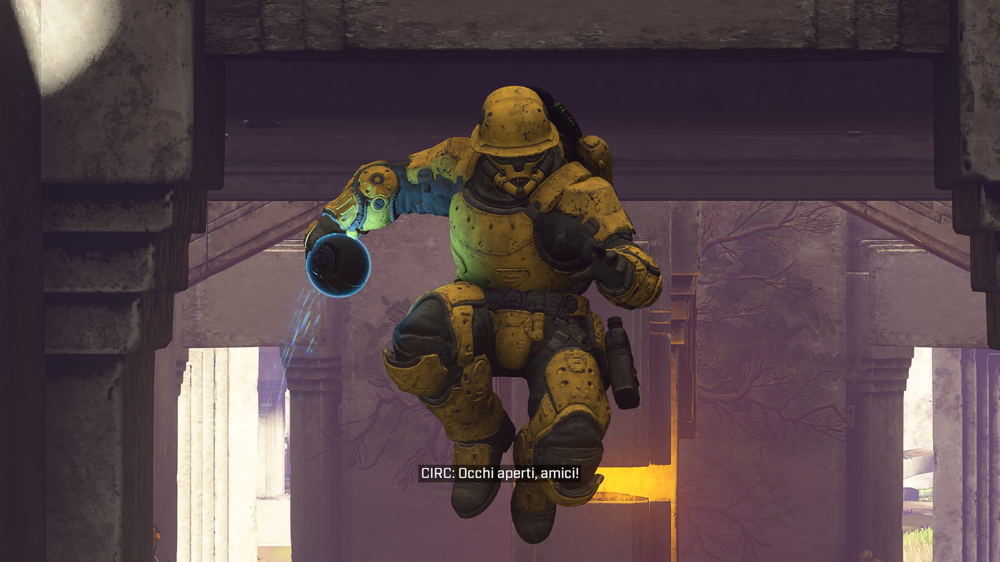
L’assalto per piazzare la bomba nel cuore della
“Sala Nerd” di Colt effettivamente risulta più facile
del previsto. Entrano senza alcun ostacolo in vista.
In pochi passi, Tigrozzo e una squadra di Valore
si ritrovano nel mezzo della sala. “Madonna che gusti di merda”
esclama Tigrozzo. Altri di Valore però hanno una
altra domanda “Ma non dovevi affrontare Pino?”.
“Pin, Colt, Cobra, One Piece tutti la stessa merda per me"
risponde Tigrozzo. Noble lo hanno lasciato fuori dalla
villa, sulla torretta di warthog ad aspettare.
Tigrozzo piazza la bomba proprio al centro
“Ohhhh bella qui sai che botto”.
Poi, incrocia le braccia e dice
“bene signori, il nostro lavoro è concluso direi che
si è vinto questa prima partita”.
L’esercito di Valore è a questo punto
assalito da una una unica certezza: Tigrozzo è
un idiota. “Tigrozzo guarda che bisogna attivarla sta
bomba” alcuni sussurrano, e Tigrozzo “e come si fa?”
Patrifu e Spartan provano ad aiutare Tigrozzo.
Khan e Penny hanno preso due fucili di precisione
che vorrebbero usare sulla faccia di Tigrozzo ma
si calmano perchè la bomba viene effettivamente
attivata. Mentre l’intera Gilda Valore
è nella sala in silenzio
dal balcone interno si sente *clap *clap *clap.
Colt esce allo scoperto come un villan di tutto rispetto
così come Pino e l’intera Gilda Cobra.
“Bene Bene, cosa abbiamo qui?”, “un gruppo
di dislessici che piazzano una bomba senza sapere
nemmeno come attivarla”. Pino “basta parlare
uccidete Merdozzo!!!”.
Una pioggia di proiettili cade sull’esercito di Valore.
Ma anche sui poster di One Piece. Colt
non ha fatto in tempo a fermare l’ordine di Pino che
urla e si dispera “Pinooooo you fucking dog!! Che
cazzo di ordine hai dato!! Ci sono i miei Poster!!!”
La Gilda Valore batte in ritirata. Nel mentre,
Copter pensando che Valore stesse scappando,
prende un Warthog per inseguire il nemico.
Sulla torretta si trova Noble che non ha la minima
idea di quello che sta succedendo e si fa
trasportare via “Vabbè abbiamo fatto così
veloce che torniamo a casa per cena”. Copter
si gira, vede Noble e decide di schiantarsi con il Warthog.
Prende male le distanze e si incastra nelle rocce.
“Vabbè tanto Valore è in fuga”.
Lascia quindi Warthog e Noble incastrati fra le rocce.
La bomba non è stata piazzata, Valore
non è stata distrutta. Pareggio.
The assault to plant the bomb in the heart of Colt's “Nerd Room” actually turns out easier than expected. They walk in with no obstacle in sight. Within a few steps, Tigrozzo and a Valore squad find themselves in the middle of the room. “Good grief, what crap taste” Tigrozzo exclaims. Others in Valore, though, have a different question: “Weren't you supposed to be facing Pino?”. “Pin, Colt, Cobra, One Piece, all the same crap to me" Tigrozzo replies. They left Noble outside the villa, on a Warthog turret, waiting. Tigrozzo plants the bomb right in the middle: “Ohhhh lovely, what a bang this'll make”. Then he folds his arms and says “right gentlemen, our work here is done, I'd say we've won this first match”. At this point the Valore army is struck by a single certainty: Tigrozzo is an idiot. “Tigrozzo, look, you have to arm this bomb” some whisper, and Tigrozzo: “and how do you do that?” Patrifu and Spartan try to help Tigrozzo. Khan and Penny have picked up two sniper rifles they'd like to use on Tigrozzo's face but they calm down because the bomb does actually get armed. While the whole Valore Guild stands in the room in silence, from the inner balcony comes *clap *clap *clap. Colt steps into the open like a thoroughly respectable villain, and so do Pino and the entire Cobra Guild. “Well well, what have we here?”, “a bunch of dyslexics planting a bomb without even knowing how to arm it”. Pino: “enough talking, kill Turdozzo!!!”. A rain of bullets falls on the Valore army. But also on the One Piece posters. Colt doesn't manage to countermand Pino's order in time and screams in despair “Pinooooo you fucking dog!! What kind of damn order was that!! My Posters are in there!!!” The Valore Guild beats a retreat. Meanwhile, Copter — thinking Valore was fleeing — grabs a Warthog to chase the enemy. On the turret sits Noble, who has no idea what's happening and gets carted off: “Ah well, we were so quick we'll be home for dinner”. Copter turns, sees Noble and decides to crash the Warthog. He misjudges the distance and gets wedged in the rocks. “Ah well, Valore's running away anyway”. So he leaves the Warthog and Noble jammed among the rocks. The bomb wasn't planted, Valore wasn't destroyed. Draw.
No. #1
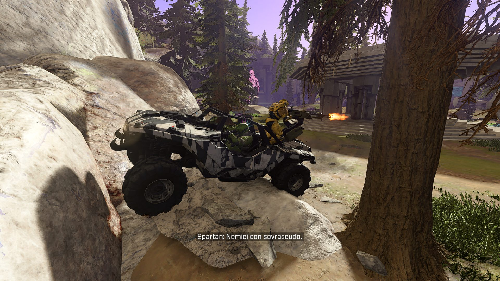
Tigrozzo tira fuori una cartina davanti a tutto l’esercito
“Ahhh Ah! Ecco il mio piano segreto”. Tutti cominciano
ad avere paura. “Ho rubato la mappa delle ville di Cobra
e penso proprio di sapere dove piazzare la prossima bomba”
“Basta con sta bomba”, alcuni non ne possono più,
altri “Ma non dovevi scontrarti con Pino? 1v1 e
fatela finita!”. Tigrozzo non ascolta, apre la mappa e comincia
a dare direttive. “C’è una residenza estiva che sta a cuore
a Cobra, è li che li colpiremo”. Puffo “Spostarsi da colpire
Pino a colpire Colt mi piace sempre di più”.
Tigrozzo pulls out a map in front of the whole army: “Ahhh ha! Here's my secret plan”. Everyone starts to get scared. “I stole the map of Cobra's villas and I'm pretty sure I know where to plant the next bomb”. “Enough with this bomb”, some can't take any more; others: “Weren't you supposed to face Pino? 1v1 and be done with it!”. Tigrozzo doesn't listen, opens the map and starts giving directions. “There's a summer residence dear to Cobra, that's where we'll hit them”. Puffo: “Switching from hitting Pino to hitting Colt appeals to me more and more”.
Seconda Partita. L’esercito di Valore arriva su una nave alla
“Colt Island” un luogo di riposo ma anche con
black jack e squillo di lusso. Non fanno in tempo a vedere
la riva che da tutt’altra parte dell’isola è arrivata la Gilda Cobra.
Alcuni di Valore “Come fanno a sapere che siamo qui??”.
Pino “ma non hanno ancora capito che
ci sono telecamere dappertutto…"
La Gilda Valore e la Gilda Cobra approdano sull’isola.
I pochi residenti, si armano fino ai denti per proteggere le
loro puntate di black jack (ma soprattutto le squillo di lusso appena pagate)
“non avrete le nostre puttane!!!”. Colt incita i residenti a difendersi
ma non ha specificato contro chi, quindi alcuni attaccano pure
la Gilda Cobra.
Second Match. Valore's army arrives by ship at "Colt Island", a place of rest but also of blackjack and high-class call girls. They barely catch sight of the shore before the Cobra Guild lands on the far side of the island. Some of Valore: "How do they know we're here??". Pino: "have they still not worked out that there are cameras everywhere..." The Valore Guild and the Cobra Guild come ashore. The few residents arm themselves to the teeth to protect their blackjack stakes (and above all the high-class girls they have just paid for) "you're not having our whores!!!". Colt urges the residents to defend themselves but never specifies against whom, so some of them attack the Cobra Guild as well.
No. #1
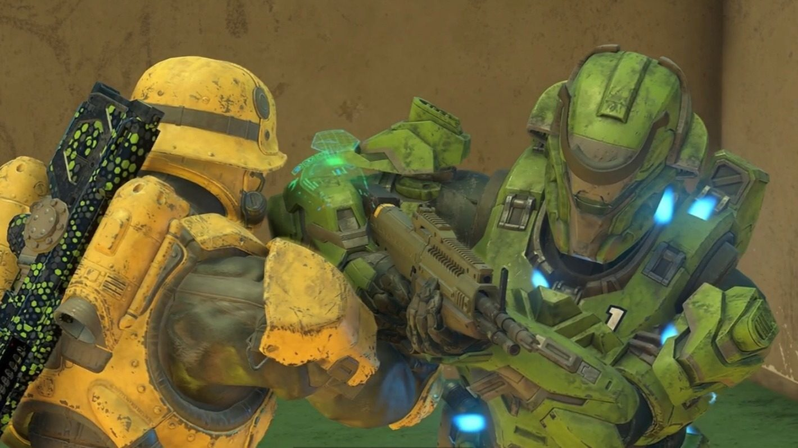
La battaglia si svolge non solo via terra ma, come in Batman Forever,
anche “via mare e via aerea”. Joe Moo è super eccitato,
oramai ha imparato a muoversi e saltare e pure a salire e scendere
dai veicoli in una sola partita (Joe Moo 1 - Gigatzu 0).
Tigrozzo non vuole piazzare una sola bomba, ma sfodera dalla
sua giacca a vento come un pedofilo ben 5 bombe “Muahahahah”.
Le distribuisce all’esercito Valore, prende Noble a braccetto e si
dirigono ai veicoli: di mare e di aria. La partita inizia e Valore comincia
a far saltare alcune zone dell’isola. I residenti sono super incazzati
vedendo le loro puttane esplodere in mille pezzi.
La Gilda Cobra si difende al meglio ma non c’è nulla da fare,
Valore sta avendo lentamente la meglio: l’isola è in fiamme.
Pino prende un aereo senza nessuno a bordo, cerca una fuga provvisoria:
abbattuto da Puffo. Copter decide di prendere un Warthog. Alla torretta
si ritrova residenti incazzati neri “cioè noi si paga pure l’affitto a Colt
e ci ritroviamo in sto casino.” Su un altro veicolo che sta andando
in fiamme, Noble e Tigrozzo scendono e si allontanano, ma si voltano
una ultima volta vedendo che Joe Moo è rimasto nel
sedile del passeggero. "Scendi Joe Moo!!"
"Sta per esplodereeee!!". Joe Moo (forse troppo emozionato dalla partita),
preme il pulsante sbagliato, pensa di essere sceso ma
invece cambia sedile e si ritrova alla guida
del veicolo. Quindi cerca di allontanarsi, ma invece sta solo spingendo l'acceleratore:
Tigrozzo e Noble vedono il veicolo accelerare ed esplodere,
e Joe Moo sparire fra le fiamme dell'esplosione (Joe Moo 1 - Gigatzu 1, palla al centro).
Scariche di proiettili e urla invadono l’isola. Tutto è in fiamme.
The battle plays out not only by land but, as in Batman Forever, also "by sea and by air". Joe Moo is thrilled: he has finally learned to move and jump, and even to get in and out of vehicles in a single match (Joe Moo 1 - Gigatzu 0). Tigrozzo doesn't want to plant just one bomb; he pulls a full five out of his windbreaker like a flasher, "Muahahahah". He hands them round the Valore army, takes Noble by the arm and they head for the vehicles: sea and air. The match begins and Valore starts blowing up parts of the island. The residents are furious, watching their whores explode into a thousand pieces. The Cobra Guild defends as best it can but there is nothing to be done: Valore is slowly winning, and the island is in flames. Pino grabs a plane with nobody else aboard and looks for a temporary escape: shot down by Puffo. Copter decides to take a Warthog. At the turret he finds residents seething, "I mean, we pay Colt rent and this is the mess we end up in". On another vehicle already burning, Noble and Tigrozzo climb out and walk away, but they turn one last time and see that Joe Moo is still in the passenger seat. "Get out, Joe Moo!!" "It's about to blow!!". Joe Moo (perhaps too caught up in the match) presses the wrong button, thinks he has got out but instead switches seat and finds himself driving. So he tries to pull away, except he is only flooring the accelerator: Tigrozzo and Noble watch the vehicle speed up and explode, and Joe Moo vanish into the flames (Joe Moo 1 - Gigatzu 1, kick-off). Bursts of gunfire and screaming sweep the island. Everything is on fire.
Tigrozzo è super soddisfatto e decide che basta così
“ahhh che soddisfazione, torniamo a casa”. Le navi abbandonano
l’isola. E Valore torna a riva, viaggia con tanti veicoli verso Sangiarno
per festeggiare. A pochi metri da abbandonare Levania, le ruote dei
veicoli cominciano a congelarsi, così come tutto il paesaggio
circostante. “Ma che cazzo succede” l’esercito di Valore è
impaurito. In lontananza, come a Mad Max (Pino alla chitarra),
la Gilda Cobra rincorre Valore con altrettanti veicoli.
La rabbia di Colt e Pino verso Tigrozzo si trasforma in pazzia
furiosa. “Merdozzoooo” le urla che inseguono Valore riecheggiano
nella valle che piano piano si sta congelando. Tigrozzo
vede in lontananza su una macchina Drius che flette un braccio verso
Valore e sta piano piano trasformando tutto in ghiaccio.
Tigrozzo is thoroughly satisfied and decides that's enough, "ahhh, what a satisfaction, let's go home". The ships leave the island. Valore returns to shore and drives a convoy back towards Sangiarno to celebrate. A few metres short of leaving Levania, the wheels of the vehicles begin to freeze, and so does the whole landscape around them. "What the hell is going on" - the Valore army is frightened. In the distance, like Mad Max (Pino on guitar), the Cobra Guild is chasing Valore with just as many vehicles. Colt and Pino's anger at Tigrozzo turns into furious madness. "Merdozzoooo" - the screams pursuing Valore echo through the valley as it slowly freezes over. Far off, on a car, Tigrozzo sees Drius flexing an arm towards Valore, turning everything to ice little by little.
Un ghiaccio scivoloso che porta il prossimo scontro in una
semi goliardia da Paperissima con Warthogs (Mania) che slittano
fanno testacoda e si scontrano come gli autoscontri delle fiere.
Slippery ice that carries the next clash into a sort of slapstick reel, Warthogs (Mania) skidding, spinning out and crashing into each other like bumper cars at a fairground.
Risate isteriche di Cobra e paura di Valore riempono il campo di
battaglia. In tutto questo c’è chi perde il veicolo, chi cerca
di recuperarlo, e poi c’è Gigatzu. Fermo, immobile.
Paralizzato come un codice rosso da PS, non si ricorda come si sale sul veicolo.
Alla guida del veicolo c’è Swine che sta urlando contro
Gigatzu “Gnamoooo saliiiii!!” alla torretta c’è Clavuss
“Daiiiii”. Gigatzu, chiude gli occhi, e ‘preme un pulsante a caso’.
Quel pulsante non gli permette di salire sul veicolo, al contrario
lancia una bomba. Non una bomba qualsiasi, ma una bomba appiccicosa.
Cala il silenzio, mentre Swine guarda Gigatzu, Gigatzu guarda Swine,
e Clavuss guarda la bomba innescata che si è appiccicata
fra gli occhi di Swine e con la stessa espressione di Switch
in Matrix 1 “Però ragazzi così no porcod…”.
Il Warthog, Swine, Clavuss, Gigatzu saltano in aria in mille pezzi in lontanza.
Nel cuore della valle di ghiaccio, lo scontro è aperto.
Pino e Tigrozzo sulle torrette si sparano a vicenda “Merdozzoooo!!”
“Scarsooooot!!”, i rispettivi guidatori si vorrebbero
fermare scendere e tornare a casa per l’ennesimo dissing da asilo nido.
Fra le varie esplosioni, Sootz alla guida del Warthog del Leader Cobra, Colt,
decide di prendere una scorciatoia e sbucare alle spalle del nemico.
Il Warthog prende il volo sopra una roccia oramai coperta di neve.
Copter che aveva perso il veicolo si ritrova sotto il salto del veicolo e come
Free Willy, porge il braccio verso l’alto urlando “Vai Sootz!!”.
Il Warthog atterra in mezzo a 3 veicoli di Valore e viene letteralmente polverizzato.
In tutto questo, Sootz prendendo quella scorciatoia aveva sentito Colt
urlargli qualcosa e realizzò, una volta crivellato, che non era
“Vai vaiii” ma era “Cazzo fai??”.
Hysterical laughter from Cobra and fear from Valore fill the battlefield. Through all of it there are those who lose their vehicle, those who try to get it back, and then there is Gigatzu. Still. Motionless. Paralysed like a code red in A&E, unable to remember how to board a vehicle. At the wheel is Swine, screaming at Gigatzu "come oooon, get iiiin!!", and on the turret Clavuss, "Coooome on". Gigatzu shuts his eyes and 'presses a random button'. That button does not get him into the vehicle; on the contrary, it throws a grenade. Not just any grenade, a sticky one. Silence falls: Swine looks at Gigatzu, Gigatzu looks at Swine, and Clavuss looks at the primed grenade now stuck between Swine's eyes, wearing exactly Switch's expression in Matrix 1, "come on lads, not like this for God's...". The Warthog, Swine, Clavuss and Gigatzu are blown to pieces in the distance. In the heart of the frozen valley, the fight is on. Pino and Tigrozzo shoot at each other from the turrets, "Merdozzoooo!!" "Rubbiiiish!!", while their respective drivers would quite like to stop, get out and go home rather than sit through yet another nursery-school dissing match. Amid the explosions, Sootz - driving Cobra leader Colt's Warthog - decides to take a shortcut and come out behind the enemy. The Warthog takes off over a rock by now covered in snow. Copter, who had lost his vehicle, finds himself under the jump and, like Free Willy, raises an arm shouting "Go Sootz!!". The Warthog lands in the middle of three Valore vehicles and is quite literally pulverised. Through all of this, taking that shortcut, Sootz had heard Colt yelling something at him and realised, once riddled with bullets, that it wasn't "Go, gooo" but "What the hell are you doing??".
No. #1
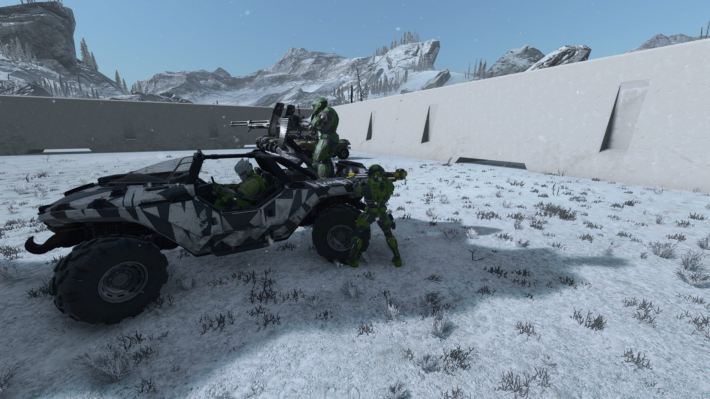
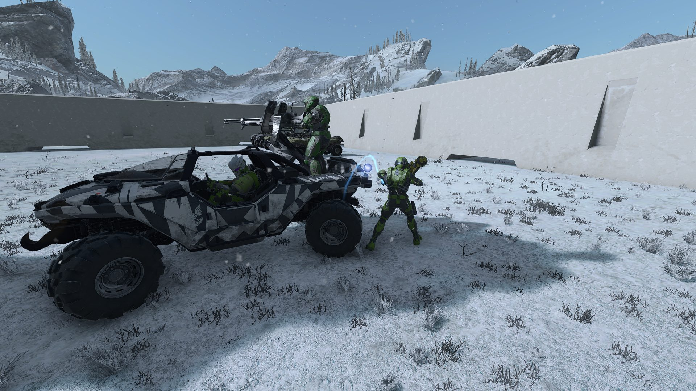
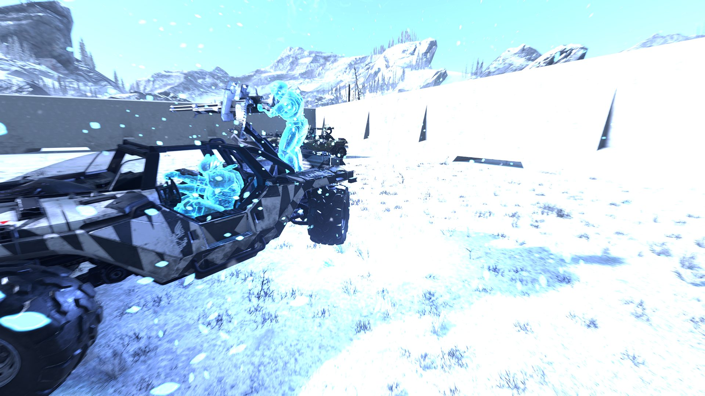
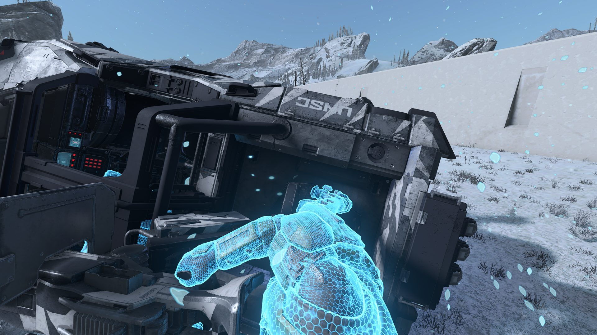
Il ghiaccio scompare, i veicoli si fermano e Tigrozzo portando Noble
in carrozzina incontra Colt e Pino al centro della mappa.
“Basta avete perso” inizia Tigrozzo. Pino “hai rotto il cazzo. Hai
solo attaccato Cobra, dove sta il nostro scontro?”
The ice disappears, the vehicles stop, and Tigrozzo - pushing Noble in a wheelchair - meets Colt and Pino at the centre of the map. "Enough, you've lost" Tigrozzo begins. Pino: "you're a pain in the arse. All you've done is attack Cobra, where's our fight?"
Ultima Partita. Showdown. “Allora lasciamo Koelttt in panca e sfidiamoci
noi due”. Pino “nessun problema”. Tigrozzo riporta Noble nell’esercito,
chiede ai leaders di riportarlo a Sangiarno. “Voglio solo voi mercenari
per fare il culo a Scarsot”. Pino torna da Cobra “bisogna aprire il culo
a Merdozzo, non mi servono leaders”. I leaders delle rispettive Gilde
si guardano fra di loro, tirano un sospiro di sollievo e invece di
abbandonare il campo di battaglia aprono sedie da campeggio e
tirano fuori i pop-corn “cazzo questa non me la perdo”.
Last Match. Showdown. "Right, let's leave Koelttt on the bench and settle this between the two of us". Pino: "no problem". Tigrozzo takes Noble back to the army and asks the leaders to return him to Sangiarno. "I only want you mercenaries, so we can kick Scarsot's arse". Pino goes back to Cobra: "we need to tear Merdozzo a new one, I don't need leaders". The leaders of the two Guilds look at each other, breathe a sigh of relief and - instead of leaving the battlefield - unfold camping chairs and get the popcorn out: "no way am I missing this".
Il paesaggio torna verdeggiante, labirintico e le squadre sono
in posizione su Sandbar. I due VIP, Pino e Tigrozzo a bordo mappa
incitano il loro esercito di mercenari a portare la testa del rispettivo nemico
“no scusate e voi che fate?” alcuni mercenari non capiscono.
Ad ogni modo, Ifrid è diventato una furia omicida, Spartan tira fuori
dal taschino una seconda arma direttamente dai parenti meridionali
Khan si apposta con un cecchino e si mette a sedere “senti c’ho una certa,
ora mi riposo un attimo”. Joe Moo invade la mappa saltellando
“Cazzo bellissimo” spara qua e là nel labirinto oramai
pieno di gioia indipendentemente dalla Guerra in corso.
The landscape turns green and maze-like again and the teams are in position on Sandbar. The two VIPs, Pino and Tigrozzo, stand at the edge of the map urging their mercenary armies to bring back the other's head. "Sorry, and what exactly are you two doing?" - some of the mercenaries don't follow. Either way, Ifrid has become a murderous fury, Spartan pulls a second weapon out of his pocket courtesy of his southern relatives, and Khan sets up with a sniper rifle and sits down: "listen, I'm a bit peckish, I'm having a breather". Joe Moo invades the map hopping about, "bloody brilliant", firing here and there in a maze now full of joy quite regardless of the War going on.
No. #1
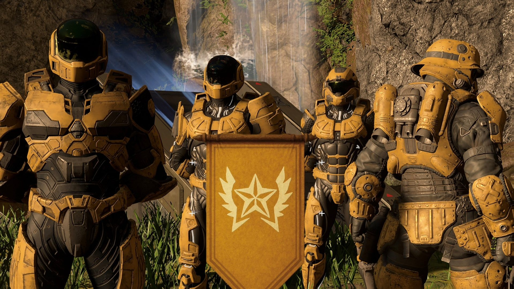
Pino, lascia la corona VIP ad un suo compagno che viene accerchiato e ucciso.
Tigrozzo, lascia la corona VIP ad un suo compagno che viene fucilato.
Si trovano in mezzo alla mappa, faccia a faccia e...
e niente ricomincia il dissing alla Mcgregor e Khabib.
Tutti guardano i due che si dissano e decidono di abbandonare le armi e lasciare
il campo di battaglia “Minchia che palle ragazzi..”.
I leader ripiegano le sedie da campeggio e tornano a casa “eppure fino al dissing
ci stava come partita”. Puffo, nel ripiegare la sedia, chiede a tutti
"ma a voi non vi fischiano le orecchie?" tutti scuotono la testa.
Puffo aveva ricevuto così tante infamate quella sera che non riuscì
a dormire da un rumore di sottofondo con parole (offese) a malapena comprensibili.
Ma Copter prima di abbandonare la postazione, prese i pop-corn,
glieli tirò in faccia e disse "Vai a letto puffo di merda".
E con Sootz (caricato in carovana come un prigioniero), tornarono a Malthor.
Pino hands the VIP crown to a team-mate, who is surrounded and killed. Tigrozzo hands the VIP crown to a team-mate, who is shot. The two meet in the middle of the map, face to face and... and the McGregor-versus-Khabib dissing starts all over again. Everyone watches the pair trading insults, then decides to drop their weapons and leave the battlefield: "bloody hell lads, this is boring". The leaders fold up the camping chairs and head home: "and yet, right up to the dissing, it was a decent match". Puffo, folding his chair, asks everyone "don't your ears ever ring?" - they all shake their heads. Puffo had taken so much abuse that evening that he couldn't sleep for a background hum of barely intelligible words (insults). But before leaving his spot Copter picked up the popcorn, threw it in Puffo's face and said "go to bed, you shitty smurf". And with Sootz (loaded into the convoy like a prisoner), they returned to Malthor.
La Guerra dei Campioni iniziò con il dissing e finì con altrettanto dissing.
The War of Champions began with dissing and ended with just as much dissing.
Side Quest: Il Terzo MatchSide Quest: The Third Match
5 Febbraio 2026. Posters. Dalla ultima Guerra, è chiara la
voglia di partecipare, di combattere e di vincere: cioè di
guadagnare dei soldi per andare in vacanza alle Maldive questa estate.
I mercenari chiedono una mano a Sootz, esperto di marketing, e utilizzano
PPT per stampare poster di loro stessi e affigerli per tutta l’Agorà.
Fra i quali vediamo i Campioni Tigrozzo e Patrifu, lo stesso Sootz (in cerca
di fuga dal burnout dalla Gilda Bastione) e ancora Flying WC, Clavuss e AeroStokes.
Fra i tanti, molti si fermano davanti a quello di Pino e vomitano per motivi
ignoti. Le loro quotes, le loro storie e i loro prezzi: quale mercenario
deciderete di pagare per la prossima Guerra? scopriteli tutti
su 5 February 2026. Posters. Since the last War the appetite to take part, to fight and to win has been obvious - which is to say, the appetite to earn enough money for a holiday in the Maldives this summer. The mercenaries ask Sootz, a marketing expert, for a hand and use PowerPoint to print posters of themselves and paste them all over the Agora. Among them we see the Champions Tigrozzo and Patrifu, Sootz himself (looking to escape burnout at the Bastione Guild), and also Flying WC, Clavuss and AeroStokes. Of the many, quite a few stop in front of Pino's and are sick for reasons unknown. Their quotes, their stories and their prices: which mercenary will you pay for the next War? Find them all on AgoràAgora
9 Febbraio 2026. Prologo.
L’ultima Guerra fù molto intensa. Non solo vide tutti i leader schierarsi,
ma vide pure le prime Armate crearsi. Lunga fu l’attesa per una prima partita
multi-teams e intensa fu la sfida. La fine della Guerra porta sempre tante
celebrazioni ma pure tanto rancore che cresce nell’ombra pronto per trasformarsi
in nuove sfide e zizzagna (l’hobbie preferito di questo campionato).
Il Maestoso Hernicopter, rientrato tra le mura della sua dimora colossale
(il marketing paga), non del tutto soddisfatto dall'ultima side quest,
passa nella sala dei trofei di Bastione per rincuorarsi della sua maestosità.
9 February 2026. Prologue. The last War was intense. It not only saw every leader take the field, it also saw the first Armies form. The wait for a first multi-team match was long and the contest was fierce. The end of a War always brings plenty of celebration, but also plenty of resentment growing in the shadows, ready to turn into new challenges and troublemaking (this championship's favourite hobby). The Majestic Hernicopter, back within the walls of his colossal residence (marketing pays), not entirely satisfied with the last side quest, drops into Bastione's trophy room to be cheered up by his own magnificence.
“Ahhh il premio Noble Party Gran Paradiso. Contro 7 Gilde abbiamo fatto il culo a
tutti”. E poi, si avvicina alla teca di un premio tanto antico quanto importante.
Si gela. La teca è vuota.
"Ahhh, the Noble Party Gran Paradiso prize. Seven Guilds and we kicked all of them". And then he steps up to the case holding a prize as old as it is important. He freezes. The case is empty.
“DOVE È IL PREMIO DEL MIGLIOR VIDEOGIOCO????” , “DOVE STAAAAA???”
"WHERE IS THE BEST VIDEOGAME AWARD????", "WHERE IS IIIIT???"
Flying WC, mercenario di fiducia e custode dei trofei, si fionda nella sala dei
trofei e trova Copter in ginocchio davanti alla teca vuota.
Flying WC, trusted mercenary and keeper of the trophies, races into the trophy room and finds Copter on his knees in front of the empty case.
“Signore cosa è successo??”. “È sparito, l’hanno rubato!!”.
“Cosa Signore??? Quale DVD di Steven Seagal?? Nico?? Trappola in Alto Mare??
Non mi dica Duro a Uccidere, non possono averlo pres..” . “No brutto idiota.
Il premio del miglior Videogioco”. “Ah”.
"Sir, what happened??". "It's gone, they've stolen it!!". "What, sir??? Which Steven Seagal DVD?? Nico?? Under Siege?? Don't tell me it's Hard to Kill, they can't have taken th..". "No, you idiot. The Best Videogame award". "Ah".
Quel premio, firma di Bastione del 2023 era una asta d’oro lunga 2m dove vi era appesa
la stampa in oro di tutti i nomi che votarono il videogioco di Bastione. Essa,
Aveva portato prosperità e credibilità alla conoscenza di Bastione
nel mondo dei videogiochi. Molti sponsor e danari arrivarono da allora. E adesso,
il premio, era stato trafugato. Non si trattava di un semplice furto, ma di un
affronto deliberato, capace di scuotere le fondamenta stesse della Gilda.
Flying WC si piega e sul lato della pietra dove poggiava il premio vi era inciso
un segno inequivocabile: una doppia lama ricurva incisa sulla pietra, inconfondibile
simbolo della Gilda Sciabola. Con scritto “finale 2023 totalmente pilotata. Non ti
meriti niente schifoso.”
Un messaggio chiaro, pensato per essere compreso.
That award, Bastione's signature piece from 2023, was a two-metre golden rod hung with a gold print of every name that voted for Bastione's videogame. It had brought prosperity and credibility to Bastione's standing in the world of videogames. Plenty of sponsors and plenty of money had followed. And now the award had been stolen. This was no ordinary theft but a deliberate affront, one capable of shaking the Guild's very foundations. Flying WC bends down and, on the side of the stone the award had rested on, finds an unmistakable mark: a double curved blade carved into the rock, the unmistakable symbol of the Sciabola Guild. Alongside it: "the 2023 final was completely rigged. You deserve nothing, you creep." A clear message, meant to be understood.
Antiche offese della gilda Sciabola riaffiorano in Copter. Fra le quali: “Avatar
è una merda”, “Sempre sti giochi da tavolo troppo complicati per nerdoni”.
La rabbia stava solo crescendo e nessuna mediazione sarebbe stata fatta. Il furto
del premio non poteva restare impunito.
“Eh non voglio fare Guerre Side Quests, non voglio giocare….ora gliela do io una Guerra
Side Quest a quello lì”. Copter, stava quindi preparando l’armata di Bastione per
riconquistare il premio perduto. Nessuna mediazione sarebbe stata fatta.
Il trofeo doveva tornare al suo posto.
Old insults from the Sciabola guild resurface in Copter. Among them: "Avatar is rubbish", "always these board games that are far too complicated for nerds". The anger only grew, and there would be no mediation. The theft of the award could not go unpunished. "Oh, I don't want to do Side Quest Wars, I don't want to play... well now I'll give that one a Side Quest War". Copter was therefore preparing Bastione's army to win back the lost award. There would be no mediation. The trophy had to go back where it belonged.
20 febbraio. Celebrazione.
Karmic che aveva trovato dimora nelle lande aspre e selvagge di Bucinor, dove sorgevano gli antichi
templi e i manufatti sacri della Gilda. La sua abilità e la sua disciplina lo avevano
reso il candidato ideale come erede e capo indiscusso di Sciabola.
Aiutato dallo “Sgravo Fiscale” applicato a tutti coloro che avessero preso dimora vicino a dei vulcani
attivi, Karmic aveva preso la dimora dell'antica Gilda Sciabola per il campionato. Unica scelta dopo
aver dato tutti i soldi a Stokes per l’Hyrox. Con le poche finanze che restano, Karmic aveva usato
la prudenza per questo campionato restando lontano da scontri, rifuggendo battaglie futili (o rischiose)
e conflitti privi di una reale necessità, come quello che stava inconsapevolmente imbastendo con
questo affronto a Bastione. Ma allora perchè questo affronto a Bastione?
20 February. Celebration. Karmic had made his home in the harsh, wild lands of Bucinor, where the Guild's ancient temples and sacred artefacts stood. His skill and his discipline had made him the natural heir and undisputed head of Sciabola. Helped by the "tax break" granted to anyone taking up residence near active volcanoes, Karmic had taken the ancient Sciabola Guild's seat for the championship. The only option left after giving all his money to Stokes for Hyrox. With what little was left, Karmic had played this championship cautiously, staying clear of confrontation, avoiding pointless (or risky) battles and conflicts with no real need behind them - like the one he was unwittingly setting up with this affront to Bastione. But then why the affront to Bastione?
Proprio qui, a Bucinor, lontano dai preparativi di Bastione, Karmic ha preso finalmente il titolo di
dottore. Diploma ottenuto con le scuole serali economiche ma comunque sia un diploma: l’unico nella
Gilda Sciabola. Con questo diploma, Karmic vide la luce in fondo al tunnel pronto per rimettere in
piedi la Gilda Sciabola. La Scroll Academy aveva avuto il suo piccolo successo invernale ma non
sufficiente per recuperare i buchi dei bilanci finanziari della Gilda. Ora, molti mercenari feriti
potranno venire da Sciabola a curarsi in cambio di favori per la Gilda. Una piccola festa fu imbastita
per questo evento contrariamente a Karmic che urlò “Basta Spendere!!!”
Right here in Bucinor, far from Bastione's preparations, Karmic finally earned the title of doctor. A qualification obtained through cheap evening classes, but a qualification all the same: the only one in the Sciabola Guild. With it Karmic saw the light at the end of the tunnel, ready to put the Sciabola Guild back on its feet. The Scroll Academy had enjoyed a modest winter success, though not enough to plug the holes in the Guild's accounts. Now many wounded mercenaries would be able to come to Sciabola to be treated in exchange for favours to the Guild. A small party was thrown for the occasion, against the wishes of Karmic, who shouted "stop spending!!!"
Accorsero molte Gilde alla festa a Bucinor, fra le quali, non Bastione. “Copter ha fatto il solito
El Classico vero?” disse Karmic, “Boh non lo vediamo da giorni” risposero alcuni. SlickColt con la
pattuglia improvvisata di mercenari di Cobra, arrivano alla festa e si fiondano a fare qualche domanda
scortese a Karmic per la scomparsa di alcuni mercenari in Agorà.
“Sai qualcosa dei mercenari uccisi?...sei te il colpevole?...dove eri la notte fra il 5 e il...” .
“Gori...volevo dire Colt hai rotto il cazzo. Non sono io brutto idiota!!” [cit. Serata Among Us 2022].
La festa continua fino a tarda notte, mentre Karmic raccoglie tutte le bottiglie di vetro per portarle
al mercato di Bucinor e rivenderle per qualche soldo: non si butta via nulla. P.S. Stokes non venne
perchè non era servito alcol alla festa.
Many Guilds came to the party in Bucinor - Bastione not among them. "Copter pulled his usual El Clasico, didn't he?" said Karmic. "Dunno, we haven't seen him for days" some replied. SlickColt, with Cobra's improvised mercenary patrol, arrives at the party and immediately puts some rude questions to Karmic about the disappearance of several mercenaries in the Agora. "Do you know anything about the murdered mercenaries?... are you the culprit?... where were you on the night of the 5th and the...". "Gori... I mean Colt, you're a pain in the arse. It isn't me, you idiot!!" [quote: Among Us night, 2022]. The party runs on late into the night, while Karmic collects all the glass bottles to take to the Bucinor market and sell on for a few coins: nothing goes to waste. P.S. Stokes didn't come because no alcohol was served at the party.
9 Febbraio 2026. Trailer e Indagini.
Karmic aveva appena finito di pulire e accende la TV in contemporanea con le NobleNews.
Guardando il servizio, sputa il caffè tossendo “ACK- HAUGHK- AUCKH- ACAUGH...cosa??”.
Un annuncio di Bastione per una Guerra contro Sciabola. Karmic semplicemente, sviene.
Al suo risveglio, si ritrova davanti la faccia di Ifrid “che è successo...”.
“Ma niente signore ha soltanto bevuto troppo” . “Macchè dici! io non bevo...sto
parlando della Guerra!!” “Si, Bastione è in marcia.” “Ma perchè?? che ho fatto??”
“Ma che ne so Karmic, lo sai come è Copter: un coglione, sicuramente per
qualche futile scusa per prendere glorie immeritate” . “No ma qualcuno gli deve
dire qualcosa” “No Karmic, è il momento di tirare fuori il cazzo e sbatterglielo
in faccia a Bastione” “intanto modera i toni perchè qua ci leggono pure i bambini”
“Volvevo dire è il momento di difenderci e poi chiedere spiegazioni in caso”
“Non sono d’accordo ma meglio parlarne placando un pò quest attacco che sennò
Copter non mi darà ascolto” “Ben detto Signore, vado subito in Agorà a prendere reclute”
9 February 2026. Trailer and Investigations. Karmic had just finished cleaning and switches the TV on right as NobleNews starts. Watching the report, he spits out his coffee, coughing: "ACK- HAUGHK- AUCKH- ACAUGH... what??". An announcement from Bastione, of a War against Sciabola. Karmic simply faints. When he comes round, Ifrid's face is over him. "What happened...". "Nothing at all sir, you just had a bit too much to drink". "What are you on about! I don't drink... I'm talking about the War!!". "Yes, Bastione is on the march." "But why?? What have I done??". "How should I know, Karmic - you know what Copter's like: an idiot, no doubt some flimsy excuse to grab glory he hasn't earned". "No, but somebody needs to say something to him". "No, Karmic, it's time to get your cock out and slap Bastione in the face with it". "First of all, mind your language, children read this too". "I meant it's time to defend ourselves and then ask for an explanation afterwards". "I don't agree, but better to talk it over and take some heat out of this attack, otherwise Copter won't listen to me". "Well said, sir, I'll go to the Agora right now and get some recruits".
11 Febbraio 2026. Sondaggio. Ifrid arriva in Agorà, scopre che la campagna di
Bastione per il reclutamente era già iniziata. In più, dopo gli ultimi
omicidi, con le iscrizioni di Guerra aperte, in molti vogliono partecipare (sperando
di scampare alla morte).
11 February 2026. Poll. Ifrid arrives in the Agora and discovers Bastione's recruitment campaign has already begun. On top of that, after the recent murders and with the War sign-ups open, a great many want to take part (hoping to escape death).
Ifrid, prende una carriola e ci mette dentro Stokes ancora ubriaco, poi passa da una
altra locanda e vede Noble che legge un dizionario di italiano al contrario “vabbè
meglio di nulla” tira dentro pure lui. Intanto Bastione aveva già preso Puffo, Baudo
e Drius. Skate sapendo che Swine joinava Sciabola si è fiondato su Bastione. Mentre
Tigrozzo all’inizio dice "non lo so". Immaginatevi la carta Magic the Gathering Obliterate
(Obliterare, set Invasione) dove il Barrin, mago umano di Dominaria, incenerisce il paesaggio
davanti a lui distruggendo tutto. Un pò come Karmic che guarda il gruppo
Whatsup e il “non lo so” di Tigrozzo e vorrebbe fare lo stesso con i componenti
del gruppo Whatsup. Ma alla fine Tigrozzo si decide e sceglie Sciabola per amore
del passato. Glimpse esce dal centro scommesse, non si unisce ad Ifrid e punta tutto su Bastione.
Ifrid takes a wheelbarrow and puts Stokes in it, still drunk, then stops by another tavern and sees Noble reading an Italian dictionary back to front - "well, better than nothing" - and hauls him in too. Meanwhile Bastione had already taken Puffo, Baudo and Drius. Skate, knowing Swine was joining Sciabola, threw himself at Bastione. Tigrozzo, meanwhile, initially says "I don't know". Picture the Magic: The Gathering card Obliterate (Invasion set), where Barrin, the human wizard of Dominaria, incinerates the landscape in front of him and destroys everything. Rather like Karmic looking at the WhatsApp group and Tigrozzo's "I don't know" and wishing he could do the same to everyone in it. But in the end Tigrozzo makes up his mind and picks Sciabola, for love of the past. Glimpse leaves the betting shop, doesn't join Ifrid, and puts everything on Bastione.
22-23 febbraio. Un nuovo incontro.
Il reclutamenteo di Ifrid continua, e insieme a questo anche gli acquisti di armi e armature per
la prossima Guerra. Ma viene alla luce un problema. È tutto sold-out. Come è possibile?
Il gruppo di mercenari di Ifrid vaga per l’Agorà ma molti negozio sono chiusi per aver finito
le scorte. All’ennesimo negozio, che sta per chiudere, esce JaqueLuisDavid chiamato pure GigatzuMuiri,
un mercenario di lunga data, perse ogni sua traccia ben 20 anni fa. Noble apre il discorso
“Damo...volevo dire Jaque...volevo dire Gigatzu, ma da quando sei in Agorà?’” “Da tanto”
“ma che stai facendo?” “Sto comprando skins, basta cliccare compra ragazzi è facile”.
“Si ma costano soldi..” “Quali soldi” . “I soldi che…” . “Ho detto quali soldi..”.
Noble non ci prova e cambia discorso. “Comunque non ti serve spendere per partecipare
al campionato” Gigatzu riposa le armi sul carrello e chiede “Quale campionato?”.
“Giochiamo ad Halo Infinite in un Campionato” . “Ah ma si può pure giocare ad halo?
Io sono ancora alla sezione ‘Negozio’ ”. “Vabbè dai c’è una Guerra in corso vieni o no?”
. “Cosa è una guerra?”. “Te lo spieghiamo strada facendo dai...” .
“Se c’e da sparare posso bestemmiare vero?”. La campagna di reclutamento di Sciabola
giuse al termine e Ifrid portò la combriccola di leaders e mercenari a Bucinor.
22-23 February. A new encounter. Ifrid's recruiting continues, and along with it the buying of weapons and armour for the coming War. But a problem comes to light. Everything is sold out. How is that possible? Ifrid's group of mercenaries wanders the Agora, but many shops are closed, out of stock. At yet another shop, one about to close, out comes JaqueLuisDavid - also known as GigatzuMuiri - a long-standing mercenary who vanished without trace a good twenty years ago. Noble opens the conversation: "Damo... I mean Jaque... I mean Gigatzu, how long have you been in the Agora?". "A long time". "But what are you doing?". "I'm buying skins, you just click buy, lads, it's easy". "Yes, but they cost money..". "What money". "The money that...". "I said what money..". Noble gives up and changes the subject. "Anyway, you don't need to spend anything to take part in the championship". Gigatzu puts his weapons back on the trolley and asks "what championship?". "We play Halo Infinite in a championship". "Oh, you can actually play Halo as well? I'm still on the 'Store' tab". "Look, there's a War on, are you coming or not?". "What's a War?". "We'll explain on the way, come on...". "If there's shooting I can swear, right?". Sciabola's recruitment campaign came to an end and Ifrid led the band of leaders and mercenaries to Bucinor.
5 Marzo 2026. Il Terzo Match.
5 March 2026. The Third Match.
Bastione è arrivato a Bucinor. Alla vista di quella armata, Karmic sta per svenire perché
ha letteralmente imbiancato il portico l’altro ieri e sa che verrà spazzato via. Alle sua
spalle, arriva Svezio. Già…entra così nel Campionato. “Ciao a tutti”. Conosciuto da
pochi, ha trovato tempo libero stasera e si ritrova in una Guerra di fuoco e fiamme “È qui
la festa?”. “Ma che cazzo dici Svezio!! Non vedi stanno per distruggere tutto??” tuona Karmic.
“Ma scusa e la tua laurea?” “Già fatta Svezio” suggeriscono alcuni mercenari li presenti “Ah”.
L’arrivo di Bastione viene preceduto dalle urla meridionali di Spartan, il mercenario di cristallo,
“Ueeeeueeeee bellu stu vulcanuuuu ce l’abbiamo uno pure noiii” Drius: “taci ti prego”.
Bastione has arrived at Bucinor. At the sight of that army Karmic is about to faint, because he literally whitewashed the portico the day before yesterday and knows it is about to be wiped out. Behind him, Svezio turns up. Yes... that is how he enters the Championship. "Hi everyone". Known to few, he found himself free tonight and lands in a War of fire and flame: "is this where the party is?". "What the hell are you on about, Svezio!! Can't you see they're about to destroy everything??" Karmic thunders. "Sorry, but what about your degree?". "Already done, Svezio" some of the mercenaries standing around suggest. "Ah". Bastione's arrival is heralded by the southern hollering of Spartan, the crystal mercenary: "Weeeyyy, nice volcano this one, we've got one too". Drius: "be quiet, I'm begging you".
A questo punto l’ultimatum di Copter “rendimi il mio trofeo”. Karmic non fa in tempo a
rispondere che Ifrid sbotta “Mai coglione!”. Karmic guarda Ifrid e non capisce “ma di
cosa sta parlando?” Ifrid: “tu lascia fare a me”.
At this point comes Copter's ultimatum: "give me back my trophy". Karmic doesn't get the chance to answer before Ifrid snaps "never, you idiot!". Karmic looks at Ifrid and doesn't follow: "what is he talking about?". Ifrid: "you leave this to me".
Bastione prepara la carica. Prima partita, Invasione…..che finisce in meno di 3 minuti.
Bastione è un diesel. Lento a partire. Alcuni mercenari di Sciabola hanno pure smesso
di sparare che non serve. Karmic è confuso “eppure non è difficile sfondare un
portico di legno”. Nei ranghi di Bastione c’è confusione tanto che Puffo, fermo a guardare
Copter illustrare la sua strategia, viene ripetutivamente ucciso da Tigrozzo. La serata per
Tigrozzo è praticamente finita lì sentendosi Campione un’altra volta. Bastione si ferma,
non riesce ad entrare: inaspettata inespugnabile fortezza. Inespugnabile da Bastione…che beffa.
Bastione readies the charge. First match, Invasion..... which is over in under three minutes. Bastione is a diesel engine. Slow to start. Some of Sciabola's mercenaries have even stopped shooting because there's no point. Karmic is puzzled: "and yet breaking through a wooden portico isn't hard". There is such confusion in Bastione's ranks that Puffo, standing still watching Copter set out his strategy, is repeatedly killed by Tigrozzo. The evening is effectively over for Tigrozzo right there, feeling like a Champion once again. Bastione stalls, unable to get in: an unexpectedly impregnable fortress. Impregnable to Bastione... the irony.
Allora Bastione prova ad aggirare la fortezza (che con le finanze di Sciabola non era nemmeno
finita). In questo momento di apparente pace, Karmic prende un sospiro di sollievo “va bene
adesso ci si riposa no?” Ifrid non ci sta “col cazzo Bocci…volevo dire Karmic. Adesso gli si
tende un imboscata!”
So Bastione tries to go round the fortress (which, on Sciabola's finances, wasn't even finished). In this moment of apparent peace Karmic breathes a sigh of relief: "right, we can rest now, can't we?". Ifrid isn't having it: "like hell, Bocci... I mean Karmic. Now we ambush them!"
Copter e l’esercito di Bastione arrivano in una pianura di fuoco e fiamme “ma che cazzo
di posto è questo?”. Siamo letteralmente all’inferno, e non parlo del pronto soccorso,
ma bensì del luogo di riposo di Karmic. Avete capito bene: si riposa fra fuoco e
fiamme, immaginatevi il suo stress quotidiano. Aggirata la fortezza di Sciabola, Bastione arriva
sulla pianura di fuoco e fiamme (Valhalla Hollow), e al centro della mappa, c’è proprio
il trofeo rubato. Copter “Eccolo lì!!" mentre guarda quell’asta d’oro al centro della mappa.
Karmic non fa in tempo a guardare e rimane ancora una volta confuso “ma che è?” guarda
Ifrid che già comanda un piccolo plotone di Sciabola.
Copter and the Bastione army arrive on a plain of fire and flame: "what the hell is this place?". We are literally in hell - and I don't mean A&E, I mean Karmic's resting place. You read that right: he rests amid fire and flame; imagine his daily stress levels. Having gone round Sciabola's fortress, Bastione arrives on the plain of fire and flame (Valhalla Hollow) and there, at the centre of the map, is the stolen trophy. Copter: "there it is!!", staring at that golden rod in the middle of the map. Karmic barely has time to look and is confused all over again: "what's that?", glancing at Ifrid, who is already commanding a small Sciabola platoon.
Colt finisce di vomitare dopo aver vinto una partita con Noble e Tigrozzo, esce dal bagno
e si unisce allo scontro. Proiettili dappertutto, rigenerazione istantanea, il respawn
diventa una virgola nei quindici minuti di gioco. Ad un certo punto, Sciabola si compatta
prendendo i veicoli per contrastare i carri di Bastione. Ma quest’ultima ha messo sul
campo di battaglia un piano più subdolo del previsto. Un Copter-Bot ha aggirato
l’esercito di Sciabola e si è inserito fra i loro ranghi, esattamente come mitragliere
di Warthog. Ifrid prende quindi il veicolo e chiede un mitragliere, Copter-Bot sale sulla
mitragliatrice e con una voce robotica urlà
“V-a-i !! T-i-r-i-a-m-o-g-l-i i-l c-a-z-z-o i-n f-a-c-c-i-a!” Ifrid conferma
“Ben detto mitragliere!! vieni anche tu dalle Valli?”. Il Warthog sfreccia sul campo
di battaglia, si ferma davanti al nemico e Ifrid grida “Vai sparaaaaa fagli sentire il
cazzooooo”. Niente, silenzio. Nessun proiettile, nessun grido. Ifrid si gira, guarda in
faccia il mitragliere: “Merda è un bot”. La disperazione invade Sciabola che cerca
tutti di togliere dalla mitragliatrice il bot ma invano: il fuoco amico era stato disattivato.
Bastione, si riprende il trofeo, e lascia la pianura di fuoco e fiamme.
Colt finishes throwing up after winning a match with Noble and Tigrozzo, comes out of the bathroom and joins the fight. Bullets everywhere, instant regeneration, respawn reduced to a comma in fifteen minutes of play. At one point Sciabola pulls together, taking vehicles to counter Bastione's tanks. But Bastione has put a sneakier plan on the battlefield than anyone expected. A Copter-Bot has slipped round the Sciabola army and inserted itself into their ranks, as a Warthog gunner no less. Ifrid takes the vehicle and asks for a gunner; Copter-Bot climbs onto the turret and yells in a robotic voice "G-o !! L-e-t-'-s s-l-a-p t-h-e-m i-n t-h-e f-a-c-e!". Ifrid approves: "well said, gunner!! Are you from the Valleys too?". The Warthog tears across the battlefield, stops in front of the enemy, and Ifrid shouts "go on, shoooot, let them have iiiit". Nothing. Silence. No bullets, no shouting. Ifrid turns and looks the gunner in the face: "damn, it's a bot". Despair sweeps through Sciabola, everyone trying to pull the bot off the turret, in vain: friendly fire had been turned off. Bastione takes the trophy back and leaves the plain of fire and flame.
Karmic “allora io non so perchè mi hanno attaccato, ma dato che non hanno
distrutto nulla e ho appena ripeto finito di pagare le bollette direi di finirla qui”.
Ifrid sale su una roccia, davanti a lui la pianura di mercenari di Sciabola,
Karmic sta ancora una volta per avere un attacco di panico. “Mercenari di Sciabola...
La merda 'Bastone' ha rotto i coglioni, non possono fare quello che vogliono dove vogliono”.
Il discorso incita i poveri cerebrolesi mercenari che non sanno troppo cosa significa andare
in guerra, ma il discorso infuoca gli animi “Noooo non possono!!!”.
Karmic: "look, I don't know why they attacked me, but since they didn't destroy anything and I have literally just finished paying the bills, I'd say we leave it here". Ifrid climbs onto a rock, the plain of Sciabola mercenaries in front of him, and Karmic is once again on the verge of a panic attack. "Mercenaries of Sciabola... that turd 'Bastione' has pushed us too far, they can't do whatever they want wherever they want". The speech fires up the poor brain-dead mercenaries, who don't much know what going to war means, but the speech gets their blood up: "noooo, they can't!!!".
“Marceremo verso Bastione e gliela faremo pagare!!!”. Ifrid ha con sé il rancore
di un assalto nel 2024 alla dimora di Bastione che non riuscì. L’inespugnabile
difesa. Le leggende erano vere? “Andremo a Malthor per testare questa leggenda”.
"We will march on Bastione and make them pay!!!". Ifrid still carries the resentment of a failed assault on Bastione's residence back in 2024. The impregnable defence. Were the legends true? "We'll go to Malthor and put that legend to the test".
Copter rientrato nella dimora pulisce (e limona) il suo trofeo. WC un pò
disgustato si fa una camomilla rilassante guardando alla finestra la distesa pianeggiante.
Ma ad un certo punto sputa tutta la camomilla “Pffffffff…signore!! Sono gli Sciabola!!”.
Copter “Vedo che non hanno imparato la lezione, chiudete i portoni, prepararsi a ri-spedirli a casa”.
Back home, Copter polishes (and snogs) his trophy. WC, a little disgusted, makes himself a calming camomile tea and looks out of the window at the flat expanse beyond. Then all at once he spits the whole cup out: "Pffffffff... sir!! It's the Sciabola!!". Copter: "I see they haven't learned their lesson. Close the gates, get ready to send them home again".
No. #1
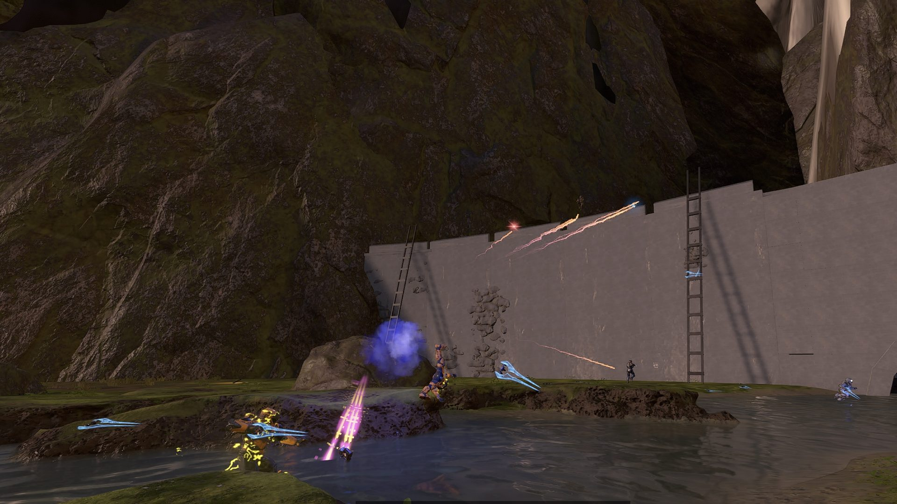
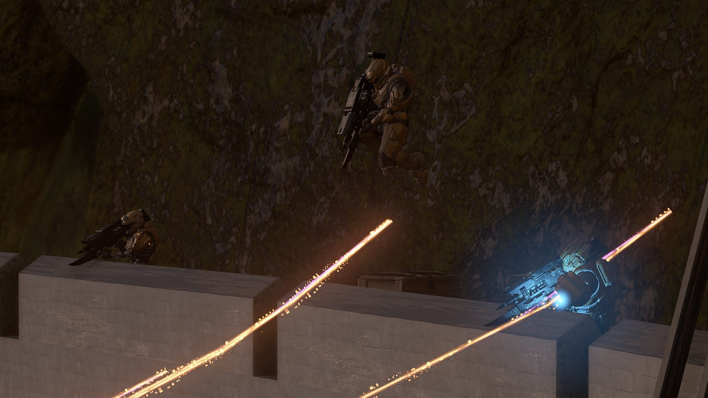
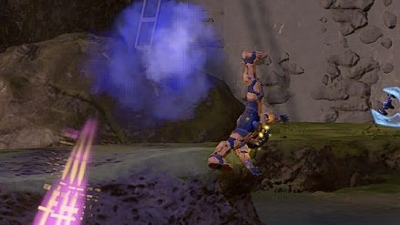
L’incursione di Sciabola comincia alle porte della dimora di Bastione (Il Fosso di Helm).
Grandi proiettli piovono sulle facce dell’esercito di Sciabola, Glimpse si ritrova a
non dover spostare l’obbiettivo che ha trovato il respwan di Noble che continua a rinascere e morire.
Sciabola's raid begins at the gates of Bastione's residence (Helm's Deep). Heavy rounds rain down on the faces of the Sciabola army, and Glimpse finds he doesn't need to move his aim at all, having found Noble's respawn point, where he keeps reappearing and dying.
No. #1
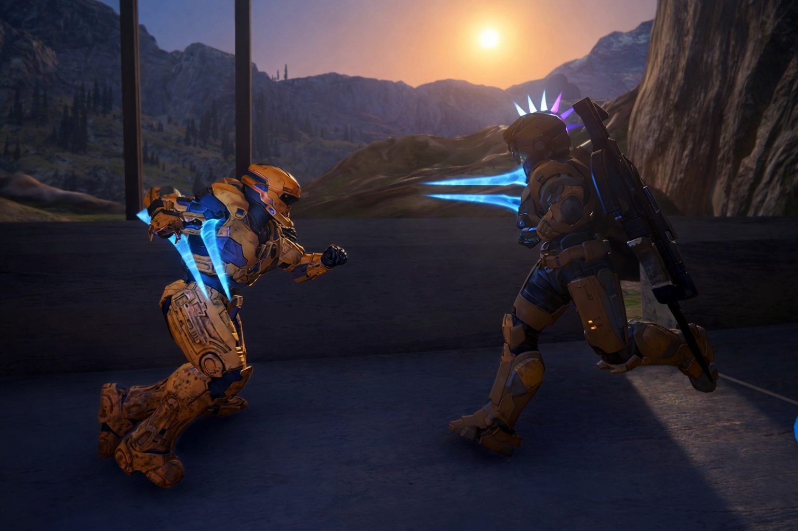
Con una lunga scivolata, Colt, riesce a piazzare la bomba nelle (prime) mura di
Bastione. Copter rimane di stucco ma si ricorda “vabbè fin li ce l'hanno fatta
tutti”. L’assalto continua. In meno di pochi secondi, viene fatta esplodere la porta
principale. Karmic, impossibilitato a scappare da questo assalto per ragioni ignote,
calcola il danno economico per Bastione e se ne rammarica. Bastione si rifugia nella
sala da ballo “chi entra gli piace il cazzo!!”. Sciabola si fermano un secondo,
guardano Ifrid, Ifrid li guarda ed esclama “tipica provocazione delle Valli, non
ha effetto su di me”. L’assalto continua. Noble trova degli enormi cubi che potrebbero
fare da scudo, non fa in tempo a finire la frase che una fucilata spazza via lui e questo
enorme cubo. Ai lati dell'ultima porta che divide l’esercito di Sciabola da quello di Bastione,
ci sono Stokes e Ifrid che si guardano “Dai dai dietro di noi!!”. Karmic viene
trasportato fra i ranghi “ragazzi ci facciamo male poi vi devo curare tutti gnamo”.
I vecchi ricordi di una LAN epica lanciano il morale alle stelle. Un ultimo assalto,
un'ultima carica. “Al mio 3” esclama Tigrozzo. “Uno…..Due…..TRE!!!”. L’esercito di
Sciabola irrompe nella sala. Bastione si sparpaglia, spara dappertutto “oh merda
oh merda oh merda” Sootz imbraccia una mitragliatrice e spara sia ai Bastione sia
agli Sciabola “non mi fido più di nessunoooooo”. Un grande polverone si alza,
Bastione ce l’ha fatta. Almeno per ora.
With a long slide, Colt manages to plant the bomb in Bastione's (outer) walls. Copter is stunned, then remembers: "fine, everyone's got that far before". The assault continues. Within seconds the main gate is blown open. Karmic, unable to escape this assault for reasons unknown, calculates the financial damage to Bastione and feels sorry about it. Bastione takes refuge in the ballroom: "anyone who comes in likes cock!!". Sciabola stop for a second and look at Ifrid; Ifrid looks back and declares "typical Valley provocation, it has no effect on me". The assault continues. Noble finds some enormous cubes that might serve as shields; he doesn't get to finish the sentence before a shotgun blast sweeps away both him and the enormous cube. On either side of the last door separating the Sciabola army from Bastione's stand Stokes and Ifrid, looking at each other: "go on, go on, we're right behind you!!". Karmic is carried through the ranks: "lads, we'll get hurt and then I'll have to patch all of you up, come on". Old memories of an epic LAN send morale through the roof. One last assault, one last charge. "On my three" Tigrozzo calls. "One..... two..... THREE!!!". The Sciabola army bursts into the hall. Bastione scatters, firing everywhere, "oh shit oh shit oh shit"; Sootz shoulders a machine gun and shoots at Bastione and Sciabola alike, "I don't trust anyone any moooore". A great cloud of dust rises. Bastione has held. For now, at least.
Così come i Bastione, gli Sciabola aggirano la fortezza e si ritrovano in un campo
aperto, secondo luogo di battaglia di Bastione. Luogo Chiamato Infinity CE, in memoria
di Halo CE, contenente tutti i veicoli più devastanti del multiverso. Karmic
è quasi arrivato allo stremo delle forze nella completa confusione di un
attacco a Bastione che non ha capito, guarda Ifrid che risponde sicuro “non si
preoccupi signore ce la faremo” “ma a fare cosa ifrid???”. Sciabola inizia l’avanzata
nella pianura guidando gran parte di veicoli aerei e da terra. Una avanzata solida
che trova Bastione in ritirata. La pianura è lunga e richiede molta pazienza
di movimento. Pazienza che Sciabola non trova. Ifrid viene tirato fuori come un pollo
dallo Scorpion, poi gli avvoltoi Glimpse e Puffo bruciano la poca pazienza rimasta a
Sciabola distruggendo uno dopo l’altro i veicoli che si avvicinano all’esercito Bastione.
Bastione prende il sopravvento terrestre e mette in fuga Sciabola. Finita così?
Just like Bastione, Sciabola go round the fortress and find themselves in an open field, Bastione's second battleground. A place called Infinity CE, in memory of Halo CE, holding all the most devastating vehicles in the multiverse. Karmic is nearly at the end of his strength, completely bewildered by an attack on Bastione he never understood, and looks at Ifrid, who answers confidently "don't worry sir, we'll manage it". "Manage what, Ifrid???". Sciabola begins its advance across the plain, driving most of the ground and air vehicles. A solid advance that puts Bastione in retreat. The plain is long and demands a great deal of patience in movement. Patience Sciabola does not find. Ifrid is plucked out like a chicken by a Scorpion, then the vultures Glimpse and Puffo burn through what patience Sciabola has left, destroying one after another every vehicle that comes near the Bastione army. Bastione takes control of the ground and puts Sciabola to flight. Is that the end of it?
Karmic è stremato, confuso. Prende Ifrid per il collo “ma perchè
li stiamo attaccando???” Ifrid mezzo strozzato risponde “Penalità per
Copter” “Eh?” Karmic lascia il collo di Ifrid. “Signore, ho rubato io il
trofeo perchè Copter non se lo merita. Sebbene nel lontano 2023 ha
vinto il torneo dei videogiochi con il mio videogioco preferito, la sua
persona mi infastidisce troppo. Quindi ho rubato quel trofeo per fargli
un torto” (e quindi scatenando una Guerra). Karmic rimane in silenzio.
Sta per esplodere di rabbia. Una Guerra che è stata creata senza
la sua volontà, mette la Gilda Sciabola e le sue finanze in grave
pericolo nel mezzo di Malthor. Si narra che la rabbia di Karmic arrivò
a tal punto che il suo cervello fece un reset di sentimenti. Quindi la sua
faccia diventò di marmo, tirò fuori un piccolo trolley da viaggio,
mise dentro tutte le armi che aveva, guardò Ifrid “Io e te ci vediamo a
Bucinor”, si girò e se ne andò.
Karmic is exhausted, bewildered. He grabs Ifrid by the throat: "but why are we attacking them???". Half-strangled, Ifrid answers "a penalty for Copter". "Eh?". Karmic lets go of his throat. "Sir, I stole the trophy, because Copter doesn't deserve it. Even though back in 2023 he won the videogame tournament with my favourite game, the man himself annoys me far too much. So I stole that trophy to spite him" (and in doing so started a War). Karmic falls silent. He is about to explode with rage. A War started without his consent, putting the Sciabola Guild and its finances in serious danger in the middle of Malthor. It is said Karmic's anger reached the point where his brain performed a factory reset of feelings. His face turned to marble, he pulled out a small wheeled suitcase, put in every weapon he had, looked at Ifrid - "you and I will meet again at Bucinor" - turned and walked away.
Ifrid “No aspetta non abbiamo finito!!”. Karmic si allontana agli occhi dell’esercito di
Sciabola che gira poi lo sguardo verso Ifrid. “Allora ragazzi si è vero l’ho tirata
su io questa Guerra”. Molti abbandonano le armi, altri rimangono “vabbè oramai siamo
a metà, soprattutto a quest’ora un Uber costa uno stonfo”. Quindi? Quindi...
“chiederemo uno scontro di soli mercenari”. A quel punto, altri mercenari lasciano il campo di battaglia.
Gigatzu e Svezio, la loro prima Guerra (una forse delle più complesse e dure del campionato
fino ad ora) si aprono una birra e fumano un cicchino “vabbè ragazzi fate come volete ci
capiamo il giusto”. Bastione si avvicina. Copter si guarda intorno e non vede Karmic
“dov’è?” “È in bagno coglione, prendo io le redini di Sciabola, porta in
campo i tuoi migliori mercenari sennò non ce ne andremo e in molti moriranno -
cioè prenderanno il cazzo in faccia”. Copter accetta la sfida a patto che si
tolgano dalle palle abbandonando Malthor che l’indomani arrivano le scuole elementari
per visitare la sala dei trofei.
Ifrid: "no, wait, we're not finished!!". Karmic walks off in full view of the Sciabola army, which then turns to look at Ifrid. "Right lads, yes, it's true, I'm the one who started this War". Many drop their weapons; others stay: "well, we're halfway through now, and at this hour an Uber costs a fortune". So? So... "we'll ask for a mercenaries-only fight". At which point more mercenaries leave the battlefield. Gigatzu and Svezio - their first War, and possibly one of the hardest and most complicated of the championship so far - open a beer and roll a smoke: "whatever lads, do as you like, we only half follow this anyway". Bastione approaches. Copter looks around and can't see Karmic. "Where is he?". "He's in the toilet, idiot. I'm taking the reins of Sciabola. Put your best mercenaries on the field or we won't leave, and a lot of people will die - by which I mean take one in the face". Copter accepts the challenge on condition that they clear off and leave Malthor, because tomorrow the primary school is coming to visit the trophy room.
Baudo alza le braccia al cielo e crea una arena di roccia fluttuante capovolta. La mappa
Disorientation. La gravità si ribalta e i mercenari di Sciabola e Bastione
si alzano in ciele finendo nel campo di battaglia. Gigatzu vede la sua birra cadere al suolo ancora
mezza piena: ha così inizio la sua rulla di madonne “ecco ragazzi così no però”.
Baudo raises his arms to the sky and creates an arena of floating, upended rock. The Disorientation map. Gravity flips and the mercenaries of Sciabola and Bastione are lifted into the air and dropped onto the battlefield. Gigatzu watches his beer fall to the ground still half full: thus begins his rolling stream of blasphemy, "right lads, this really isn't on".
La partita inizia, pure Svezio è incazzato che non ha potuto finire la birra, e trova
motivo di battaglia. Nella mappa c’è un orologio che segna le 23:01. Clavuss lo
guarda e si interrompe “Gnamo giochiamo che si fa….” è già tardi. A questo
punto non ci vede più dalla rabbia: indemoniato. La Guerra ha sforato di un minuto
le 23:00, un peccato imperdonabile. Prende il primo fucile d’assalto e crivella i mercenari
di Bastione riducendoli in ciottoli. Ifrid ha preso la partita seriamente e comincia a trucidare
il nemico senza pietà. Probabilmente ha cambiato gli FPS nello schermo, decisamente azioni
da Ufrid. Glimpse usa la sua tecnica peggiore: scompare per 5 minuti dei 15 con la sua
invisibilità e martella il nemico alle spalle. Solo Tigrozzo ad un certo punto usa
tutta la sua forza e colpisce un muro (casuale) della mappa – ignoti ancora i motivi,
spazzando via il muro e dietro Glimpse accucciato. In Bastione, Skate è alla massima
potenza ora che il sole è totalmente calato e prende forza dalla notte (boh non sapevo
che scrivere…). Per ultimo, vediamo Gigatzu, ma prima di vederlo, viene ascoltato da tutti.
La sua rulla di madonna riesce a sgretolare le mura della mappa e a riecheggiare in tutti gli
angoli. Punzecchia, si sposta, si accuccia, ma finisce sempre sotto il fuoco nemico e rimane
paralizzato “raga avevo bisogno di quel cicchino porcaccio il vostro…”.
The match begins. Svezio is annoyed too, having not been allowed to finish his beer, and finds his reason to fight. There is a clock on the map reading 23:01. Clavuss looks at it and stops mid-sentence, "come on, let's play, it's getting..." - it's already late. At which point he can no longer see straight for rage: possessed. The War has run one minute past 23:00, an unforgivable sin. He grabs the first assault rifle and riddles Bastione's mercenaries, reducing them to gravel. Ifrid has taken the match seriously and starts slaughtering the enemy without mercy. He has probably changed the FPS on his monitor - very much an Ufrid move. Glimpse uses his worst technique: he disappears for five of the fifteen minutes under cloak and hammers the enemy from behind. Only Tigrozzo, at one point, puts all his strength into hitting a (random) wall of the map - the reasons remain unknown - sweeping away the wall and, crouched behind it, Glimpse. In Bastione, Skate is at full power now the sun has completely set and he draws strength from the night (look, I didn't know what else to write...). Last of all we see Gigatzu - though before we see him, everyone hears him. His rolling blasphemy manages to crumble the map's walls and echo into every corner. He jabs, he moves, he crouches, but he always ends up under enemy fire and freezes: "lads, I needed that smoke, damn the lot of you...".
Una rimonta di Sciabola non basta per vincere. A una manciata di punti, Bastione ha la
meglio. Copter “basta, levatevi dalle palle ho altro da fare!”. La mappa si dissolve,
gli eserciti prendono direzioni opposte. Ma Ifrid ha un ultimo piano. Riprendere quel
cazzo di trofeo in qualsiasi modo necessario. Tira fuori dalla tasca danari ottenuti
nei mesi passati con il centro scommesse e promette una ricompensa a Noble, Colt e Swine
se prenderanno il trofeo. “Vai va bene, dai forza carichi” dice Noble. Colt e Swine “vabbè, i soldi schifo non ci fanno”.
A Sciabola comeback isn't enough to win. By a handful of points, Bastione takes it. Copter: "enough, clear off, I've got other things to do!". The map dissolves and the armies head in opposite directions. But Ifrid has one last plan. Get that bloody trophy back by any means necessary. He pulls from his pocket the money he made over the past months at the betting shop and promises a reward to Noble, Colt and Swine if they take the trophy. "Fine, all right, come on, let's go" says Noble. Colt and Swine: "well, money never hurt anyone".
No. #1
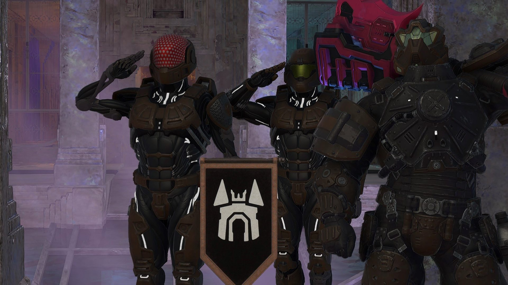
Ifrid aggira la fortezza di Bastione avvicinandosi alla sala trofei. Copter vede lui e quei
tre rimbambiti da lontano “basta ma icche fanno?”. Si gira verso Puffo e Drius “potete pensarci
voi”. “A gratis nulla mio ‘Bastone’ ”. Copter sfila dalla tasca una manciata di denaro e
getta in faccia a Drius e Puffo. Chiama pure Baudo che si unisce al trio per fermare la
banda bassotti Noble/Swine/Colt. Letteralmente guardie e ladri.
Ifrid goes round Bastione's fortress, closing in on the trophy room. Copter spots him and those three fools from a distance: "honestly, what are they up to?". He turns to Puffo and Drius: "can you two deal with this". "Nothing comes free, my 'Bastione'". Copter pulls a fistful of money from his pocket and throws it in Drius and Puffo's faces. He calls Baudo too, who joins the trio to stop the Noble/Swine/Colt gang. Cops and robbers, quite literally.
Alla sala dei trofei, Noble è bollente “dai dai si prende e si torna a Bucinor”.
Prende la rincorsa. Colt e Swine non fanno in tempo a fermarlo che una trappola viene attivata,
il suolo sotto Noble si apre e sparisce nel vuoto. “Eccoci” esclama Ifrid.
At the trophy room Noble is fired up: "come on, come on, grab it and back to Bucinor". He takes a run-up. Colt and Swine don't get the chance to stop him before a trap triggers, the floor under Noble opens and he vanishes into the void. "Here we go" says Ifrid.
No. #1
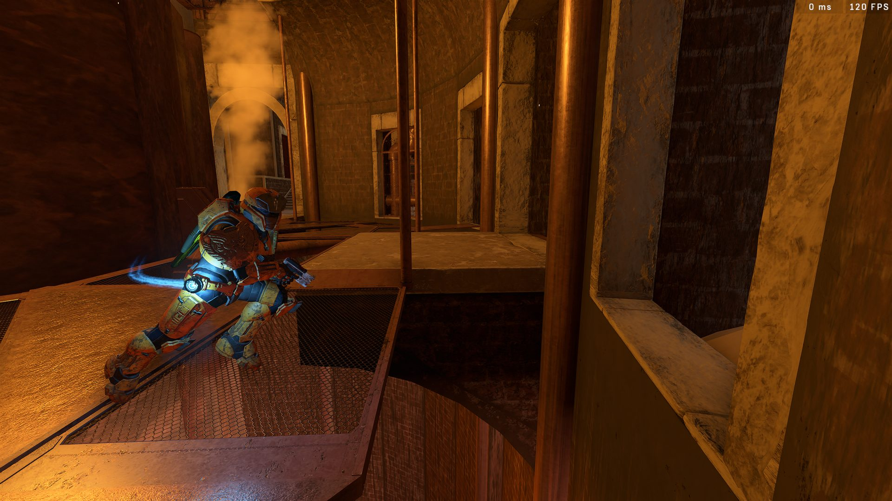
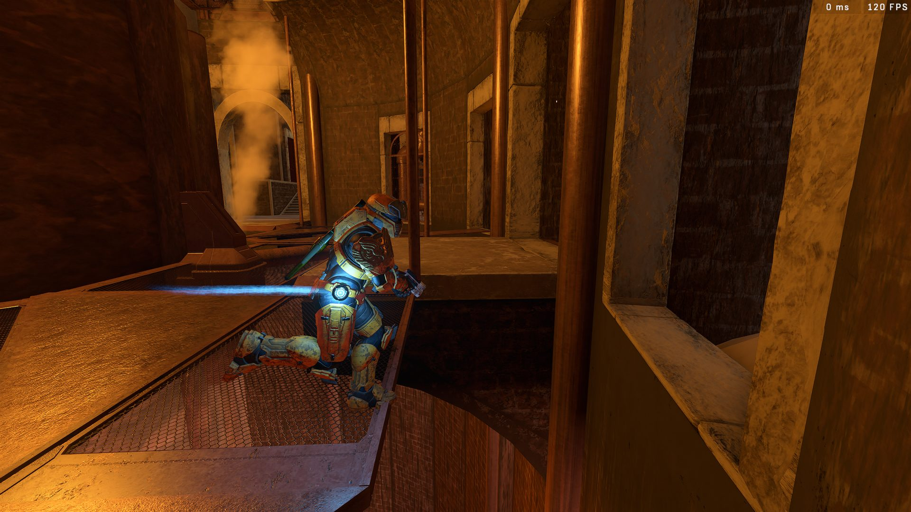
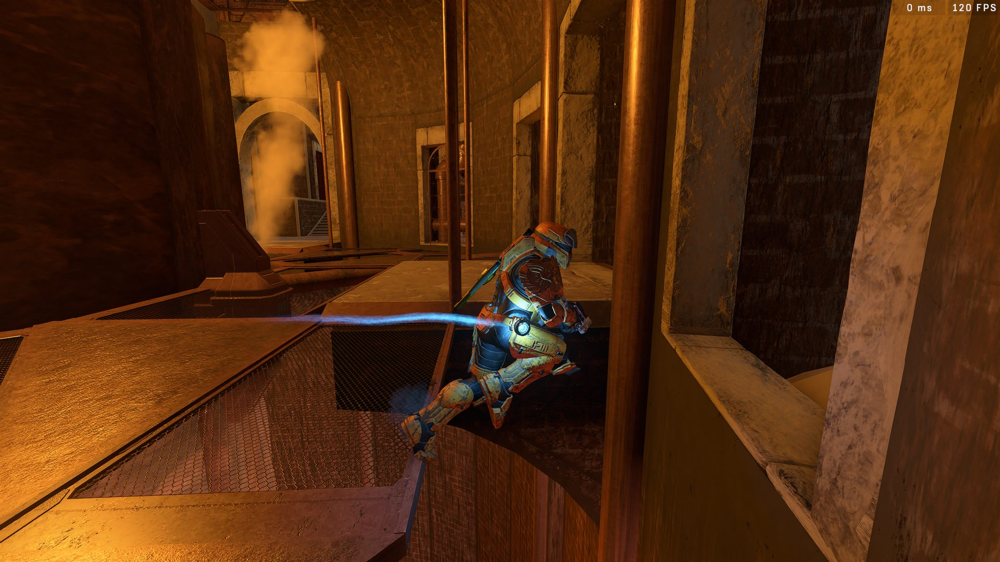
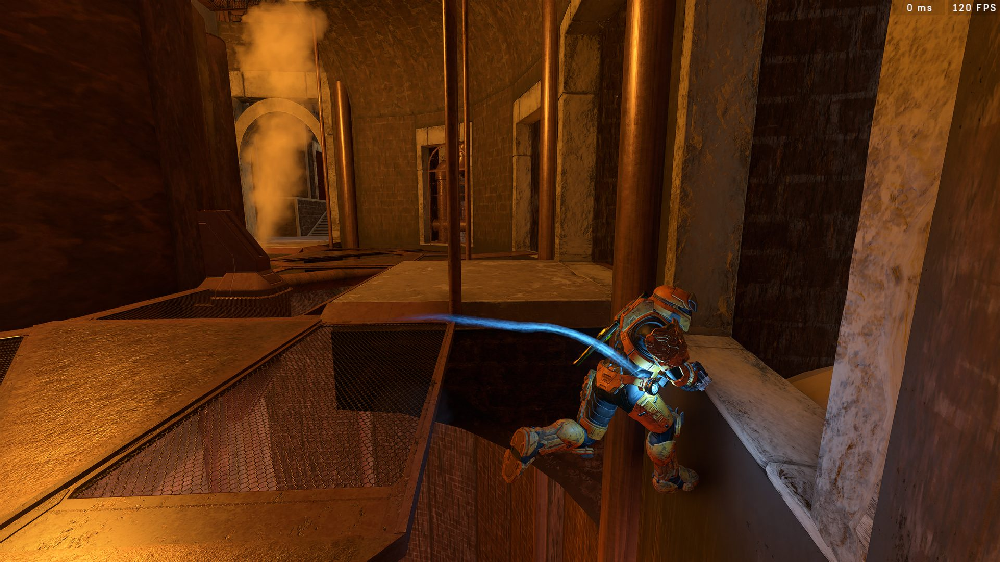
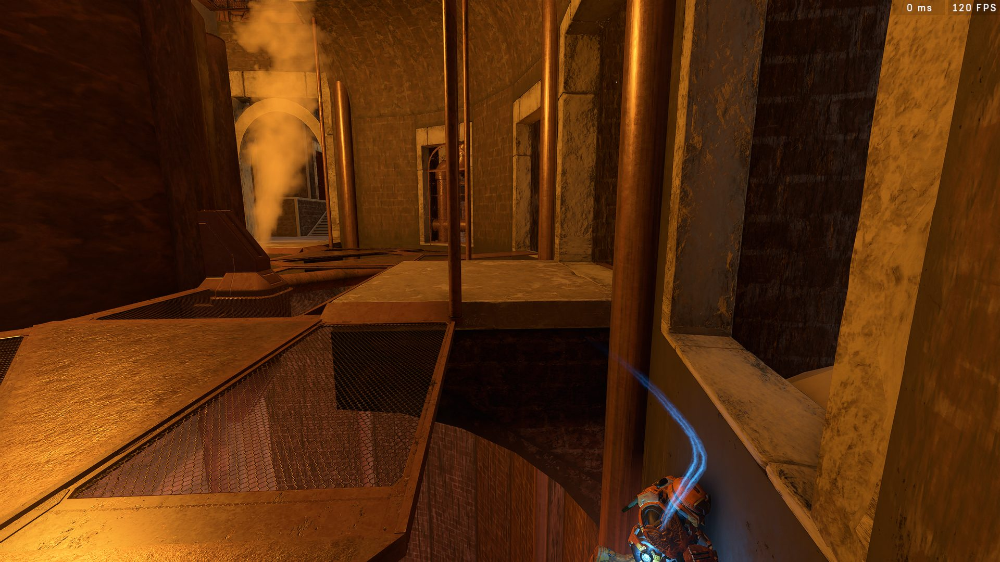
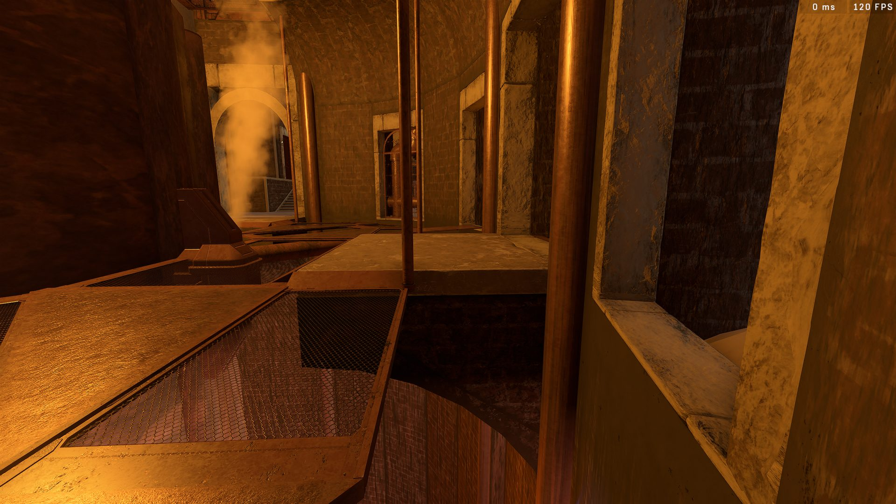
La partita ha inizio. I poliziotti inseguono i ladri che trovano qualsiasi scorciatoia
verticale e orizzontale. Ifrid ha pure fornito loro l’invisibilità, ma serve a poco quando
Colt si incastra in uno scalino e viene liquefatto dai proiettili nemici.
Noble torna in scena, trovando un passaggio sotterraneo, un passo, e finisce di nuovo in una altra trappola.
Una disfatta. “Eccomi ci sonooOOOOOOooooHhhhhhh” scompare di nuovo.
La partita è un 2 contro 3. Alla fine, Ifrid ‘si sda’,
“gnamo stacca basta siete incapaci”. La banda bassotti scappa in ritirata,
gli ultimi rimasti dell’esercito di Sciabola alle porte di Bastione.
The match begins. The cops chase the robbers, who find every shortcut going vertical and horizontal. Ifrid has even given them cloaking, though it's little use when Colt gets stuck on a step and is liquefied by enemy fire. Noble reappears, finds an underground passage, takes one step and falls straight into another trap. A rout. "Here I am, I'm heeeeeeere - aaaaghhhh" - gone again. The match becomes two against three. In the end Ifrid gives up: "come on, cut it, that's enough, you're hopeless". The gang beats a retreat, the last survivors of the Sciabola army at Bastione's gates.
Il giorno seguente, Copter accoglie le scuole elementari vantandosi di trofei conquistati
nel tempo. Mentre a Bucinor, al cospetto di Karmic, Ifrid prende una ripassata
“che cazzo fai sta Guerra dal nulla!!! Mi sono appena laureato!! ho appena finito
di pagare le bollette!!!” . Ifrid “Si ma Copter..” . “Si un cazzo!!”. La discussione
accesa viene interrotta da una figura che apre le porte della sala grande della dimora
di Sciabola. Karmic e Ifrid si girano di scatto. Riconoscono la figura alla soglia
della porta, e Karmic sbotta “Cosa c’è ancora?”. È Bibobio,
impegnato 72 su 24 nella sua nuova pizzeria in Agorà non ha ancora trovato il tempo di unirsi a questo evento.
Arrivato con qualche pizza appena fatta "Ho saputo della batosta AAAA...
dai scherzo son venuto a rincuorare gli animi con qualche pizza",
porta tranquillità nell'animo di Karmic che chiede mentre mangia.
"Non Potresti partecipare a questo dannato Campionato?? Giocare con noi qualche volta?"
"Si, Forse, un giorno".
The following day Copter welcomes the primary school, boasting about the trophies won over the years. Meanwhile at Bucinor, before Karmic, Ifrid gets a dressing-down: "what the hell are you doing starting a War out of nowhere!!! I've only just graduated!! I've only just finished paying the bills!!!". Ifrid: "yes, but Copter..". "Copter my arse!!". The heated argument is interrupted by a figure opening the doors of the great hall of Sciabola's residence. Karmic and Ifrid spin round. They recognise the figure in the doorway, and Karmic snaps "what is it now?". It's Bibobio, who - working 72 hours out of 24 at his new pizzeria in the Agora - has still not found time to join this event. He arrives with a few freshly made pizzas: "I heard about the hiding, aaaah... no, I'm joking, I came to cheer everyone up with some pizza". He brings some calm to Karmic, who asks between mouthfuls: "couldn't you take part in this damned Championship?? Play with us once in a while?". "Yes. Maybe. One day".
12 Gennaio 2026. Incontri.
L’ultima Guerra ha lasciato un silenzio tombale in Agorà.
Rammarico, frustazione e voglia di rivincita.
Tutto questo per una Guerra di una Side Quest...
immaginiamoci per una Guerra dalla Campagna Ufficiale!
12 January 2026. Encounters. The last War left a deathly silence over the Agora. Regret, frustration and a hunger for revenge. All of that for one Side Quest War... imagine what an Official Campaign War will bring!
Lontano, fra i monti di Lorath, precisamente sul monte MagnusPratum,
un escursionista impavido cerca di scalare la montagna.
Schiva trappole naturali di ogni genere: pozzanghere, stretti sentieri e alberi caduti sul percorso
(...ripensandoci non sono proprio trappole ma ognuno ha le sue sfide).
Alla velocità della luce, mettendoci meno di un rider di Deliveroo, schizza in cima alla vetta.
Arrivato in uno verde spiano, con la sua tuta mimetica aderente, si toglie gli occhiali sportivi stile steam punk.
È JoeMoo. Guarda il traguardo raggiunto, non tutti riescono ad arrivare così in alto e si sente soddisfatto.
Nella sua totale calma, si guarda intorno ma viene completamente spiazzato. C’è una altra persona all’orizzonte.
Far away, among the mountains of Lorath - on Mount MagnusPratum, to be precise - a fearless hiker is trying to climb to the top. He dodges natural traps of every kind: puddles, narrow paths and trees fallen across the route (... on reflection they aren't really traps, but everyone has their own challenges). At the speed of light, taking less time than a Deliveroo rider, he shoots up to the summit. Arriving on a green plateau in his skin-tight camouflage suit, he takes off his steampunk sports goggles. It's JoeMoo. He looks at what he has achieved - not everyone makes it this high - and feels satisfied. In complete calm he looks around, and is utterly thrown. There is another person on the horizon.
Questa persona guarda dall’alto l’Agora, decisamente arrivata prima di JoeMoo.
Ma come è possibile si domanda.
Questo posto è irraggiungibile da molti.
Soltanto grazie alle STMM è stato possibile raggiungerlo pensa fra se e se JoeMoo.
Dubbi e curiosità lo spingono ad avvicinarsi cauto alla figura sul ciglio del precipizio che contempla la valle.
“Heilà” , “Anche tu qui?”. Nessuna risposta. “Oh gnamo rispondi che problemi c’hai ha ha”.
JoeMoo si avvicina alla sinistra della figura avvolta in mantelli di pelle contro grandi nevicate.
“Oh tutto apposto?”. La figura si gira e JoeMoo fa un passo indietro.
“Oh” ci riprova ancora JoeMoo. “Ma come hai fatto a raggiungere questa vetta” continua
“vesti un nuovo modello STMM ? quelle gears non le ho mai viste.”
C’e un minuto di silenzio mentre JoeMoo osserva gli occhiali che coprono il volto del misterioso compagno esploratore.
Attrezzatura da montagna, si, ma sotto i mantelli ha una corazza da guerriero.
La figura si pronuncia: “Sapresti come ho fatto a raggiungere questa vetta senza
le STMM se solo partecipassi al Campionato di Halo Infinite” continua
“Un campionato che mette alla prova (la pazienza di) tutti” e ancora
“Io ho vinto quello che volevo. E ora mi domando cosa mi attende.”
JoeMoo prova a giustificarsi “No ma sto installando Finestra 12
cioè è crackato sia chiaro perchè non voglio spend...”
Mentre spiega una interminabile e inutile frase,
la figura mette una mano in tasca, poi allunga il braccio con il pugno chiuso a JoeMoo.
Ricarde il silenzio. Apre il pugno ed esclama “Tarallino?”
This person is looking down on the Agora, and has clearly arrived before JoeMoo. But how is that possible, he wonders. This place is out of reach for most. Only thanks to the STMM was it possible to get here, JoeMoo thinks to himself. Doubt and curiosity push him to approach the figure cautiously, standing on the edge of the precipice contemplating the valley. "Hey there", "you here too?". No answer. "Oh come on, answer, what's your problem, ha ha". JoeMoo moves up to the left of the figure, wrapped in leather cloaks against heavy snowfall. "Hey, everything all right?". The figure turns and JoeMoo takes a step back. "Oh", he tries again. "But how did you get up to this summit", he goes on, "are you wearing a new STMM model? I've never seen that gear." A minute of silence passes while JoeMoo studies the goggles covering his mysterious fellow explorer's face. Mountain equipment, yes, but under the cloaks there is a warrior's armour. The figure speaks: "you would know how I got to this summit without the STMM if only you took part in the Halo Infinite Championship", and continues, "a championship that tests everyone (and everyone's patience)", and again, "I have won what I wanted. And now I wonder what awaits me." JoeMoo tries to justify himself: "no, look, I'm installing Windows 12, cracked obviously, because I don't want to spen...". While he explains an endless and pointless sentence, the figure puts a hand in a pocket, then holds out a closed fist to JoeMoo. Silence falls again. The fist opens: "biscuit?"
JoeMoo guarda il tarallo pugliese che poggia sul guanto di pelle dello sconosciuto
...ed è ancora più confuso di prima.
“Grazie”, prende il tarallo e lo sgranocchia.
La figura si gira e si incammina lasciandosi alle spalle il precipizio e il confuso JoeMoo.
JoeMoo si gira verso la valle “certo che se ne trova di gente strana in montagna eh”
Poi lo sguardo cade a terra verso qualcosa che luccica.
Evidente sia stato lasciato cadere a terra dalla figura misteriosa.
JoeMoo si abbassa spostando qualche filo d’erba.
È una medaglia d’oro.
Sulla medaglia c’è inciso: “Tigrozzo Campione”.
JoeMoo looks at the Apulian tarallo resting on the stranger's leather glove... and is more confused than before. "Thanks", he takes it and munches on it. The figure turns and walks off, leaving behind the precipice and a bewildered JoeMoo. JoeMoo turns towards the valley: "you really do meet some odd people up a mountain". Then his gaze drops to the ground, to something glinting. Clearly dropped there by the mysterious figure. JoeMoo crouches and parts a few blades of grass. It is a gold medal. Engraved on it: "Tigrozzo, Champion".
13-15 Gennaio 2026. Preparativi e Nuovi Delitti.
C’è chi si allena, chi contempla ma anche....chi ha lavori in corso.
A Maltorh si parla di ristrutturazione. La campagna di reclutamento è scappata di mano
e mercenari che abitano lontano vogliono fare uno stage a Bastione ma non hanno posti auto.
“Cioè io ho guidato per 2h e la devo lasciare per strada? Ma vaffanculo.”
Flying WC cerca di calmare gli animi “signori della guerra” (grande leccaculo) “forza suvvia state buoni,
abbiamo già pensato a tutto, faremo un parcheggio per tutte le vostre auto”.
I lavori sono costati una fortuna e non ha aiutato il fatto che c’è stato un rialzo delle temperature a Maltorh
provocando la combustione spontanea di asfalto (evento raro inspiegabile):
i lavori sono ricominciati da capo più volte.
WC è in grande ansia per gestire una mole così grande di lavoro
si guarda intorno ma lui non c’è. Copter non si vede da giorni. Dove minchia è finito?
13-15 January 2026. Preparations and New Killings. Some are training, some are contemplating, and some... have building work going on. At Malthor there is talk of renovation. The recruitment campaign has got out of hand and mercenaries who live far away want to do a placement at Bastione but have nowhere to park. "So I drive for two hours and then I have to leave it in the street? Sod that." Flying WC tries to calm the mood: "my lords of war" (a champion bootlicker) "come on now, be good, we've thought of everything, we'll build a car park for all your cars". The work cost a fortune, and it didn't help that a rise in temperature at Malthor caused the spontaneous combustion of asphalt (a rare and inexplicable event): the work had to be restarted from scratch several times. WC is deeply anxious about managing such a volume of work; he looks around, but Copter isn't there. Copter hasn't been seen for days. Where the hell has he got to?
In Agorà si fanno acquisti per le prossime Guerre.
Arsenali devastanti, armature spaziali, paperelle di metallo. Fra la folla che gira indaffarata,
SoCrem ha il carrello pieno di armi e pensa “finalmente sono pronto”.
Infatti, SoCrem pensa e non parla , perchè è muto.
Quando l’Agorà è invasa dal baccano in procinto di Guerre,
lui arriva sempre in ritardo e guarda passare molti eventi davanti ai suoi occhi.
Questo non lo giustifica dalla capacità di scrivere lettere (rispondere a messaggi)
agli organizzatori del Campionato, che non fa.
E questo fatto, purtroppo, non è passato in osservano,
facendo nascere alcune inasprità.
Svolta in una strada secondaria per raggiungere il suo ultimo negozio.
A qualche passo dallo sbucare in una strada principale, sente una strana presenza alle sue spalle.
Si ferma, e tremolante di paura, si gira lentamente.
Guarda una figura coperta da fiamme correre verso di lui.
SoCrem apre la bocca cadendo in pieno panico.
Ma, dato che è muto, alcun rumore “fu emesso”.
Il carrello pieno di armi cade a terra. Curiosità (e avidità)
spingono molti mercenari ad avvicinarsi al carrello e vedono il corpo di
SoCrem senza vita. Sopra di lui un bigliettino: “Dr.”
In the Agora people are shopping for the coming Wars. Devastating arsenals, space armour, metal rubber ducks. Among the busy crowd, SoCrem has a trolley full of weapons and thinks "at last I'm ready". Indeed, SoCrem thinks rather than speaks, because he is mute. When the Agora is overrun with the din of imminent Wars he always arrives late and watches a great many events pass in front of his eyes. That doesn't excuse his capacity to write letters (answer messages) to the Championship organisers, which he does not do. And that fact, unfortunately, has not gone unnoticed, and has bred a certain bad feeling. He turns down a side street to reach his last shop. A few steps from coming out onto a main road, he senses a strange presence behind him. He stops and, trembling with fear, turns slowly. He sees a figure wreathed in flame running towards him. SoCrem opens his mouth, falling into full panic. But, being mute, no sound "was emitted". The trolley full of weapons falls to the ground. Curiosity (and greed) draw many mercenaries towards the trolley, and they find SoCrem's lifeless body. On top of him, a note: "Dr."
Altrove, nella sede di “Cazzo che Schippa”, la rivista che prende per il culo leaders e mercenari,
arriva un prodigioso stagista che bussa alla porta e viene assunto per 6 mesi. È Pino’s Carrot.
Non deve nemmeno pensare troppo al primo articolo. Per conquistare l’amore
della folla, attacca la faccia di Colt ad una sagoma di maiale e la intitola “Oink”.
Pino, dorme soddisfatto. Colt raccoglie questo articolo da un chiosco e pensa “Patetico”.
Lascia cadere a terra quello straccio di rivista perchè ha altro da fare.
Si rimette apposto il distintivo e si gira verso la pattuglia di polizia Cobra.
Dovete sapere che Colt fa tanti lavori,
molti come volontario (alcuni a caso, non sa quello che fa),
tutto al fine di riportare Cobra agli albori gloriosi, anche se ad oggi tutto abbastanza invano.
Da stand up comedian, a caldaista e ora si è spacciato investigatigatore della polizia di Agorà.
Elsewhere, at the offices of "What a Load of Rubbish" - the magazine that takes the mickey out of leaders and mercenaries - a prodigious intern knocks at the door and is hired for six months. It's Pino's Carrot. He barely has to think about the first article. To win the crowd's love he pastes Colt's face onto the outline of a pig and titles it "Oink". Pino sleeps soundly. Colt picks the article up at a kiosk and thinks "pathetic". He drops that rag of a magazine on the ground because he has other things to do. He straightens his badge and turns to face the Cobra police patrol. You should know that Colt does a great many jobs, many of them voluntary (some at random, he doesn't know what he's doing), all in the name of returning Cobra to its glory days - though to date largely in vain. From stand-up comedian to boiler engineer, and now he has passed himself off as a detective with the Agora police.
Tutte queste morti con la firma “Dr.” non sono passate inosservate.
Certo le persone scomparse mancheranno a pochi,
ma “giustizia deve essere fatta” Colt parla alla sua pattuglia improvvisata di mercenari di Cobra.
“Ma non bisognava andare in Guerra?”.
“La Guerra oggi è contro la criminalità organizzata in Agorà” risponde Colt.
“Che inculata” i mercenari di Cobra seguono l’investigatore Colt che raggiunge la strada dove è
accaduto l’ultimo omicidio.
All these deaths signed "Dr." have not gone unnoticed. Granted, few will miss the people who disappeared, but "justice must be done", Colt tells his improvised patrol of Cobra mercenaries. "Weren't we supposed to be going to War?". "Today the War is against organised crime in the Agora", Colt replies. "What a swizz" - the Cobra mercenaries follow detective Colt to the street where the latest murder took place.
19-22 Gennaio 2026. L'Intruso.
PuffoKiller compra 30 secondi di spot pubblicitario tagliando a metà
la trasmissione NobleNews e dichiara un impatto della Gilda Pericolo a Sangiarno.
La trasmissione di NobleNews riprende e il presentatore NobleBrassMan rimane
con gli occhi sgranati in silenzio davanti agli spettatori.
“Beh...questo era inaspettato”. “Lanciamo di nuovo la pubblicità”.
19-22 January 2026. The Intruder. PuffoKiller buys thirty seconds of advertising, cutting the NobleNews broadcast in half, and declares an assault by the Pericolo Guild on Sangiarno. The NobleNews broadcast resumes and presenter NobleBrassMan sits wide-eyed and silent in front of the viewers. "Well... that was unexpected". "Let's go back to the adverts".
Dalla fortezza di Montarcos, PuffoKiller spegne lo schermo con il quale ha trasmesso la sua dichiarazione di Guerra.
Si gira verso SandyoKhan che è solito a fare la sua attività preferita:
(1) installare Halo Infinite,
(2) giocare,
(3) bestemmiare tutti i santi,
(4) disinstallare Halo Infinite,
(1) installare Halo Infinite e cosi via....
Puffo guarda Khan e domanda “Senti Bomber ma tu ci sarai?” Khan risponde
“Beh dipende se la Guerra cade sul (2)”. Una roulette russa che Puffo è disposto ad accettare.
From the fortress of Montarcos, PuffoKiller switches off the screen he used to broadcast his declaration of War. He turns to SandyoKhan, who is busy with his favourite activity: (1) install Halo Infinite, (2) play, (3) curse every saint in heaven, (4) uninstall Halo Infinite, (1) install Halo Infinite, and so on... Puffo looks at Khan and asks "listen, Bomber, will you be there?". Khan answers "well, it depends whether the War lands on step (2)". A game of Russian roulette Puffo is prepared to accept.
Noble esce dagli studio in Agorà e corre a Sangiarno radunando i suoi mercenari.
Un attacco di forte dislessia prende tutti alla sprovvista.
“Allora PuffoScroll ci attacca dolcezze. Bisogna preparare ad andarci al peggio. Aprite gli ombrelloni.
Comprate qualche baguette al forno. Ci saranno panini per tutti alle 23 e 45. Non bisogna farci prendere alla
sprovvista dalla faretra di salame avariato.”
Noble leaves the studios in the Agora and races to Sangiarno, gathering his mercenaries. A severe attack of dyslexia catches everyone off guard. "Right, PuffoScroll is attacking us, sweethearts. We need to prepare to go there at worst. Open the parasols. Buy a few baguettes from the bakery. There'll be sandwiches for everyone at 23:45. We mustn't be caught off guard by the quiver of off salami."
I mercenari di Valore sono letteralmente spiazzati.
Menomale che qualcuno ha un diploma in psicologia, e altri medicina
prima di diventare mercenari di guerra e aiutano Noble a spiegarsi meglio.
Alla fine, mettono Noble davanti a giocattoli di asilo nido e
gli chiedono di spiegarlo non a parole sue ma con gli oggetti.
Questo piano funziona.
PuffoKiller e Pericolo vogliono attaccare Valore e NobleBrassMan.
Ma come?
I mercenari pensano al posto di Noble.
“Dovremmo intrufolarci di nascosto a Montarcos per capire le vere intenzioni” pensano.
Poi si girano verso Noble “mandiamo il dislessico” .
“Con un certificato 104 sicuramente riuscirà a passare le guardie”.
Noble annuisce senza aver capito nulla “si, mandiamoci la nonna”.
“È perfetto” concludono i mercenari.
Un gruppo di mercenari sotto copertura accompagna Noble a Montarcos.
Valore's mercenaries are quite literally lost. Thankfully one of them has a psychology degree and others medicine, from before they became war mercenaries, and they help Noble explain himself better. In the end they sit Noble down in front of nursery-school toys and ask him to explain it not in his own words but with the objects. This plan works. PuffoKiller and Pericolo want to attack Valore and NobleBrassMan. But how? The mercenaries do Noble's thinking for him. "We should sneak into Montarcos to work out their real intentions", they reason. Then they turn to Noble: "let's send the dyslexic". "With a disability certificate he'll definitely get past the guards". Noble nods, having understood nothing: "yes, let's send granny". "Perfect", the mercenaries conclude. A group of undercover mercenaries escorts Noble to Montarcos.
Il grande mercato circonda la fortezza industriale di PuffoKiller.
Una struttura inespugnabile, indecifrabile...cosi complicata che trovi
la porta di ingresso solo su alcune istruzioni sparse nei commenti di Google Maps.
“No raga l’ho trovata ma l’architetto si è fumato troppe canne per fare sto posto”
scrivono in molti. Noble viene scaricato all’ingresso travestito da mercenario di pericolo:
letteralmente cambiando la skin da giallo a rosso, irriconoscibile.
Entra presentando il documento della 104 e i suoi mercenari lo attendono nel mercato di Montarcos.
The great market surrounds PuffoKiller's industrial fortress. An impregnable, indecipherable structure... so complicated that you only find the front door thanks to instructions scattered through the Google Maps reviews. "Lads, I found it, but the architect smoked far too much weed designing this place", many of them write. Noble is dropped at the entrance disguised as a Pericolo mercenary: literally changing his skin from yellow to red, unrecognisable. He goes in presenting his disability paperwork while his mercenaries wait for him in the Montarcos market.
Alcuni si sono portati dietro un iPad sapendo che sarebbero stati li a lungo date le capacità
scarse di orientamento di Noble e si sintonizzano su canali di cartoni animati.
Ridono guardando una puntana di Mostri Tascabili, ma c’è una interruzione insolita. “Nooo”.
“Minchia basta queste interruzioni, che è??? ancora Puffo??”
Lo spot inizia mostrando una serie di Mostri Tascabili.
I mercenari si incollano allo schermo dell’iPad “Che è sta storia!!”
Ogni mostro è stato rinominato con un luogo a loro conosciuto.
“Oh ma li è dove si compra il pane!!”,
“Li ci ho comprato i miei primi pantaloni!!” Lo spot va avanti e poi l’annuncio:
Some of them have brought an iPad, knowing they would be there a long time given Noble's poor sense of direction, and tune in to cartoon channels. They are laughing at an episode of Pocket Monsters when there is an unusual interruption. "Nooo". "Bloody hell, enough with these interruptions, what is it??? Puffo again??". The advert opens showing a series of Pocket Monsters. The mercenaries glue themselves to the iPad screen: "what is this about!!". Every monster has been renamed after a place they know. "Oh, that's where you buy bread!!", "that's where I bought my first pair of trousers!!". The advert runs on, and then the announcement:
Leader Copter e Mercenario Glimpse su Strappo con i Mostri Tascabili! 30 Gennaio alle ore 22:00, sintonizzatevi!!Leader Copter and Mercenary Glimpse on Strappo with Pocket Monsters! 30 January at 22:00, tune in!!
I Mercenari esultano di gioia per la presenza del loro compare Glimpse “son sicuro che quella canaglia scommette soldi pure sui Mostri”.
Altrove, anche WC sta guardando la trasmissione nella dimora di Bastione mentre il parcheggio di Maltorh ha ripreso a bruciare da solo.
WC infuriato esclama “ecco dove era finito quel figlio di ...”
The mercenaries cheer at the sight of their mate Glimpse: "I bet that scoundrel puts money on the Monsters too". Elsewhere, WC is also watching the broadcast at Bastione's residence while the Malthor car park has started burning by itself again. Furious, WC exclaims "so that's where that son of a... got to".
Dentro la fortezza di Pericolo, Noble, avendo seguito varie indicazioni (a caso), raggiunge la buia e tetra sala di controllo di PuffoKiller.
Una lunga tastiera prende Noble impreparato per inserire la password e scoprire i segreti di Pericolo.
Ma “ahah facile” . (*typing) C-o-l-t-M-e-r-d-i, ACCESS GRANTED.
Noble entra nel sistema e seleziona la cartella di interesse contro di lui e la sua Gilda.
Quello che lesse dopo fu puro terrore. Tutte le sfide più difficili erano state scelte da Pericolo.
Fuoco amico, niente armi sulla mappa, una sola granata a disposizione e
l’arsenale di Pericolo. Il temuto Bandit EVO e il Vendicator: morte a distanza + sciogliere il nemico con il piombo da vicino.
Un incubo. E ancora, nessun veicolo, niente radar. Noble è in preda alla pazzia
a fronte di una Guerra troppo difficile da vincere. Guarda infine lo schermo che mostra un conto alla rovescia.
Si deve affrettare, non c’è più tempo.
Si volta e corre verso l’uscita per unirsi ai mercenari ancora sparsi e nascosti nel mercato di Bucinor.
Inside Pericolo's fortress Noble, having followed various (random) signs, reaches PuffoKiller's dark and gloomy control room. A long keyboard catches Noble unprepared: he must enter the password and uncover Pericolo's secrets. But "aha, easy". (*typing) C-o-l-t-I-s-C-r-a-p, ACCESS GRANTED. Noble gets into the system and selects the folder concerning him and his Guild. What he read next was pure terror. Every hardest challenge had been chosen by Pericolo. Friendly fire, no weapons on the map, a single grenade each, and Pericolo's arsenal. The dreaded Bandit EVO and the Vendicator: death at range plus melting the enemy with lead up close. A nightmare. And on top of that, no vehicles and no radar. Noble is seized by madness at the thought of a War far too hard to win. Finally he looks at the screen showing a countdown. He must hurry, there is no time left. He turns and runs for the exit to rejoin the mercenaries still scattered and hidden in the Bucinor market.
Nel labirinto della fortezza di Pericolo, Noble cerca disperatamente una uscita, incapace di orientarsi per uscirne.
Apre una ennesima porta, e scatta l’allarme! Hanno capito che un intruso è entrato nella Gilda Pericolo.
L’intero mercato si ferma e volge lo sguardo verso la fortezza dalla quale esce un rumore assordante. E poi, il caos:
tutti corrono ai ripari. Allarme scattato altre volte e l’esercito di Pericolo ha cominciato a fare strage casuale sulla folla.
Un ottico non si è ancora unito alla Gilda Pericolo.
“Via Viaaa” bancarelle capovolte, folla corre sopra altra folla. I mercenari di Valore si guardano intorno e cercano di tornare
all'entrata dove avevano lasciato Noble. Accorrono vicino alla fortezza e poi, un'esplosione gigante li atterra al suolo.
Si guardano in alto: un pezzo della fortezza di metallo industriale è squarciato e in fiamme.
Da quelle stesse fiamme, un corpo cade sulla folla. È Noble.
I mercenari di Valore si ricompattano velocemente “Gnamo gnamooo andiamo a prenderlo” ,
e ancora “Minchia oh.. Pericolo ha preso troppo seriamente sto gioco di merda su Xbox eh”.
Fra le macerie in fiamme, il corpo di Noble giace a terra smostrato e mezzo incenerito.
Preso in braccio, i mercenari di Valore rubano il primo mezzo e
sfrecciano fra il mercato di Bucinor verso Sangiarno.
“..ho fatto scattare una trappola, è saltato tutto” .
“Non mi sento più la mano destra..” Noble sviene.
I mercenari coprono Noble di stracci per bloccare perdite di sangue mentre guardano
con cupi sguardi il corpo mutilato. Noble ha perso la mano destra.
Alcuni mercenari si voltano verso la fortezza di Pericolo,
e guardano dalla terrazza Puffo soddisfatto
(mentre ricama a punto maglia): “Prova a giocare così coglione,
la prossima volta vedi di farti i cazzi tuoi”.
Poi si volta verso la sala principale: “Tode...volevo dire...Khan a che punto sei?” . “fisso sul (3)”.
In the maze of Pericolo's fortress Noble searches desperately for a way out, unable to find his bearings. He opens yet another door and the alarm goes off! They know an intruder has entered the Pericolo Guild. The whole market stops and turns to look at the fortress, from which a deafening noise is coming. And then, chaos: everyone runs for cover. The alarm has gone off before, and Pericolo's army has begun slaughtering the crowd at random. One optician has yet to join the Pericolo Guild. "Go, gooo" - stalls overturned, crowd trampling crowd. Valore's mercenaries look around and try to get back to the entrance where they left Noble. They rush towards the fortress and then a huge explosion knocks them flat. They look up: a section of the industrial metal fortress is torn open and in flames. Out of those same flames a body falls onto the crowd. It is Noble. Valore's mercenaries regroup fast: "come on, come oooon, let's go and get him", and "bloody hell... Pericolo has taken this rubbish Xbox game far too seriously". Among the burning rubble Noble's body lies on the ground, mangled and half incinerated. Carrying him, Valore's mercenaries steal the first vehicle they find and tear through the Bucinor market towards Sangiarno. "..I set off a trap, the whole thing went up". "I can't feel my right hand any more.." - Noble faints. The mercenaries cover Noble in rags to stem the bleeding while looking grimly at the mutilated body. Noble has lost his right hand. Some of the mercenaries turn back towards Pericolo's fortress and, up on the terrace, see Puffo looking satisfied (while doing his knitting): "try playing like that, idiot - next time mind your own business". Then he turns towards the main hall: "Tode... I mean... Khan, where are you up to?". "Stuck on (3)".
1 Febbraio 2026. La Trasformazione. Notizia divampa in Agorà e nel Campionato.
“Pericolo , è pericolosa” (ma guarda un pò chi lo avrebbe mai detto), “Noble mutilato”.
Molti si chiedono cosa sia successo, ma rimangono nell’aria solo rumors, e grida di battaglia.
Ognuno si inventa le motivazioni proprie e le Gilde si preparano,
la sfida è nell’aria. Chi si unirà a chi?
Noble si doveva fare i cazzi sua? Pericolo è un rotto in culo?
1 February 2026. The Transformation. News blazes through the Agora and the Championship. "Pericolo is dangerous" (well now, who would ever have guessed), "Noble mutilated". Many wonder what happened, but only rumours and battle cries hang in the air. Everyone invents their own explanation and the Guilds prepare; a challenge is coming. Who will side with whom? Should Noble have minded his own business? Is Pericolo a pain in the arse?
Le fucine di Pericolo vanno a pieno ritmo e il fumo nell’aria si confonde con il fumo
...dal parcheggio di Malthor ancora in fiamme. Intanto a Sangiarno, l’esercito si unisce e si compatta.
Una strana figura che si spaccia per medico, varcando le porte della dimora di Valore,
porta consiglio per curare Noble. La figura incappucciata viene ascoltata e
le fucine di Valore si mettono in moto. Carichi di ottone vengono sciolti in fuoco ardente.
Sangiarno diventa un'industria temporanea: mercenari si spacciano per
operai. *Clang *clang , martellate su kili di ottone cercano di plasmare un materiale indomabile
(...non è vero, basta utilizzare le mani che si modella come l’olio ma
per far scena i mercenari hanno comprato dei martelli giganti).
Pericolo's forges are running at full tilt and the smoke in the air merges with the smoke... from the Malthor car park, still on fire. Meanwhile at Sangiarno the army gathers and closes ranks. A strange figure passing himself off as a doctor crosses the threshold of Valore's residence with advice on how to heal Noble. The hooded figure is listened to and Valore's forges are fired up. Loads of brass are melted in blazing fire. Sangiarno becomes a temporary factory: mercenaries pass themselves off as workers. *Clang *clang, hammer blows on kilos of brass try to shape an untameable material (... not true, you can just use your hands, it moulds like butter, but for effect the mercenaries bought giant hammers).
Un oggetto prende forma. Scintilla alla luce del sole sopra la fortezza di roccia e sabbia.
È il “Brass Elite”. Un controller Elite di Xbox creato con
meccanismi infernali, in puro ottone.
Si narra che al solo oscillare poteva evocare i poteri più oscuri
del multiverso della forgia: come per esempio alzare gli sconti sui prodotti
nel reparto cucina alla COOP Firenze,
oppure far vincere una partita alla Fiorentina in serie A.
An object takes shape. It glints in the sunlight above the fortress of rock and sand. It is the "Brass Elite". An Xbox Elite controller built with infernal mechanisms, in solid brass. It is said that merely waving it could summon the darkest powers of the forge multiverse: raising the discounts in the kitchenware aisle at the COOP in Florence, for example, or making Fiorentina win a Serie A match.
Questo artefatto viene limato dal mercenario più
sudicio di tutti sopra una roccia rotante curvilinea.
Una volta finito, viene posto sopra un cuscino di velluto rosso,
davanti agli occhi della figura misteriosa.
This artefact is filed down by the filthiest mercenary of them all on a curved spinning rock. Once finished, it is laid on a red velvet cushion before the eyes of the mysterious figure.
Con il Brass Elite sul cuscino, la figura misteriosa svela il suo volto.
È SensibleSwine, ora pronto a portare questa meraviglia a Noble.
“NobleBrassMan diventerà proprio come vuole il suo nome, di ottone.”
Sebbene la fiducia temporanea dei mercenari della Gilda Valore,
quale obiettivo oscuro si cela dietro al piano di Swine? Intanto, si fa largo fra l'esercito.
Molti incitano alla Guerra fra le grida “Give us the Brass” e
altri alzano le mani come all’asilo nido "Yeyyy".
Nubi in un cielo azzurro si formano intorno al Brass Elite: una strana magia oscura
ancora non del tutto compresa avvolge questo artefatto.
Conoscenza di questo artefatto che solo Swine e la Gilda Ade hanno ereditato.
Swine entra nella dimora di Valore. Gli ultimi mercenari sistemano
verticalmente il corpo di Noble e porgono l’arto spezzato a Swine.
Il Brass Elite viene agganciato a Noble: inizia così il primo passo per trasformarlo
in un uomo completamente di ottone. Fra scintille magiche e scariche elettriche,
il controller si aggancia perfettamente e gli occhi di Noble si aprono di scatto,
anch'essi di colore giallo ottone. La guerra stava finalmente per avere inizio.
With the Brass Elite on its cushion, the mysterious figure reveals his face. It is SensibleSwine, now ready to carry this marvel to Noble. "NobleBrassMan will become exactly what his name says: brass." Notwithstanding the temporary trust of the Valore Guild's mercenaries, what dark purpose lies behind Swine's plan? Meanwhile he pushes through the army. Many are calling for War amid shouts of "give us the Brass", while others put their hands up as if at nursery, "yaaay". Clouds form in a blue sky around the Brass Elite: a strange dark magic, still not fully understood, wraps this artefact. Knowledge of it has been inherited only by Swine and the Ade Guild. Swine enters Valore's residence. The last mercenaries prop Noble's body upright and hold out the severed limb to Swine. The Brass Elite is fixed to Noble: so begins the first step in turning him into a man made entirely of brass. Amid magical sparks and electrical discharges the controller locks perfectly into place and Noble's eyes snap open - brass-yellow too. The war was finally about to begin.
2 Febbraio 2026, 21:00. Prepararsi all'Impatto.
2 February 2026, 21:00. Brace for Impact.
Noble si sveglia e oscilla il Brass Elite. La Viola perde contro il Cagliari 2-1. Swine sbotta
“ma che cazzo fai??” “Uge...volevo dire Swine... non so usare sto coso ancora”.
“Si ma cazzo si narra che serviva per far Vincere partite alla Viola,
non per sprofondarla in Serie B”. Swine non ci sta, non capisce.
Si narrava che grandi poteri e grandi responsabilità sarebbero ricadute sul possessore
del Brass Elite, e invece primo colpo a vuoto. Swine non regge l’affronto
e se ne va lasciandosi il dubbio di aver riposto fiducia sul leader sbagliato
per il Brass Elite.
Noble wakes up and waves the Brass Elite. Fiorentina lose 2-1 to Cagliari. Swine snaps: "what the hell are you doing??". "Uge... I mean Swine... I don't know how to use this thing yet". "Yes, but it's supposed to make Fiorentina win matches, not drop them into Serie B". Swine isn't having it, he doesn't understand. It was said that great power and great responsibility would fall on whoever held the Brass Elite, and instead the first attempt is a dud. Swine can't take the affront and leaves, wondering whether he has placed his trust in the wrong leader for the Brass Elite.
All’uscita da Valore, Swine incrocia Colt e Baudo “dove vai?”.
“Ha fatto perdere la Viola contro il Cagliari”
“Vabbè ma la Viola fa cagare dai lo sai”.
Swine accelera il passo e sparisce da Sangiarno senza rispondere.
Gilda Aquila si unisce a Valore e Colt si è svegliato con la voglia
di pisciare sopra il cadavere di Puffo e quindi eccolo qui.
Irrisolto ancora il caso dei corpi scomparsi: ma può aspettare, ha lasciato
il suo fidato mercenario Ifrid a continuare l’indagine.
(in verità Ifrid sta manomettendo le prove pisciandoci sopra -
pisciare sopra alle cose accomuna molto quelli che si uniscono a Cobra).
A Sangiarno vediamo anche arrivare Pino che con i soldi del suo nuovo
lavoro temporaneo si è comprato una divisa gialla di Valore
(...una minaccia?). Noble, alle prese con il Brass Elite, si volta
e vede due figure. Copter e WC entrano a Sangiarno.
Copter ha litigato con Glimpse perchè non sono riusciti a finire
la missione dei Mostri Tascabili e WC si è arreso alle fiamme di un
parcheggio che non vuole essere finito.
Noble sente un rumore in una botte appoggiata ad un muro della sua dimora.
La apre e trova Stokes. È rimasto lì dopo la vittoria con Ade ad ubriacarsi
a Sangiarno. Niente lo ha svegliato fino ad ora. "Ma tutti i rumori dei martelli per
creare il Brass Elite non ti hanno svegliato?". "No ero in India". È
evidente che è ancora ubriaco. Noble ribalta la botte e Stokes atterra con una capriola
al suolo. Intorno a Stokes disteso a pancia in sù si avvicinano gli ultimi arrivati.
Stokes apre gli occhi. Guarda Noble, poi Pino, poi WC, poi Copter poi riguarda Pino per essere sicuro...
e si volta verso Noble “stai scherzando vero?”. Noble con un sorriso a 36 denti
“Bisogna giocare con tutti in questo campionato”. "Vabbè siamo spacciati".
"Non essere così pessimista" (Spoiler Alert: Valore era spacciato).
Arriva anche un tipo misterioso con Aquila, spacciato per viandante mercenario. ma
è Sootz con occhiali con baffi finti ha cercato di sfuggire alla prossima
task di marketing di Copter, invano ora davanti a lui. "Io ti ho già visto da qualche parte"
dice Copter, "No signor -Popper-". Per ultimo, arriva Patrifu...carico a martello.
On his way out of Valore, Swine runs into Colt and Baudo. "Where are you going?". "He made Fiorentina lose to Cagliari". "Come on, Fiorentina are rubbish, you know that". Swine quickens his pace and disappears from Sangiarno without replying. The Aquila Guild joins Valore, and Colt woke up wanting to piss on Puffo's corpse, so here he is. The case of the missing bodies is still unsolved, but it can wait: he left his trusted mercenary Ifrid to continue the investigation. (In truth Ifrid is tampering with the evidence by pissing on it - pissing on things is something of a common thread among those who join Cobra.) Also arriving at Sangiarno is Pino, who with the money from his new temporary job has bought himself a yellow Valore uniform (... a threat?). Noble, wrestling with the Brass Elite, turns and sees two figures. Copter and WC enter Sangiarno. Copter has fallen out with Glimpse because they failed to finish the Pocket Monsters quest, and WC has surrendered to the flames of a car park that refuses to be finished. Noble hears a noise from a barrel propped against a wall of his residence. He opens it and finds Stokes. He had stayed there after the win over Ade, drinking himself senseless in Sangiarno. Nothing had woken him until now. "Hang on, all the hammering to make the Brass Elite didn't wake you?". "No, I was in India". He is clearly still drunk. Noble tips the barrel over and Stokes lands on the ground with a roll. The latest arrivals gather round Stokes, flat on his back. Stokes opens his eyes. He looks at Noble, then Pino, then WC, then Copter, then looks back at Pino to be sure... and turns to Noble: "you're joking, right?". Noble, with a 36-tooth grin: "you have to play with everyone in this championship". "Well, we're done for". "Don't be so pessimistic" (spoiler alert: Valore was done for). A mysterious sort turns up with Aquila too, passing himself off as a wandering mercenary - but it's Sootz in glasses and a fake moustache, having tried to escape Copter's next marketing task, in vain, since here he is standing right in front of him. "I've seen you somewhere before" says Copter. "No, Mr -Popper-". Last of all comes Patrifu... absolutely fired up.
A Bucinor, Swine arriva da Pericolo, ma viene sorpreso alla vista di Drius.
"Noooo c'è pure quel cicciobrufolo...cosa ci fa lui qui?".
"Ti dovrei fare la stessa domanda" risponde Puffo "Ho sentito che eri a Sangiarno a fare cosa?"
Swine: "Ma alla fine non ho fatto niente perchè..." ma viene interrotto di nuovo da Puffo
"Non mi interessa finisci con Drius".
Drius "Ti rivolgerai a me come Padrone per tutta la Guerra".
Una sorte bizzarra per Swine.
Karmic arriva "Ahhhh ben arrivato !! allora ti unisci a noi vedo!!"
Puffo pieno di gioia. Karmic guarda il cellulare e ha messo su google Maps
"Bucinor" e non "Sangiarno". Oramai stanco che lavora al suo prossimo progetto
(...per rimettere apposto le finanze di Sciabola).
"Già...proprio così. Fanculo Noble!" esordisce Karmic timidamente.
E l'esercito di Pericolo "Fanculo il dislessico!!"
Khan esce dalla sala prove "sono tornato ad (2) possiamo andare"
Khan è diventato un automaton a 4 stati oramai.
Swine vede Skate "Quando tornerai in Ade?".
Skate secca Swine "Quando voglio".
Drius si porta dietro il suo mercenario di cristallo.
"Non è mio eh l'ho trovato in Agorà" (tutti oramai sanno che è una creazione di Drius).
Ha cercato di aggiustargli la mira ma ha aumentato il suo fattore urlo-sud-italia.
Spartan si rivolge allo scrittore delle chronicles "È discriminazione questa!!!"
Clavuss arriva a bruciapelo perchè stava spolverando la sua ultima compera:
Mario Kart in LEGO. Ma si era guardato bene dal portarlo come porta fortuna,
perchè se Karmic lo avesse visto lo avrebbe fatto esplodere per terra in mille pezzi.
At Bucinor, Swine arrives from Pericolo but is caught off guard at the sight of Drius. "Noooo, that spotty lump is here too... what's he doing here?". "I should be asking you the same question" Puffo replies. "I heard you were at Sangiarno - doing what?". Swine: "in the end I didn't do anything because...", but Puffo cuts him off again: "I'm not interested, go and finish up with Drius". Drius: "you will address me as Master for the entire War". A bizarre fate for Swine. Karmic arrives. "Ahhhh, welcome!! So you're joining us, I see!!", says Puffo, delighted. Karmic checks his phone: he had put "Bucinor" into Google Maps, not "Sangiarno". Tired by now, working on his next project (... to sort out Sciabola's finances). "Yeah... that's right. Screw Noble!" Karmic offers timidly. And the Pericolo army: "screw the dyslexic!!". Khan comes out of the practice room: "I'm back on (2), we can go". Khan has become a four-state automaton by now. Swine sees Skate: "when will you come back to Ade?". Skate cuts him short: "when I feel like it". Drius has brought his crystal mercenary along. "He isn't mine, all right, I found him in the Agora" (everyone knows by now that he is Drius's creation). He tried to fix his aim and instead increased his southern-Italian-shouting factor. Spartan addresses the writer of these chronicles: "this is discrimination!!!". Clavuss arrives at the last second because he was dusting his latest purchase: Mario Kart in LEGO. But he was careful not to bring it as a lucky charm, because if Karmic had seen it he'd have smashed it into a thousand pieces on the floor.
2 Febbraio 2026, 22:00. Impatto.
2 February 2026, 22:00. Impact.
Prima Partita. Si comincia. Scelta di Pericolo: con ricordi della classificata
The PIT, sceglie Factory, e Cattura la Bandiera.
Mappa molto semplice dove però servono veicoli per vincere.
Gli stessi veicoli che Pericolo ha tolto per portare tutti in uno stand off messicano.
Vi chiederete voi perchè? La risposta è semplice.
Questa partita nella testa di Puffo è puro riscaldamento per la prossima.
Puffo cerca solo di uccidere la gente con il suo Banit standard.
E freme per la seconda partita.
Il suo piano perverso viene aiutato da Drius che decide di sperimentare
cosa si prova a vivere in un appartamento parigino e, una volta raccolto
il fucile di precisione, non abbandona alcuni 10m2 della mappa per ben 15 minuti.
Solo lui possiede questa capacità: di fare cose a lui normali e far incazzare gli altri.
Ad ogni sparo un *quack. Ride di gioia per ben 12'.
In partita, un giocatore appare e scompare, appare e scompare.
"Minchia un fantasmaaaa". No è Glimpse, che con il suo ping a 900ms riesce a fare un passo
in partita e finire in 18 server diversi in altri videogiochi del GamePass.
"Non riesco a fermar...." sfrecciano i dati di Glimpse.
Non meglio per Tigrozzo che gioca ma parla e poi si muta e poi esce da Discord...
e poi esce di casa...e poi esce dal Valdarnooo...poi entra in tangenziale...poi rientra su
Discord...e poi continua a parlare. Intanto dall'altra parte,
Noble informa tutti dove stanno le armi potenziate.
Ovviamente manda in tilt tutti dando informazioni completamente sbagliate.
Tipico del dislessico.
Colt sta giocando una partita tutta sua alla ricerca di Puffo,
ed esulta ogni volta che lo uccide (pisciandoci sopra).
Fra le varie azioni di accerchiamento, passaggi nascosti alla fine
c'è 0 strategia e la partita finisce in pareggio: proprio come voleva Puffo.
First Match. Here we go. Pericolo's pick: with memories of the ranked map The PIT, he chooses Factory, and Capture the Flag. A very simple map - which, however, needs vehicles to win on. The same vehicles Pericolo removed, to force everyone into a Mexican stand-off. Why, you may ask? The answer is simple. In Puffo's head this match is pure warm-up for the next one. Puffo is only trying to kill people with his standard Bandit. And he is itching for the second match. His twisted plan is helped along by Drius, who decides to experiment with what it feels like to live in a Parisian flat and, once he has picked up the sniper rifle, does not leave a ten-square-metre patch of the map for a full fifteen minutes. Only he possesses this ability: doing things that are perfectly normal to him and infuriating everyone else. Every shot comes with a *quack. He laughs with delight for a solid twelve minutes. In the match a player appears and disappears, appears and disappears. "Bloody hell, a ghooost". No, it's Glimpse, who at 900ms ping manages to take one step in the match and end up on eighteen different servers in other GamePass games. "I can't stop it..." - Glimpse's data goes streaking past. It's no better for Tigrozzo, who plays but talks, then mutes, then leaves Discord... then leaves the house... then leaves the Valdarnooo... then joins the bypass... then rejoins Discord... and then carries on talking. Meanwhile on the other side, Noble tells everyone where the power weapons are. Naturally he throws the whole team into disarray by giving completely wrong information. Classic dyslexic. Colt is playing a match entirely of his own, hunting Puffo, and celebrates every time he kills him (by pissing on him). Between the various flanking manoeuvres and hidden routes there is, in the end, zero strategy, and the match ends in a draw: exactly as Puffo wanted.
Pericolo quindi procede con il suo piano. La sua sfida piu grande.
Gli occhi di Noble passano da giallo ottone a marrone merda.
Puffo rimuove il radar, permette il fuoco amico, brandisce bandit EVO
(Puffo se lo slinguazza ogni notte prima di dormire)
e da a tutti una misera granata. Prende la mappa di Valchiria
per una ragione strategica. Dare un boost a Karmic nei paesaggi di Halo 3.
Con queste configurazioni, manda a cagare Valchiria e richiede lo split in più
Gilde. Drius risponde con un *quack. Baudo guarda Patrifu e dice "molto bene".
Mentre Noble guarda Copter, Copter guarda Noble, Stokes guarda Pino, Noble guarda Stokes,
Copter guarda Pino, e Pino firma questo temporaneo silenzio con "io ragazzi faccio cagare".
È evidente che la Gilda Valore si sta per trasformare nella Gilda Materasso per questa partita.
Ad una prima organizzazione, viene tutto smontato quando Pino si affaccia "vedo il nemico"
e rimane immobile finendo sotto il piombo. Da li le sorti di Valore vanno di male in peggio.
Comincia pure un piccolo silenzio che viene rotto da un temporaneo Stokes e la sua doppia
su Colt e Puffo "OH SEGNA SEGNA" portando a casa un 2 punti su 20 scarsi di Valore, e Copter
che per un buon momento riesce ad impadronirsi del bazooka. Ad ogni modo tutto inutile.
Ti potevi trovare Karmic che sfrecciava in 3D con una lama girato un qualsiasi angolo della mappa.
Oppure una pioggia di proiettili di Swine e Drius.
Durante la partita Noble si guarda attorno, e nota Copter con il bazooka, Karmic con la spada
Drius con un pompa... "ma non avevi detto -no respawn di armi sulla mappa-?"
Puffo "ho mentito coglione!!" riducendo Noble in sabbia.
La Gilda Aquila è compatta ma sono Valchiria e Pericolo ad avere la meglio.
Negli ultimi minuti la Gilda Pericolo si trova sotto la Gilda Valchiria per una manciata di punti.
Qualche errore e qualche scambio di bara permettono a Pericolo di rimontare senza sosta.
In un finale epico, con queste due Gilde ad un punto dalla vittoria, Colt
gira l'angolo e trova Skate. Con un piccolo sorriso Colt pensa "addio scartina".
Ma gli anni di infermeristica di Skate hanno portato ad avere una precisione chirurgica nel
momento del bisogno, nelle emergenze, per i codici rossi. Sfodera la spada. Colt sbianca.
Trapassa perfettamente l'armatura di Colt.
Lontano dalla Scena, Swine guarda quel finale dall'alto.
Sebbene unito alla Gilda Valchiria Swine esulta "È il mio ragazzo!!" e
Skate sbotta "Ho detto che decido io quando mi unirò ad Ade!!".
Nonostante tutta l'organizzazione e le menzogne di Pericolo, questa Gilda porta a casa
la vittoria per un soffio: a 1 punto da Valchiria (a 10 punti da Aquila...e a "tutti i punti" da Valore).
So Pericolo moves on with his plan. His greatest challenge. Noble's eyes go from brass yellow to shit brown. Puffo removes the radar, enables friendly fire, brandishes the Bandit EVO (Puffo gives it a lick every night before bed) and hands everyone one miserable grenade. He takes Valchiria's map for a strategic reason: to give Karmic a boost in the landscapes of Halo 3. With that configuration he tells Valchiria where to go and demands the split into more Guilds. Drius replies with a *quack. Baudo looks at Patrifu and says "very good". Meanwhile Noble looks at Copter, Copter looks at Noble, Stokes looks at Pino, Noble looks at Stokes, Copter looks at Pino, and Pino signs off this temporary silence with "lads, I'm rubbish". It is clear that the Valore Guild is about to turn into the Doormat Guild for this match. An initial plan is dismantled the moment Pino leans out with "I see the enemy" and stands stock still until he goes down under fire. From there Valore's fortunes go from bad to worse. A short silence even sets in, broken by a brief Stokes and his double on Colt and Puffo, "OH SCORE, SCORE", bringing home two points out of a meagre twenty for Valore, and by Copter, who for one good moment manages to get hold of the rocket launcher. Either way, all of it useless. You might round any corner of the map to find Karmic streaking past in 3D with a blade. Or a rain of bullets from Swine and Drius. During the match Noble looks around and notices Copter with the launcher, Karmic with the sword, Drius with a shotgun... "hang on, didn't you say 'no weapon respawns on the map'?". Puffo: "I lied, idiot!!", reducing Noble to sand. The Aquila Guild holds together, but it is Valchiria and Pericolo who come out on top. In the final minutes the Pericolo Guild is behind Valchiria by a handful of points. A few mistakes and a few exchanges let Pericolo claw back relentlessly. In an epic finish, with the two Guilds one point from victory, Colt rounds a corner and finds Skate. With a small smile Colt thinks "goodbye, nobody". But Skate's years in nursing have given him surgical precision in moments of need, in emergencies, on code reds. He draws the sword. Colt goes white. It passes cleanly through Colt's armour. Far from the scene, Swine watches that finish from above. Though attached to the Valchiria Guild, Swine cheers: "that's my boy!!", and Skate snaps "I said I decide when I rejoin Ade!!". For all of Pericolo's planning and lying, the Guild takes the win by a whisker: one point clear of Valchiria (ten clear of Aquila... and "all the points" clear of Valore).
No. #1
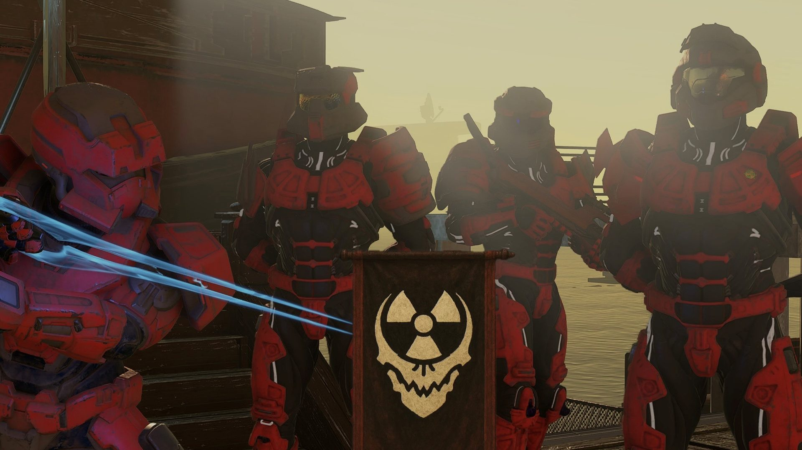
Noble cerca la ribalta di Valore. E sceglie il Mio Campione.
Sfida Puffo con la sua stessa formula e applica l'arsenale della Gilda Valore.
Guarda WC, poi guarda Pino, poi Guarda Stokes....poi riguarda WC e
implora “ti prego vai tu” WC "vabbè ci provo".
Una sfida che punta sui nuovi arrivati per portarli all'estremo delle loro prestazioni.
Ma non saranno soli. Perchè dai bordi dell'arena, la panchina di ogni Gilda
aiuta il proprio campione ad anticipare il nemico "Vai di laaaaaa"
"Si sparano in piazzaaa" "cambia armaaaa".
Fra i vari aiuti, Pino dal bordo dell’arena riesce a dare il primo e
l’ultimo consiglio sbagliato a WC. Noble non riesce a tappargli la bocca
che urla e consiglia “usa il BR vaiii”
(mappa da combattimento ravvicinato, bruciatore della gilda valore: come un fucile a pompa...)
WC ci crede, abbandona il bruciatore, impugna il BR, gira l’angolo e viene
carbonizzato dallo stesso arsenale di Valore, il bruciatore, impugnato da Patrifu.
Noble si chiede che ha fatto di male per meritarsi questo, guarda Swine e
capisce “hai fatto perdere la Viola”.
Pericolo sceglie Khan che passa da (2) a (3) e ci
rimarrà per tutto il resto della serata.
Una sfida impegnativa che vede Patrifu come nuova minaccia fra i mercenari.
"No dai..è troppo forte viaaaa" . "Allenatevi schiappe".
Valchiria punta tutto sul disorientmento comunicativo in partita mettendo Spartan
(il mercenario di cristallo) "ueeeee ueeeee vuuuuuciiiiii dovestaiii".
La partita finisce e Patrifu vince. Adesso a parimerito con Tigrozzo per questa modalità.
Tigrozzo al bordo dell'arena, strizza gli occhi (all'apparenza per sfida ma in verità
perchè non ha portato gli occhiali) "allora chi sta vincendo?". WC viene accolto a braccia aperte da Noble
"dai dai non è andata male!" mentre Spartan viene letteralmente lasciato da Drius
nella mappa a fine partita, perso in grida “ma è finita? Rega c’è nessuno?”.
Noble goes looking for Valore's moment in the spotlight. And picks My Champion. He challenges Puffo with his own formula and applies the Valore Guild's arsenal. He looks at WC, then at Pino, then at Stokes... then back at WC and pleads "please, you go". WC: "fine, I'll give it a go". A challenge built around the newcomers, to push them to the limit of what they can do. But they won't be alone. Because from the edge of the arena each Guild's bench helps its champion read the enemy: "go that waaay", "they're shooting in the squaaare", "switch weapoons". Amid all this help, Pino manages from the edge of the arena to give WC both his first and his last piece of bad advice. Noble can't get his hand over Pino's mouth before he shouts "use the BR, gooo" (a close-quarters map, with the Valore Guild's Torch: essentially a shotgun...). WC believes him, drops the Torch, picks up the BR, rounds the corner and is carbonised by Valore's own arsenal - the Torch - in Patrifu's hands. Noble wonders what he did to deserve this, looks at Swine and understands: "you made Fiorentina lose". Pericolo picks Khan, who goes from (2) to (3) and stays there for the rest of the evening. A demanding contest that marks Patrifu out as a new threat among the mercenaries. "Oh come on... he's far too good". "Practise, you amateurs". Valchiria bets everything on in-match communication chaos by fielding Spartan (the crystal mercenary): "weeey weeey heeeyyy where are yooou". The match ends and Patrifu wins. Now level with Tigrozzo in this mode. At the edge of the arena Tigrozzo squints (apparently in defiance, in truth because he forgot his glasses): "so who's winning?". WC is welcomed back with open arms by Noble, "come on, that wasn't bad!", while Spartan is quite literally left behind by Drius on the map at the end of the match, lost and shouting "is it over? Lads, is anyone there?".
No. #1
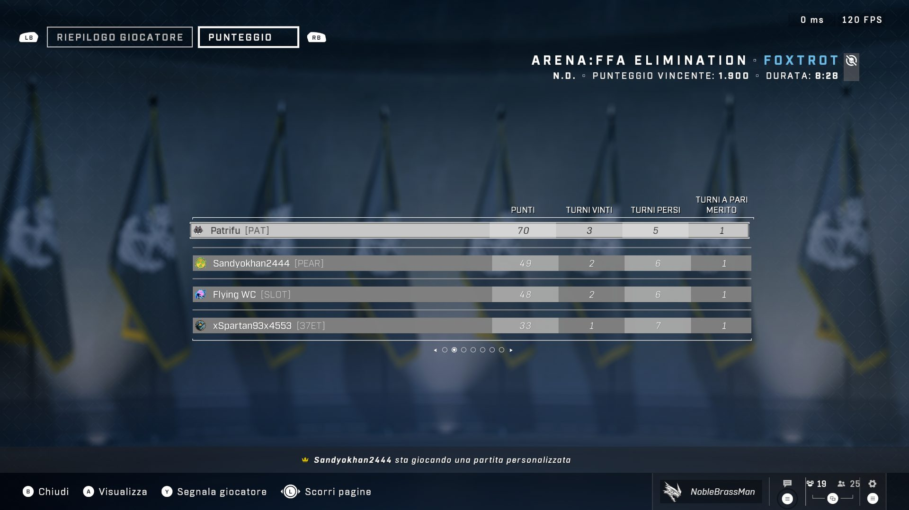
Ultima partita, Baudo prende Noble per il Brass Elite e gli dice “mettilo via per favore”.
Viene riposto in un baule e spedito a Sangiarno: ancora ignota la capacita di domare tale artefatto.
A Noble viene attaccata una mano di LEGO.
"Adesso faccio io", Baudo si alza in cielo e plasma il terreno a suo piacimento.
Sorge una mappa del Reach. Una gloria lontana di Baudo, Pino e Copter tira gli animi dell'Armata Valore alle stelle.
È mezzanotte passata, qualcuno comincia a lavarsi i denti mentre
Tigrozzo ciclicamente (ancora) entra ed esce da Discord.
Musk con il joystick sul satellite di casa Tigrozzo si sta facendo grosse e grasse risate.
Veicoli, azioni combinate e tanta rotazione di territorio, i vecchi ricordi del Reach infiammano pure Pino,
e il tutto conclude la partita con la vittoria di Valore.
In una azione a metà partita, Noble prende il bazooka e urla verso una direzione scoprendo che il combattimento
è giocato in mezza mappa. Come quando vai alle feste e occupi la cucina minuscola
lasciando vuota la sala da pranzo enorme.
Il combattimento vede pure Puffo con il veicolo che si avvicina ai nemici, scende,
gli spara, e rientra nel veicolo. Lo utilizza come una testuggine senza saparare.
Puffo non ha ancora preso la patente di guida e questo campionato ha interrotto le sue lezioni, quindi
prova qua e la ad allenarsi in partita.
Last match. Baudo takes Noble by the Brass Elite and tells him "put it away, please". It is stowed in a chest and sent to Sangiarno: the ability to master that artefact is still unknown. Noble is fitted with a LEGO hand. "My turn now": Baudo rises into the sky and shapes the ground as he pleases. A Reach map emerges. A distant glory of Baudo, Pino and Copter sends the Valore Army's spirits soaring. It is past midnight; some are starting to brush their teeth while Tigrozzo cyclically (still) joins and leaves Discord. Musk, with a joystick on the satellite above the Tigrozzo household, is having a very good laugh indeed. Vehicles, combined manoeuvres and plenty of territory rotation - the old Reach memories fire up Pino too, and the whole thing ends with a Valore win. In one move midway through the match Noble grabs the rocket launcher and shouts in one direction, only to discover the fighting is all happening in half the map. Like when you go to a party and everyone crams into the tiny kitchen, leaving the enormous dining room empty. The fighting also features Puffo driving up to the enemy, getting out, shooting them and getting back in. He uses the vehicle as a tortoise shell without ever firing from it. Puffo hasn't passed his driving test yet and this championship has interrupted his lessons, so he practises here and there mid-match.
La Guerra si conclude così, a tarda notte. Dove tutte le Gilde rientrano nelle loro dimore.
Prendono atto della Pericolosità di Pericolo e delle sue sfide.
Gilda pericolosa tanto quanto pericolosa e azzardata la scelta delle squadre fatta da Noble per Valore.
Lontano, Swine rientra nella sua dimora, accende la tv e legge che la Viola ha perso contro il Como 3 a 1
"..forse la Viola fa veramente cagare".
The War ends that way, late at night, with every Guild returning to its own residence. They take note of how dangerous Pericolo is, and of his challenges. A Guild as dangerous as Noble's choice of teams for Valore was dangerous and reckless. Far away, Swine gets home, switches on the TV and reads that Fiorentina lost 3-1 to Como. "..maybe Fiorentina really are rubbish".
Side Quest: Niente Vasellina per CobraSide Quest: No Vaseline for Cobra
30 Dicembre 2025. Il Mercenario di Cristallo. L’ultima guerra vide protagonisti molti leaders,
ma fra gli assenti, uno che si pensò
si fosse addormentato senza “prendere pesci” o in questo caso “prendere side quests”. Alla cena di Natale,
poco disse sulla sua assenza mentre cercava invano di riconoscere il suo sushi ordinato.
Poi, ricevuto i regali di Copter (la sua filastrocca finiva con la parola “cicciobrufolo”)
lasciò il gruppo e si diresse verso la sua dimora. Lorath. Cancelli di ghiaccio si aprirono al suo arrivo.
Nella sua roccaforte bianca, lo attendeva il suo piano oramai cominciato da tempo.
Drius, scende i larghi gradini arrivando al sottosuolo del suo castello.
Lì, cova il suo piano, o meglio la sua creazione. Un mercenario tutto suo.
Qualcuno che avrebbe messo nella mischia dell’Agorà, lasciato alle varie estrazioni e
avrebbe lavorato segretamente per valchiria. Un Frankenstein di ghiaccio, o meglio di
cristallo e diamante pregiato. Mezzo uomo mezzo tirolese. Fermo sulla lastra di pietra aspetta di essere attivato.
30 December 2025. The Crystal Mercenary. The last war saw many leaders take centre stage, but among those absent was one thought to have fallen asleep without "catching any fish", or in this case "catching any side quests". At the Christmas dinner he said little about his absence while trying in vain to identify the sushi he had ordered. Then, having received Copter's presents (his little rhyme ended with the word "spotty lump"), he left the group and headed for his own residence. Lorath. Gates of ice opened at his arrival. In his white stronghold, the plan he had begun long ago was waiting for him. Drius descends the wide steps to the vaults beneath his castle. There he broods over his plan - or rather his creation. A mercenary all his own. Someone he would put into the scrum of the Agora, leave to the various drafts, and who would work secretly for Valchiria. A Frankenstein of ice, or rather of crystal and fine diamond. Half man, half Tyrolean. Motionless on the stone slab, waiting to be activated.
Drius guarda i suoi sudditi “non abbiate paura” continua “lui ci porterà alla
gloria sabotando le altre gilde, ubbidirà solo a me”. Molti fiduciosi , ma altri preoccupati:
“Sire ma non poteva scegliere un qualsiasi altro materiale più resistente del cristallo? Non
ha paura che finisca in mille pezzi?”, Drius tirò fuori la paperella dalla sua tasca e la strizzò
*quack. 4 guardie portarono via 2 sudditi presi nella mischia per essere poi decapitati
(uno di questi sudditi era il contabile di valchiria: grande perdita). Nessuno contraddice
Drius che oramai si esprime con la paperella quando é stufo di rispondere e punisce in modo
casuale il suo esercito. Drius guarda ancora la sua creazione appoggiando tutte e due le mani
sulla lastra di pietra dove giace. “si..” sussurra “tu mi porterai alla gloria…creato dalle
più pregiate pietre di cristallo...belle...resistenti...forse.”
Drius looks at his subjects: "do not be afraid", and goes on, "he will lead us to glory by sabotaging the other guilds, and he will obey only me". Many are confident, others worried: "Sire, couldn't you have picked any material tougher than crystal? Aren't you afraid he'll end up in a thousand pieces?". Drius pulled the rubber duck from his pocket and squeezed it, *quack. Four guards led away two subjects grabbed at random from the crowd, to be beheaded (one of them was Valchiria's accountant: a great loss). Nobody contradicts Drius, who by now expresses himself with the duck whenever he is tired of answering, and punishes his army at random. Drius looks again at his creation, laying both hands on the stone slab it rests on. "Yes..." he whispers, "you will carry me to glory... made from the finest crystal stones... beautiful... tough... probably."
31 dicembre 2025. Capodanno a Malthor. Tradizione voleva che la dimora di Bastione fosse
usata per i festeggiamenti di fine anno. Copter contrario come ogni anno (servizi di pulizie
sono carissimi a Malthor) scaglia un vecchio DVD di Steven Seagal contro Flying WC “che cazzo
inviti la gente, siamo in guerra!!” . WC sul posto “bisogna tenersi stretti gli amici e ancora
più stretti i nemici signore”. Sootz non era stato lì a guardare perché sarebbe finito a
lavorare ad altre campagne marketing sotto tortura quindi aveva deciso di festeggiare altrove
in qualche taverna lontano da quel teatrino.
31 December 2025. New Year at Malthor. Tradition had it that Bastione's residence be used for the end-of-year celebrations. Copter, opposed as he is every year (cleaning services are extortionate in Malthor), hurls an old Steven Seagal DVD at Flying WC: "why the hell are you inviting people, we're at war!!". WC holds his ground: "one must keep one's friends close and one's enemies closer, sir". Sootz hadn't hung around to watch, because he would have ended up working on more marketing campaigns under torture, so he had decided to celebrate elsewhere, in some tavern far from that pantomime.
Copter prese le sue cose (…una racchetta da Ping pong, 3 pennarelli e 1 tovagliolo di stoffa)
e sparì in una delle 100 stanze della dimora per tutta la serata. Karmic rispose “el Classicoooo”
alla notizia dell’assenza di Copter. Mentre le gilde arrivavano ad una ad una, Drius e Valchiria
varcarono la soglia per ultimi. Infatti, Drius aveva scaricato dalla sua carovana in corsa,
la sua creatura in Agorà prima di arrivare alla festa. Il suo piano era cominciato.
Copter took his things (... a ping-pong bat, three marker pens and one cloth napkin) and vanished into one of the residence's hundred rooms for the whole evening. Karmic responded "el Clasicooooo" to the news of Copter's absence. As the guilds arrived one by one, Drius and Valchiria were the last through the door. Drius had in fact dropped his creature off in the Agora from his moving convoy before reaching the party. His plan had begun.
La serata inizia con la tv accesa dove NobleNews conclude che “Cose Strane é bello” e invita
tutti a parlarne per capire se é piaciuto o no. I sudditi di Sciabola non fanno in tempo a
far indossare a Karmic delle cuffie di cemento armato che parte “mahhh!!! non proprio insomma..”
seguito da Stokes già ubriaco mette in play una registrazione di chatGPT, mentre da Cobra
partono altri colpi ampliati da Bastione. Il delirio. Da passarsi i piatti, gli eserciti
cominciano a tirarsi i coltelli. Glimpse e Swine sono gli unici a gustarsi la cena perché,
vedendo passare in tv Noble con un sorriso a 36 denti, sapevano che avrebbe portato solo follia.
P.S. Noble assente perché l’inverno ha ghiacciato il deserto di Sangiarno ed ha rinunciato a imbottigliarsi nel traffico.
The evening starts with the TV on, where NobleNews concludes that "Stranger Things is good" and invites everyone to discuss whether they liked it or not. Sciabola's subjects don't manage to get the reinforced-concrete headphones onto Karmic in time before he starts up with "weeell!!! not exactly, I mean...", followed by an already drunk Stokes hitting play on a ChatGPT recording, while further shots come in from Cobra and are amplified by Bastione. Bedlam. Instead of passing the plates, the armies start throwing knives at each other. Glimpse and Swine are the only two enjoying the meal, because when they saw Noble on TV with his 36-tooth grin they knew it would only bring chaos. P.S. Noble absent because winter had frozen the Sangiarno desert and he gave up on sitting in traffic.
La serata va avanti con dolci e leccornie di ogni tipo, all’apparente zuccherosa calma,
una ultima decisione fu la firma della guerra ad avvenire.
The evening goes on with sweets and delicacies of every kind and, amid the apparent sugary calm, one last decision was the signing-off of the war to come.
Tre parole. Giochi da Tavolo. Con canti melodici e medievali, il gioco di indovinare gli inni
nazionali delle Gilde, glimpse e stokes, aiutati da chatGPT riescono a vincere sempre. Mentre
alle domande su animali strani, Giacomo viene aggiudicato come miglior nome per un ippopotamo.
Ma al gioco con impostori in partita, due leader si ritrovano impostori senza saperlo. Swine e
Colt. Gli impostori cercando di nascondersi alle domande dei partecipanti. Al momento di dichiarare
un sinonimo di “Sci”, Colt spara “Schumacher”, Swine sbotta sul suo alleato impostore ma
inconsapevole che sia proprio un impostore “sei un coglione che cazzo diciii sei un impostoreeee”.
C’è scompiglio ma alla fine Colt si rivela un impostore. Swine é devastato: il suo alleato ha
sparato una puttanata, facendo saltare la sua copertura e con il senno di poi pure quella di Swine
(che alla fine fu scoperto lo stesso). La partita finisce e Swine é delirante su Colt
“ma come cazzo ti é venuto in mente ma percheee” Colt non ne vuole sapere “gnamo non era così
palese!! Basta!!” La discussione va avanti , e la serata si dissolve in chiacchiere.
Gilde tornano nei loro regni , due di loro, molto indignate.
Three words. Board games. With melodic medieval singing, in the game of guessing the Guilds' national anthems, Glimpse and Stokes - helped by ChatGPT - manage to win every time. Meanwhile, on the questions about unusual animals, Giacomo is voted the best name for a hippopotamus. But in the game with impostors, two leaders find themselves impostors without knowing it. Swine and Colt. The impostors try to dodge the other players' questions. When asked for a synonym for "ski", Colt blurts out "Schumacher", and Swine turns on his fellow impostor - unaware that he actually is one - "you idiot, what are you on about, you're an impostooor". There is uproar, and in the end Colt is revealed as an impostor. Swine is devastated: his ally talked rubbish, blowing his own cover and, with hindsight, Swine's too (who was found out anyway in the end). The game finishes and Swine is raging at Colt, "what on earth were you thinking, whyyy". Colt won't have it: "come on, it wasn't that obvious!! Enough!!". The argument runs on, and the evening dissolves into chatter. The Guilds return to their realms - two of them thoroughly indignant.
6 Gennaio 2026. Strane Scomparse e Nuove Apparizioni. Mattinata gelida invernale in Agorà
che nel bel mezzo di qualche risata di un gruppo di mercenari si accorgono fra di loro
ce ne sta uno nuovo. Il mercenario di cristallo. Apparso dal nulla. "Oh te?".
Salve io sono "Spartan". E tutti "se vabbè". E continua "cosa fate di bello?".
Alcuni rispondono sempre dubbiosi "partecipiamo ad un campionato su halo infinite".
Cosa è halo infinite risponde Spartan. SUS. Molti mercenari strizzano gli occhi,
qualcosa non quadra. Chi è costui, perchè attaccata alla sua armatura c'è
scritto "proprietà di Drius"?. Molti non se la bevono "ecco, sto quà non
è un mercenario ma un leader. Le gilde ci fregano e mandano spie". Drius aveva calcolato tutto.
Tutto tranne insegnare a Spartan a giocare ad halo infinite. Pessima strategia di Valchiria.
6 January 2026. Strange Disappearances and New Appearances. A freezing winter morning in the Agora, where in the middle of a group of mercenaries having a laugh they notice there is a new one among them. The crystal mercenary. Appeared from nowhere. "Oi, you?". Hello, I'm "Spartan". And everyone: "yeah, right". And he goes on: "so what are you all up to?". Some answer, still doubtful, "we're taking part in a Halo Infinite championship". What is Halo Infinite, Spartan replies. SUS. Plenty of mercenaries narrow their eyes; something doesn't add up. Who is this, and why is there a label on his armour reading "property of Drius"? Many aren't buying it: "there we go, this one isn't a mercenary, he's a leader. The guilds are cheating and sending in spies". Drius had worked everything out. Everything except teaching Spartan to play Halo Infinite. Terrible strategy from Valchiria.
Nella stessa Agorà arriva un mercenario di lunga data, odiato da tutti per la sua
interminabile assenza e per le sue offese per qualsiasi videogioco. Arriva Patrifu.
Dopo anni passati in Side Quests leggendarie (ma molto cicciobrufolose) con Drius, quindi esclama
“dove sta quella canaglia di Drius?” Noble: “non lo vediamo da tanto” Patrifu “ma come?”.
All'arrivo di Patrifu, molti lo riconoscono, tra i quali Karmic e alla sua presenza
lo mura con un secco: “ti devi riguadagnare il rispetto per la tua assenza ingiustificata.
Ah già e vaffanculo”.
Into the same Agora comes a long-standing mercenary, hated by everyone for his interminable absence and for slagging off every videogame going. Patrifu arrives. After years spent on legendary (but very spotty-lump-ish) side quests with Drius, he exclaims "where's that rogue Drius?". Noble: "we haven't seen him in ages". Patrifu: "how come?". On Patrifu's arrival many recognise him, Karmic among them, who walls him off in his presence with a curt: "you'll have to earn back the respect you lost with your unjustified absence. Oh, and get stuffed".
Vicino a questo ritrovo, ci sono alcune madri che affiggono i loro volantini. Volantini di persone disperse.
Esattamente dei loro figli scomparsi. “DeadRick: Missing” , “Apocal: dove sei?”.
Si aggira forse un assassino in Agorà? Ad ogni scomparsa una firma: “Dr.”
Non si crea troppo scompiglio fra i mercenari e leaders perché sono persone che non
hanno minimamente partecipato ad un cazzo (ne detto un cazzo di niente), ma un
sottile velo di paura si posa sulle spalle di tutti i giocatori del campionato.
“Cioè adesso se non giochi, ti ammazzano?” Noble: “chissà, meglio continuare a giocare...”
e ancora “..bravo ragazzo DeadRick. Sebbene, la settimana scorsa ha deciso di
bruciare tutte le newsletter di questo campionato” e poi “fumo bianco dal suo camino di casa avrà
sicuramente fatto arrabbiare qualcuno, sappiamo tutti che le newsletter sono fatte
di una carta pregiata” (con la quale molti ci si puliscono il culo).
Near this gathering, some mothers are putting up flyers. Flyers for missing people. Their missing sons, to be precise. "DeadRick: Missing", "Apocal: where are you?". Is there a murderer loose in the Agora? Each disappearance carries a signature: "Dr." It doesn't cause much of a stir among the mercenaries and leaders, because these are people who never took part in anything (nor said a word about anything), but a thin veil of fear settles on the shoulders of every player in the championship. "So now if you don't play, they kill you?". Noble: "who knows, best to keep playing...", and then "..good lad, DeadRick. Although last week he decided to burn every newsletter from this championship", and "white smoke from his chimney will definitely have annoyed someone, we all know the newsletters are printed on fine paper" (which a lot of people use to wipe their backsides).
No. #1
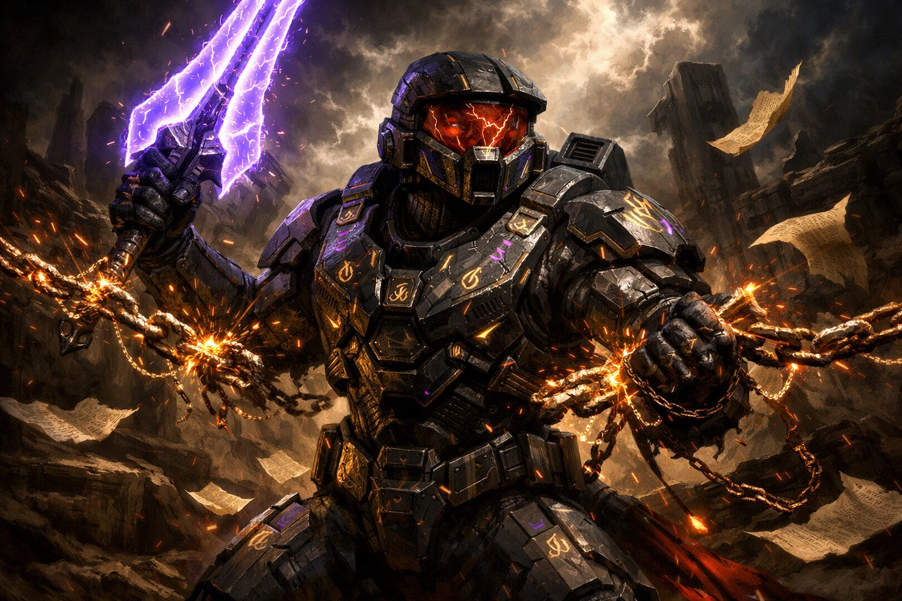
Qualcuno ha scattato una foto a "Dr."
Someone took a photo of "Dr."
7 Gennaio 2026. Si va in scena.
A Maltorh, Copter si rompe il cazzo del bonismo di WC e decide di entrare in partita.
“Guerra cazzo, Fanculo Romo…..volevo dire Flying WC, e tutto sto bonismo di merda.”
WC "si calmi signore è solo un gioco".
7 January 2026. Curtain up. At Malthor, Copter has had enough of WC's do-goodery and decides to enter the match. "War, damn it. Screw Romo... I mean Flying WC, and all this do-gooding nonsense." WC: "calm down sir, it's only a game".
Colt invece riesce a trovare uno slot di 15’ alla vecchia taverna de “Cazzo che Ridere” e
parte con i suoi fogli scritti all’ultimo secondo: prendendo per il culo tutte le Gilde.
La sua carriera da standup comedian é stata più volte interrotta dal riparare i
riscaldamenti per le varie dimore delle Gilde (questo lavoro è la sola entrata
economica della Gilda Cobra) e nel tempo libero prova a non abbandonare
il suo sogno (e a scrivere le sue quattro cagate). Sale sul palco, e dice apparentemente
[spiegato più avanti] due cazzate, molti applausi ma qualche pomodoro
tirato in faccia, si ritiene comunque soddisfatto
(ha preso più complimenti di quando gioca...ci voleva poco).
Colt, meanwhile, manages to find a fifteen-minute slot at the old "What a Laugh" tavern and goes on with his pages written at the last second, taking the mickey out of every Guild. His stand-up career has been interrupted more than once by fixing the heating at the various Guild residences (that job is the Cobra Guild's only source of income), and in his free time he tries not to give up on his dream (and on writing his little bits of nonsense). He gets on stage and says what appear to be [explained later] two pieces of rubbish; plenty of applause, though also a few tomatoes in the face. He considers himself satisfied all the same (he got more compliments than he does playing... not a high bar).
Mentre Colt è sul palco coperto di applausi, uno strano caldaista con
dei grossi baffi arriva alla dimora di Ade dove lo accoglie Swine con “dica”.
“C’è un problema al suo impianto idroelettrico” ,
“ma io non ho un impianto idroelettrico”,
“senta é lei il caldaista o sono io?”.
Swine “entri faccia pure”.
Swine si allontana poi ci pensa un attimo ”ma i caldaisti
non riparano gli impianti idroelettrici”
“Heyyyyy”, gira l’angolo corre verso la centralina di impianti e vicino al quadro elettrico
ritrova solo dei baffi finti. Chi era quel maledetto? Cosa avrà fatto alla
mia dimora? Swine si addormenta pieno di ansie.
While Colt is on stage covered in applause, a strange boiler engineer with a big moustache arrives at Ade's residence, where Swine greets him with "yes?". "There's a problem with your hydroelectric system". "But I don't have a hydroelectric system". "Look, are you the boiler engineer or am I?". Swine: "come in, help yourself". Swine walks off, then thinks about it for a second: "hang on, boiler engineers don't repair hydroelectric systems". "Heyyyy" - he rounds the corner and runs to the plant room, and next to the electrical panel finds nothing but a fake moustache. Who was that wretch? What has he done to my residence? Swine falls asleep full of anxiety.
8 gennaio 2026, 21:00. La bottega del Fato.
Oramai l'annuncio della Guerra è alle porte. Ma ancora nessun rumors nessuna notizia.
Fra i Mercenari che ronzano nell'Agorà, ce n'è uno che, pieno di soldi cerca di raggiungere
al più presto il centro scommesse. È Glimpse of Nature.
Nella sua corsa sfrenata, si ferma bruscamente incuriosito da un negozio che non aveva mai visto prima d'ora.
Legge "La Bottega Del Fato". Glimpse, assiduo scommettitore, ci va a nozze.
Entra in Bottega. Vari artefatti lo incantano. C'è la pizza Bibobio,
la sedia di JoeMoo e l'ostrica di Flying WC.
Fra tutte, il suo sguardo si posa su un mazzo di carte. Reduce dell'evento di BoxStone
dove la scampò per un soffio contro KarmicScroll, allunga la mano sussurrando "che bellooooo".
La sua mano viene bacchettata da una figura misteriosa apparentemente proprietario della Bottega.
"Giù le mani Mr. Glimpse". E continua "O forse lei...vuole sfidare il fato?".
Glimpse: "sò venuto apposta".
8 January 2026, 21:00. The Shop of Fate. By now the announcement of the War is imminent. But still no rumours, no news. Among the mercenaries buzzing about the Agora there is one who, flush with money, is trying to reach the betting shop as fast as possible. It is Glimpse of Nature. Mid-sprint he stops sharply, intrigued by a shop he has never seen before. He reads: "The Shop of Fate". Glimpse, an inveterate gambler, is in his element. He goes in. Various artefacts enchant him. There is Bibobio's pizza, JoeMoo's chair and Flying WC's oyster. Of them all, his eye settles on a deck of cards. A survivor of the BoxStone event, where he escaped KarmicScroll by a whisker, he reaches out, whispering "beautifuuuul". His hand is smacked away by a mysterious figure, apparently the shop's owner. "Hands off, Mr Glimpse". And he goes on: "or perhaps you... wish to challenge fate?". Glimpse: "that's what I came for".
Le carte vengono messe sulla tavola, e viene chiesto a Glimpse di scegliere una ad una.
Vengono scoperte e le squadre della Guerra cominciano a formarsi.
Fra le tante, Glimpse nota che la carta di Copter non è presente "mmmh interessante".
Scoprimmo più tardi che Copter aveva pagato il proprietario della Bottega
per togliere la sua carta e diventare El Classico della serata (quindi non pervenuto senza dare spiegazione).
Glimpse nota una cosa guardando le carte. Tutte le puttanate sparate alla stand up comedy di Colt
si stanno avverando (Perchè? Il fato lo vuole?).
La disposizione è finita. Il proprietario guarda Glimpse e dice "Sei pronto Ciaba?".
Glimpse risponde: "si....hey aspetta come fai a sapere..."
Le carte fluttuano nell'aria, tutto diventa luce e le menti dei giocatori
finiscono sul campo di battaglia. Cobra contro Ade, side quest. La guerra ha finalmente inizio.
The cards are laid on the table and Glimpse is asked to pick them one by one. They are turned over and the War's teams begin to take shape. Among them all, Glimpse notices Copter's card is missing: "mmmh, interesting". We found out later that Copter had paid the shop's owner to remove his card so he could be the evening's El Clasico (i.e. a no-show, with no explanation offered). Looking at the cards, Glimpse notices something. All the rubbish blurted out at Colt's stand-up gig is coming true (why? Does fate will it?). The layout is complete. The owner looks at Glimpse and says "are you ready, Ciaba?". Glimpse answers: "yes.... hey, hang on, how do you know...". The cards float into the air, everything turns to light, and the players' minds land on the battlefield. Cobra against Ade, side quest. The war has finally begun.
No. #1
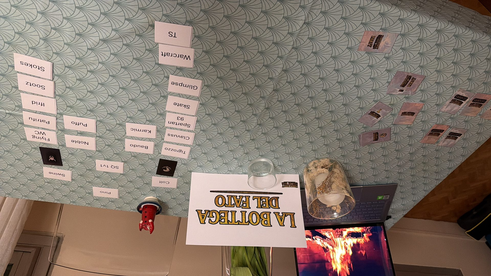
8 gennaio 2026, 22:00. Niente Vasellina per Cobra.
8 January 2026, 22:00. No Vaseline for Cobra.
Partita 1: Re Della Collina, l'incubo di Ade.
Swine cade in follia, al "prendete i veicoli" prende quello senza torretta entrando
nella collina e morendo istantaneamente sotto i colpi di Cobra.
Stokes e Noble diventano la coppia dei ritardati.
Al comando "Vai!" di Noble alla torretta, Stokes (ubriaco) urla "Si vola diohane" e
accelera forzatamente investendo un inerme Patrifu.
Primo secondo di Patrifu nel Campionato: morto investito dal suo stesso team.
Alla velocità della luce, Cobra conquista la prima collina.
Fucili di precisione, Bazooka, invisibilità hanno tutto (perfino il cervello):
stanno letteralmente seppellendo Ade.
Spartan usa la sua tecnica peggiore, comincia a parlare in napoletano contro Ade.
Match 1: King of the Hill, Ade's nightmare. Swine falls into madness: at "take the vehicles" he takes the one without a turret, drives into the hill and dies instantly under Cobra's fire. Stokes and Noble become the halfwit duo. At Noble's "Go!" from the turret, Stokes (drunk) shouts "we're flyyying, damn it" and forces the accelerator, running over a defenceless Patrifu. Patrifu's first second in the Championship: killed by his own team. At the speed of light, Cobra takes the first hill. Sniper rifles, rocket launchers, cloaking - they have everything (including brains): they are quite literally burying Ade. Spartan uses his worst technique and starts speaking Neapolitan at Ade.
Flying WC viene atterrito come Unidici in Stranger Things quando gli puntano addosso
i megafoni di suono. "Baaaasta fatelo tacereeee" "UeUeeeee WCCCC commaaaastaiii??".
Non meglio va per Swine. È in un angolo,
ormai perso nella follia, si chiama la "Collinafobia". Soltanto un paziente al mondo: SensibleSwine.
Allora Ade è costretto a ripiegare ed ascoltare un altro Leader (purtroppo) il dislessico Noble.
Stavolta Noble però riesce a mettere due parole in fila, esse portano velocemente alla sconfitta di Ade.
"Bisogna aspettare i veicoli sennò non si può vincere".
Noble si mette ad osservare la piattaforma del Warthog. Passa 1 minuto, 2 minuti.
A questo punto, Stokes, confuso e ubriaco, si mette a guardare anche lui la piattaforma
"oh ha detto di aspettare...si aspetta". A loro si uniscono 1 poi 2 poi 3 mercenari...
insomma tutto il team. Soltanto Patrifu e Puffo che corrono verso il nemico si ritrovano
subito sotto il piombo di Cobra. Puffo si accorge cadendo al suolo che l'intero team di Ade
sta letteralmente guardando una piattaforma da ore sotto la guida di Noble: "ancora qualche secondo e ci siamo..."
2 colline, 3 colline. 3 a 0. Partita perfetta di Cobra. Proprio Cobra che nella stessa
mappa perse da Pericolo di Puffo, ora si ritrova vincitore. In modo perfetto.
Colt immerge i suoi coglioni in acqua gelida, mentre guarda Puffo con goduria.
Flying WC is flattened like Eleven in Stranger Things when they aim the sound cannons at her. "Stooop, someone shut him uuup" "Oiii, WCCCC, how yer dooooin??". It goes no better for Swine. He is in a corner, by now lost to madness; the condition is called "hillophobia". Only one patient in the world: SensibleSwine. So Ade is forced to fall back and listen to another Leader - unfortunately, the dyslexic Noble. This time, though, Noble manages to string two words together, and they lead swiftly to Ade's defeat. "We have to wait for the vehicles, otherwise we can't win". Noble settles down to watch the Warthog spawn platform. One minute passes, then two. At which point Stokes, confused and drunk, starts watching the platform as well: "oh, he said wait... so we wait". They are joined by one, then two, then three mercenaries... in short, the whole team. Only Patrifu and Puffo, running at the enemy, find themselves immediately under Cobra's guns. As he drops, Puffo notices that Ade's entire team has literally been staring at a platform for hours under Noble's leadership: "a few more seconds and we're there...". Two hills, three hills. 3-0. A perfect match from Cobra - the same Cobra that lost to Puffo's Pericolo on this very map, now the winner. Perfectly. Colt dips his balls in ice water while watching Puffo with relish.
Partita 2. L'incubo della serata, una nuova mappa.
Lunga e larga come Terranuova Bracciolini, occupata non da 5 mila abitanti
ma da soli 16 giocatori. Inoltre, immaginatevi di avere cemento ai piedi.
Eh sì, Delta Massacro: nessuno scatto. Ade gioca la strategia più infame,
quella per far saltare i nervi alla gente. Un piano che solo Ade poteva avere.
"Ecco un veicolo lo vedo!!" i giocatori impiegano 5 minuti solo per fare pochi metri.
Le urla dai corridoi di Baudo si fanno sentire "ma che è sta merda di mappa!!!"
Karmic continua "milioni di modalità e si sceglie sto schifo!!!"
Inconfondibile: il piano di Ade ha funzionato.
La gente sta perdendo la testa. Non vuole aspettare, vuole azione, subito.
Vuole cose vicine "hic et nunc". Ma Swine gioca proprio su questo e il piano funziona:
"eh cazzi vostri oh, camminate coglioni!".
In questa lunga mappa, la connessione di Ifrid va a farsi benedire e
diventa osservatore per il resto della guerra.
Altro che Ultra Instinct, qui ci vuole un ultra network (e non della vodafone per carità del signore).
Colt dopo una marcia lunga 18km prende il bazooka e chiede aiuto ai suoi compagni.
"Dai ho il bazooka qualcuno mi porti in un veicolo"
Niente da fare, il team di Cobra ha iniziato il rituale che sa fare meglio:
infamare Colt (e anche la mappa stavolta).
"Cazzo vuoi te e il tuo bazooka di merda sta mappa fa schifo, fai schifo".
Le frasi vengono silenziate da Ade che arriva alla carica con 2-3 veicoli.
Swine si è ripreso e comanda la sua Gilda in "coppie di due dai!” dettando nome per nome.
Togliendo finalmente dalla leadership il dislessico Noble.
Match 2. The nightmare of the evening: a new map. As long and wide as Terranuova Bracciolini, occupied not by five thousand inhabitants but by sixteen players. On top of that, imagine having concrete on your feet. Yes indeed - Delta Slayer: no sprint. Ade plays the most despicable strategy going, the one designed to make people snap. A plan only Ade could come up with. "There, I can see a vehicle!!" - players take five minutes just to cover a few metres. Baudo's shouting can be heard from the corridors: "what is this rubbish map!!!". Karmic continues: "millions of modes and we pick this garbage!!!". Unmistakable: Ade's plan has worked. People are losing their minds. They don't want to wait, they want action, now. They want things close at hand, hic et nunc. But Swine is playing on exactly that, and the plan works: "well, tough luck, walk, you idiots!". On this long map Ifrid's connection gives up the ghost and he becomes a spectator for the rest of the war. Never mind Ultra Instinct, what you need here is an ultra network (and not a Vodafone one, God forbid). After an eighteen-kilometre march, Colt picks up the rocket launcher and asks his team-mates for help. "Come on, I've got the launcher, someone give me a lift in a vehicle". No chance: the Cobra team has begun the ritual it does best - slagging off Colt (and this time the map too). "What do you want, you and your rubbish launcher, this map is awful, you're awful". The insults are silenced by Ade charging in with two or three vehicles. Swine has recovered and is commanding his Guild, "in pairs, come on!", naming them one by one. Finally taking leadership away from the dyslexic Noble.
Partita 3. Smorzare gli animi (?).
Colt allora ci prova. Usa quello che ha messo in pratica nella stand up comedy.
Usa il "comportamento chill". "Dai amici facciamo una sketch per addolcire gli animi,
è solo un gioco. Va bene?" Nessuna risposta. "...vi va bene?". Nessuna risposta.
Si parte. Le Gilde si ritrovano sui Gungoose in blockfort e...niente, ripartono le offese.
"Colt di merda che hai messo??". "Dai con sta roba??". Colt pensa “eh allora porca mad...”.
Pure Clavuss, considerato molto spiccio "pena poco e gioca",
prende le parti di Karmic insieme a Tigrozzo sabotando la leadership di Colt.
Una disfatta del morale di Cobra.
Ifrid ritorna osservatore di Cobra e continua a farsi grasse e grosse risate
sentendo le offese su Colt. Questa modalità, inspiegabilmente,
porta ancora una volta ai ranghi più alti il buon vecchio Pino. Non c'è nulla da fare:
è la sua modalità. Sfreccia, si posiziona, sa dove andare. Una iena.
Swine "minchia facesse così pure nelle partite più serie". Fra vari mercenari e leader
che si cappottano da soli, la partita va avanti in modo disconnesso, proprio come una sketch.
Alla fine Ade ha la meglio ma senza sapere il perchè (ripeto) proprio come una vera partita Sketch,
sebbene Pino si sta scolando 3 bottiglie di champagne da solo per la vittoria
(secondo lui, e lui soltanto: grazie a lui).
Match 3. Cooling things down (?). So Colt gives it a go. He uses what he has practised in stand-up. He deploys "chill behaviour". "Come on friends, let's do a sketch match to sweeten the mood, it's only a game. All right?". No answer. "...is that all right?". No answer. Off they go. The Guilds find themselves on Gungooses in Blockfort and... nothing, the insults start again. "Rubbish Colt, what have you picked??". "Seriously, this stuff??". Colt thinks "oh, for crying out...". Even Clavuss, generally considered brisk - "complain less and play" - takes Karmic's side along with Tigrozzo, sabotaging Colt's leadership. A rout for Cobra's morale. Ifrid goes back to spectating for Cobra and carries on having a very good laugh at the abuse aimed at Colt. This mode, inexplicably, once again lifts good old Pino to the top of the ranks. There is nothing to be done: it's his mode. He tears about, positions himself, knows where to go. A hyena. Swine: "bloody hell, if only he played like that in the serious matches". Between the various mercenaries and leaders flipping their own vehicles, the match runs on disjointedly - exactly like a sketch. In the end Ade comes out on top without knowing why (I repeat) exactly like a real Sketch match, though Pino is polishing off three bottles of champagne on his own to celebrate the win (in his opinion, and his alone: thanks to him).
Partita 4. E allora Massacro. "Basta ste robe", "Ma che si può passare a giocare
a ste modalità per 1h??". "Colt i’merda!!". Colt: "E ALLORA MASSACRO".
E Swine: "guarda che non sta a voi a decidere". Intera Gilda Cobra: "ah".
Swine continua: "comunque va bene dai massacro sia".
Match 4. Slayer it is, then. "Enough of this stuff", "are we seriously going to play these modes for an hour??". "Colt, you're rubbish!!". Colt: "SLAYER IT IS THEN". And Swine: "it isn't actually your call". The entire Cobra Guild: "ah". Swine goes on: "anyway, fine, Slayer it is".
Si torna agli albori del Campionato. Jurassic Park. Rambaudo conosce a memoria
questa mappa dove strappò una vittoria a Valchiria. Colt riprende le redini della Gilda e
compatti affrontano Ade per l'ultima volta. Fucili di precisione , scambio di veicoli.
Non c'è pace. Non c'è attesa in nulla. Proprio come voleva Cobra. Noble prende il warthog e
nota subito il suo abile guidatore, WC. "Eh sì è proprio della Gilda Bastione"
(non come Stokes che investe gente del suo stesso team)
We go back to the Championship's early days. Jurassic Park. Rambaudo knows this map by heart, having snatched a win from Valchiria on it. Colt takes the reins of the Guild again and, united, they face Ade one last time. Sniper rifles, vehicles trading hands. There is no peace. There is no waiting for anything. Exactly as Cobra wanted. Noble takes the Warthog and immediately notices his skilled driver, WC. "Yes, he really is from the Bastione Guild" (unlike Stokes, who runs over people on his own team).
Colt incita gli animi "dai forza si sono accerchiatiiii".
Colt corre, poi si ferma. Non sente nessuno. La gente è letteralmente sparpagliata,
stanca, offesa. Insomma di tutto. Sul finale della partita,
mentre Cobra marcia su Ade, Swine usa la stessa frase di Noble
“bisogna prendere i veicoli e si é vinto!” Noble
“quando lo dicevo io i veicoli arrivavano in orario”
Swine “taci”. Per Swine infatti i veicoli apparirono istantaneamente.
Allora prende la rincorsa alla guida di un warthog con Noble alla torretta:
trasformano l’esercito di Cobra in birilli. Strike. Fine partita.
Colt rallies the troops: "come on, they're surrounded!!". Colt runs, then stops. He can't hear anyone. People are quite literally scattered, tired, offended. In short, everything. Towards the end of the match, as Cobra advances on Ade, Swine uses Noble's own line: "we need to take the vehicles and it's won!". Noble: "when I said it, the vehicles arrived on time". Swine: "be quiet". For Swine, in fact, the vehicles appeared instantly. So he takes a run at it, driving a Warthog with Noble on the turret: they turn the Cobra army into skittles. Strike. End of match.
Glimpse torna in se e si ricorda che questa partita è stata decisa alla Bottega del Fato.
"Che Fregatura!!!" quindi torna sul posto per chiedere il rimborso, ma la Bottega non c'era più.
Sarà stato proprio il fato o la decisione di Copter di fare El Classico all’ultimo momento ad aver
portato gli animi a questi estremi rugginosi? Mercenari e Leaders di Cobra si sparpagliano
infuriati "madonna che merda di Guerra".
Karmic esce di scena portandosi via 3 sanpietrini dell’Agora.
Tigrozzo e Ifrid si allontanano ridendo perché alla fine trovano piacere nell'offendere Colt
(li accomuna molto questa cosa).
Stokes, perennemente ubriaco prova a dare un bacio a Glimpse che schiva dicendo "heyyy sta bono"
e viene riportato al QuiviQuivi.
Noble guarda WC allontanarsi "non male quel guidatore.."
Colt-Bane torna a casa intatto ma scocciato, pensieroso di trovare un modo al fine di prendere
meno offese e rafforzare gli animi. Alla sua uscita d'Agorà, cade dalla sua tasca
qualcosa che viene raccolto da Sootz. Una carta della Bottega. "ah ma allora...."
Altrove, Skate guarda Swine che si allontana e pensa al suo ritorno in Ade, da definirsi il quando.
Swine torna a casa felice, e trova un bigliettino alla porta
"questa volta non ti ho fatto saltare la corrente", firmato "PK".
"...Ma c'è pure Paperinik in sto campionato?"
Glimpse comes to and remembers that this match was decided at the Shop of Fate. "What a swindle!!!" - so he goes back to ask for a refund, but the shop was no longer there. Was it really fate, or Copter's last-minute decision to pull an El Clasico, that pushed everyone to these rusted extremes? Cobra's mercenaries and Leaders scatter, furious: "God, what a rubbish War". Karmic leaves the scene taking three of the Agora's cobblestones with him. Tigrozzo and Ifrid walk off laughing, because in the end they enjoy insulting Colt (it's very much a shared interest). Stokes, permanently drunk, tries to kiss Glimpse, who dodges with "heyyy, behave", and is carried back to the QuiviQuivi. Noble watches WC walk away: "not a bad driver, that one..". Colt-Bane goes home intact but annoyed, thinking about how to take fewer insults and stiffen morale. On his way out of the Agora something falls from his pocket and is picked up by Sootz. A card from the Shop. "Ah, so that's...". Elsewhere, Skate watches Swine leave and thinks about his return to Ade - the when still to be decided. Swine gets home happy and finds a note on the door: "this time I didn't cut your power", signed "PK". "...is Superduck in this championship too?"
Intermezzo: La Cena di NataleInterlude: The Christmas Dinner
20 Dicembre 2025. Nebbia... Nebbia .... e Guazza. L’Agorà ne è invasa. Viaggiatori,
Mercanti e Mercenari a zonzo camminano in cerca di arsenale e motivo di battaglia.
Perfino i ricordi della Notte Pericolosa, sembrano oramai un ricordo lontano perso anch’esso nel banco di nebbia.
Volantini, scommesse di quella notte se ne è perso completamente traccia.
Un monito a dimenticare il passato e guardare al futuro. Questo pensiero viene interrotto
da un grande trambusto che scuote mercanti e mercenari e impugnano armi -- completamente
ignari di quello che sta per accadere. Si sentono passi che piano piano “scompaiono” nel buio.
“Hey!!!” dalla nebbia “Qualcuno ha affisso qualcosa”. Accorrono al muro degli annunci,
“Domani: Risultati Provvisori” scrive una pergamena giallo sbiadito mezza strappata.
Mercenari sono in sobbuglio, alcuni preoccupati, altri curiosi,
mentre i vari messaggeri delle Gilde accorrono dai loro Leaders per portare questa insolita notizia.
20 December 2025. Fog... fog... and drizzle. The Agora is swamped in it. Travellers, merchants and mercenaries wander about looking for weapons and a reason to fight. Even the memories of the Dangerous Night now seem distant, lost in the fog bank as well. Flyers and bets from that night have vanished without trace. A reminder to forget the past and look to the future. That thought is interrupted by a great commotion that shakes merchants and mercenaries into grabbing their weapons - entirely unaware of what is about to happen. Footsteps are heard, slowly "disappearing" into the dark. "Hey!!!" from the fog, "someone's put something up". They rush to the noticeboard: "Tomorrow: Provisional Results", reads a faded yellow, half-torn parchment. The mercenaries are in an uproar, some worried, some curious, while the various Guild messengers race off to their Leaders with this unusual news.
21 Dicembre 2025. Santa in Town. Un grande chiasso fra le strade sveglia
l’Agorà che vede una mandra di Mercenari correre al muro degli annunci.
“Eccoli!”, qualcuno eclama. Risultati appesi vennero affissi nella notte, ma da chi?
Per ogni risultato pure una nota. Molti, ancora non classificati vedono grossi e rossi
“NA” quasi d’appertutto. Ad uno ad uno i mercenari prendono i loro risultati provssisori
e li custodiscono gelosamente. Tranne alcuni. Pino’s Carrot, sale su un palco ed esclama
“Allora gente guardate qua”. Risultati di tutto rispetto per Pino che si vede classificato
praticamente dappertutto con voti altissimi. A nulla è servita la nota che spiega a
Pino che le classifiche provvisorie sono composte da poche anime, facile quindi prendere
voti alti, ma lui è già al settimo cielo, meritato per aver partecipato tanto
fino ad oggi a questo campionato. Tigrozzo invece, incontrastato il titolo di Campione con
una vittoria (contro “Pino il cecchino” in 2m2) ed chiede con un inglese tutto suo “Dov’è
il signor Colt in questi Auardes eh? Non lo vedo e voi?”. Il richiamo di sfida da parte di
un Mercenario verso un Leader è molto sfrontata quanto divertente fra i Mercenari (che offendono sempre Colt).
21 December 2025. Santa in Town. A great racket in the streets wakes the Agora, which sees a herd of mercenaries running to the noticeboard. "There they are!", someone exclaims. Results had been posted overnight - but by whom? Each result comes with a note. Many, still unranked, see big red "NA"s almost everywhere. One by one the mercenaries take their provisional results and guard them jealously. All but a few. Pino's Carrot climbs onto a stage and declares "right, everyone, look at this". Thoroughly respectable results for Pino, who finds himself ranked practically everywhere with very high scores. The note explaining to Pino that the provisional tables are made up of very few souls - making high scores easy - is entirely wasted; he is already on cloud nine, and deservedly so for having taken part so much in this championship. Tigrozzo, meanwhile, holds the title of Champion unchallenged with a victory (against "Pino the sniper" in a 2x2), and asks in an English all his own "where eez Meester Colt at these Awardes, eh? I don't see him, do you?". A mercenary challenging a Leader like that is as brazen as it is entertaining for the mercenaries (who insult Colt constantly).
No. #1
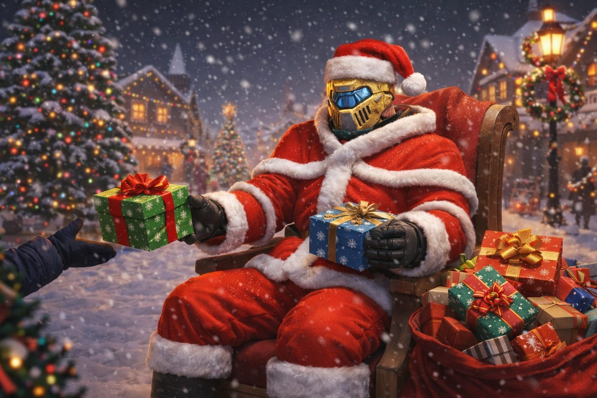
In Agorà tutti questi annunci sono finiti in tarallucci e vino. Ifrid silenzioso
ha speso 20 mele per fotocopiare i suoi risultati e affiggerli per tutte le strade,
insieme alla distribuzione di un altro insolito annuncio [continua più avanti]. Per
questi risultati provvisori, corre una aria diversa fra i Leaders. Ai cancelli delle
dimore di Sangiarno, Lorath, Bucinor, Montarcos, Levania, Malthor, Pennarya, Gicontra
vengono affissi i risultati dei Leaders. Messaggeri portano i risultati ai loro padroni.
Sileziosi consultato i risultati. Bastione, Pericolo, Aquila e Valore vengono classificate.
“Ci rifaremo” esclama Copter guardando i risultati e i suoi fedelissimi Sootz and Flying WC.
A Montarcos e a Pennarya si valuta nuove strategie per riuscire a distaccare l’una dall’altra.
In the Agora all these announcements ended in wine and small talk. A silent Ifrid spent twenty apples photocopying his results and putting them up on every street, alongside the distribution of another unusual notice [continues below]. Because of these provisional results, a different mood runs through the Leaders. At the gates of the residences of Sangiarno, Lorath, Bucinor, Montarcos, Levania, Malthor, Pennarya and Gicontra, the Leaders' results are posted. Messengers carry the results to their masters. They consult them in silence. Bastione, Pericolo, Aquila and Valore are ranked. "We'll make up for it", Copter declares, looking at the results and at his loyal Sootz and Flying WC. At Montarcos and Pennarya new strategies are weighed up to try to pull clear of one another.
A Sangiarno, gran festa con Valore che vede provvisoriamente la prima posizione.
Noble imbastisce una festa improvvisata: birra a volontà. Stokes riesce ad unirsi
(non avendo mai giocato con Valore) solo per ubriacarsi a merda. Alla festa si uniscono
pure Karmic che ha partecipato a molte partite di Valore, e Colt per congratularsi (falsamente)
che al suo arrivo viene ancora una volta offeso da tutti per la sua Gilda immeritata....
sebbene Cobra non si sia nemmeno classificata. Karmic si avvicina al bancone dove trova
Stokes completamente andato dall’alcool (la serata è soltanto iniziata da 15 minuti)
che cerca con il suo sguardo il barista per una nuova bevuta. La sua faccia è stampata
sul bancone, il barista non arriverà mai. Karmic guarda Stokes in condizioni pietose ma
ha il ricordo delle loro partite epiche passate. “Guarda che adesso il campionato si fa serio
ci sarai al mio fianco?”. Stokes riesce solo a rispondere parole senza senso fra le quali
“Hyrox 2026?” e Karmic è costretto a lasciare la festa innervosito prima di riempirlo
di botte. Colt si avvicina a Noble e fra le chiacchere viene mostrato la campagna marketing
di Cobra mai avviata. Parliamoci chiaro, Cobra non aveva gli stessi danari di Bastione per il
marketing. La campagna fatta con Windows 95 non poteva compete con quella Gen-AI di Bastione,
ma aveva un suo appeal retro. Sfogliando le slides, Colt raccontava che aveva pagato un mercenario
amico di lunga data, fuori dal tempo, che sarebbe dovuto unirsi a Cobra. Ma all’ultimo,
questo mercenario fu inseguito da una banda di cinesi incazzati per un inglese mal scritto
e non riuscì a presentarsi allo scontro. Mentre Colt sfogliava le slides, prometteva
a Noble e a se stesso il ritorno di questo mercenario un giorno (anche perchè aveva
speso delle mele che non sarebbero più tornate). E questo mercenario avrebbe portato
gloria a Cobra. Noble era brillo e ascoltando mezze parole di Colt. Lo lascia fantasticare
sul mercenario e si reca dall’ennesimo carico di birra in arrivo. “Vai vai lasciatelo qui
che Stokes ha finito altri 5L da solo”. Mentre Noble paga il viandante che ha portato il
carico di birra si accorge di conoscerlo. Anche lui una volta era un mercenario di guerra
ma giocava su altre piattaforme (come la Playstation di merda). Ad ogni modo porge i saluti
invitandolo ad unirsi al Campionato. Noble lo invita “Guarda che ci si diverte, basta un Xbox
o un PC poi il gioco è pure gratis... Xbox penso con 100 mele te la puoi cav...” ma
viene interrotto “Ma che Xbox!! Ho un PC pagato trilioni di mele cazzo uso quello...”
Conversazione viene lasciata a metà perchè Noble non può fare a meno
di notare Stokes con altre 5 bottiglie in mano sfilate dall’ultimo carico appena arrivato “Bastaaaa”.
Preso Stokes per un orecchio, si rigira verso il viandante ma aveva appena lasciato
le porte della dimora di Valore scomparendo nel deserto di Sangiarno.
At Sangiarno, a great celebration for Valore, provisionally in first place. Noble throws together an impromptu party: beer for everyone. Stokes manages to join in (having never played with Valore) purely to get hammered. Also at the party are Karmic, who has played in many Valore matches, and Colt, to offer his (insincere) congratulations - and who on arrival is once again insulted by everyone over his undeserved Guild... even though Cobra didn't rank at all. Karmic goes over to the bar and finds Stokes completely gone on drink (the evening is only fifteen minutes old), scanning the room for the barman and another round. His face is planted on the bar; the barman is never coming. Karmic looks at Stokes in a pitiful state, but remembers their epic matches of old. "Listen, the championship gets serious now - will you be at my side?". All Stokes can manage in reply is nonsense, including "Hyrox 2026?", and Karmic is forced to leave the party in irritation before he beats him senseless. Colt goes over to Noble and, in among the chatter, shows him Cobra's never-launched marketing campaign. Let's be honest, Cobra didn't have Bastione's money for marketing. A campaign made in Windows 95 couldn't compete with Bastione's Gen-AI one, but it had a certain retro appeal. Flicking through the slides, Colt explained that he had paid a long-standing mercenary friend, out of time, who was supposed to join Cobra. But at the last minute this mercenary was chased by a gang of Chinese players furious about some badly written English and never made it to the fight. As he flicked through the slides, Colt promised Noble and himself that this mercenary would return one day (not least because he had spent apples that were never coming back). And that mercenary would bring glory to Cobra. Noble was tipsy and only catching half of Colt's words. He leaves him to daydream about the mercenary and heads over to yet another beer delivery. "Go on, go on, leave it here, Stokes has finished another five litres on his own". As Noble pays the traveller who brought the beer, he realises he knows him. He too was once a war mercenary, but he played on other platforms (like that rubbish PlayStation). Either way, Noble greets him and invites him to join the Championship. "Look, it's good fun, all you need is an Xbox or a PC, and the game is free anyway... an Xbox, I reckon, for a hundred apples you can get by...", but he is interrupted: "Xbox my eye!! I've got a PC that cost trillions of apples, I'm using that...". The conversation is left half finished because Noble can't help noticing Stokes with another five bottles in his hands, lifted from the delivery that has only just arrived. "Enouuugh". Grabbing Stokes by the ear, he turns back to the traveller - who had just walked out of Valore's gates and vanished into the Sangiarno desert.
Altrove, le altre Gilde leggono ancora attentamente i motivi per non essere state
classificate mentre a Gicontra.....arriva un secondo messaggero... con un altro annuncio.
Elsewhere, the other Guilds are still reading carefully through the reasons they weren't ranked, while at Gicontra..... a second messenger arrives... with another notice.
No. #1
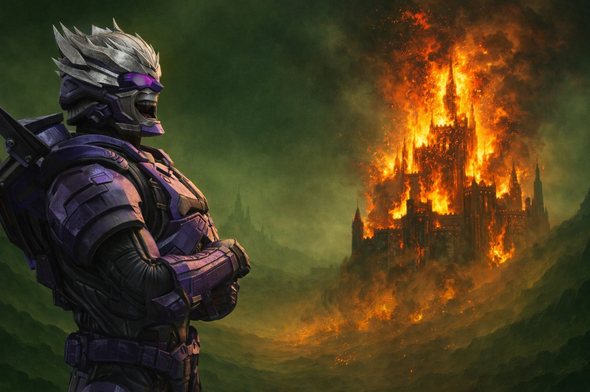
23 Dicembre 2025, Giorno. Una Fake News. A Gicontra il messaggero “Padrone guardaaaa”,
SensibleSwine osserva pietrificato il secondo annuncio. Una fake news creata da Ifrid
e stampata per le strade, distribuita a tutte le Gilde per piazzare un pò di caos
qua e là. L’annuncio dice “Swine è finalmente rientrato nella sua dimora e
invita” in caratteri cubitali “a sue spese” continua “mercenari e leaders di ogni Gilda
per un ritrovo a Gicontra, pizza fatta in casa. Dimenticatevi di Bastione e della proposta
del ritrovo natalizio a Gingéria”. Swine non sa che fare, a parte uccidere Ifrid.
Non è sicuro che sia la cosa migliore sia dire a tutti “uno scherzo di Ifrid”.
Qualcuno potrebbe prenderla come debolezza di Ade e portarla a diventare lo scherno di tutti.
Mentre pensa, arriva una lettera di Tigrozzo con scritto “margherita per me se non è
troppo tardi”. E poi una altra di Karmic “salamino, porcini e insalata iceberg”.
E ancora una di Glimpse “aglione come la fa Bibobio” (ancora non pervenuto al campionato).
La voce si è sparsa. La giornata scorre. Swine riceve una lettera dopo l’altra.
È alle strette con tempo e idee. In un momento temporaneo di follia arriva ad una
conclusione.
23 December 2025, daytime. A Fake News. At Gicontra, the messenger: "master, loook". SensibleSwine stares, petrified, at the second notice. A piece of fake news created by Ifrid and printed around the streets, distributed to every Guild to sow a bit of chaos here and there. The notice reads "Swine has finally returned to his residence and invites" - in enormous letters - "at his own expense" - it goes on - "mercenaries and leaders of every Guild to a gathering at Gicontra, home-made pizza. Forget Bastione and the proposed Christmas gathering at Gingeria". Swine doesn't know what to do, beyond killing Ifrid. He isn't sure that telling everyone "it's a prank by Ifrid" is the best move either. Someone might read it as weakness on Ade's part and turn it into a running joke. While he thinks, a letter arrives from Tigrozzo reading "margherita for me if it isn't too late". And then another from Karmic: "salami, porcini and iceberg lettuce". And another from Glimpse: "garlic one, the way Bibobio makes it" (still not signed up to the championship). Word has spread. The day goes by. Swine receives one letter after another. He is cornered on both time and ideas. In a temporary moment of madness he reaches a conclusion.
“Non possono fare una cena qui, se ‘qui’ non esiste”. Afferra un mercenario
e lo scaraventa nella foresta vicina “portami della legna per il forno”. La sera arriva.
La legna è stata raccolta, ma Swine la ha distribuita tutta intorno alla sua dimora.
I mercenari sono confusi ma non preoccupati, non ancora. Non è la prima volta che Swine
fa azioni letteralmente strane e pensavano che volesse cucinare le pizze all’aperto. Insieme
alla legna, tanta paglia. Swine impugna una torcia di fuoco e i mercenari non fanno in tempo
a chiedere “Signore a cosa serve la paglia insieme alla legna..” che Swine getta la torcia
nella paglia dando fuoco letteralmente a tutto. Alla legna, alla paglia, alla dimora di Ade.
I mercenari sono pietrificati, increduli. Alcuni svengono, altri vomitano. Mercenari
terrorizzati non riescono a parlare, non capiscono e non riescono a domandare niente a Swine,
preoccupati di una possibile altra azione “smodata”. Dietro la fila di mercenari che guarda
letteralmente andare a fuoco la loro dimora, di Ade. In lontananza arrivano tutte le Gilde per
la cena a base di pizza. Guardando le fiamme che divampano alcuni mercenari con l’acquolina in bocca
“si fa all’aperto, romantico!” ma man mano che tutti si avvicinano, si ritrovano l’intero esercito
di Ade fuori dalla dimora in fiamme. “Che è successo???” fra le grida “E le pizze????”
nessuna risposta, ma Swine in false lacrime si avvicina agli invitati e dice “purtroppo un
incendio a distrutto la dimora, siamo dispiaciuti”. Accorrono tutti ad aiutare a spegnere
l’incendio, fino a spegnere l’ultima fiamma. Bastione non avendo cancellato la prenotazione
a Gingéria propone di spostare la cena come da programma al ristorante di pesce.
A Swine e ad Ade come consolazione, la cena verrà pagate – posticipati i lavori per
rimettere in piedi la dimora di Ade. Mentre tutti si rimettono in marcia verso il ristorante,
fra i mercenari di Ade sorgono i primi dubbi sulla leadership a caso di Swine e sulle sue azioni
completamente sprovvedute. Swine invece, nelle ultime file, posa il suo sguardo di un attento
ma confuso Ifrid. La faccia di Swine scopre un piccolo sorriso e sussurra “non ce l’hai fatta
coglione”. Mentre Ifrid pensò “questo è pazzo”.
"They can't hold a dinner here if 'here' doesn't exist". He grabs a mercenary and hurls him into the nearby forest: "bring me wood for the oven". Evening comes. The wood has been gathered, but Swine has spread all of it around his residence. The mercenaries are confused but not worried, not yet. It isn't the first time Swine has done something literally strange, and they assumed he wanted to cook the pizzas outdoors. Along with the wood, plenty of straw. Swine takes up a burning torch and the mercenaries don't get the chance to ask "sir, what's the straw for alongside the wood.." before Swine throws the torch into the straw, setting fire to quite literally everything. To the wood, to the straw, to Ade's residence. The mercenaries are petrified, incredulous. Some faint, others are sick. Terrified mercenaries can't speak, don't understand and can't ask Swine anything, worried about another "unrestrained" act. Behind the line of mercenaries watching their residence quite literally burn - Ade's residence. In the distance every Guild is arriving for the pizza dinner. Seeing the flames leap up, some mercenaries lick their lips: "outdoors, how romantic!". But as they get closer they find the entire Ade army standing outside the burning residence. "What happened???", amid cries of "and the pizzas????". No answer - but Swine, in false tears, approaches the guests and says "unfortunately a fire has destroyed the residence, we're very sorry". Everyone rushes to help put the fire out, until the last flame is dead. Bastione, not having cancelled the booking at Gingeria, proposes moving the dinner to the fish restaurant as originally planned. By way of consolation for Swine and Ade the dinner will be paid for - and the work to rebuild Ade's residence postponed. As everyone sets off for the restaurant, the first doubts about Swine's haphazard leadership and his completely reckless actions begin to surface among Ade's mercenaries. Swine, meanwhile, in the back rows, rests his gaze on an attentive but confused Ifrid. Swine's face reveals a small smile and he whispers "you didn't manage it, you idiot". While Ifrid thought "this man is mad".
No. #1
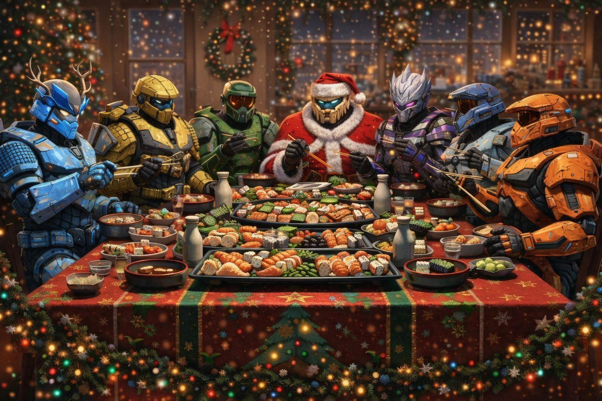
23 Dicembre 2025, Notte. La Cena (non a base di pizza). A Gingéria, una grande tavolata
accoglie le Gilde che siedono le une di fronte alle altre senza (apparente) sfida. Come usanza,
l’intero menù viene ordinato 2 volte. E come usanza, Drius non avrà idea di cosa ha ordinato,
saranno ancora una volta gli altri a indicarglielo all’arrivo del cibo (e lui a negare di averlo ordinato).
23 December 2025, night. The Dinner (not a pizza one). At Gingeria, one long table welcomes the Guilds, seated facing each other with no (apparent) hostility. As is customary, the entire menu is ordered twice. And as is customary, Drius will have no idea what he ordered; once again it will be up to the others to point it out when the food arrives (and to him to deny ordering it).
Mercenari e leaders si narrano a vicenda storie passate e viaggi nel multiverso della forgia.
In particolare, ad un lato della tavolata, la conversazione si è incentrata su un argomento bizzarro.
Appena Stokes concluse il suo racconto riguardo al fallimento nell’’ottenere una carta verde
(oggetto prezioso nel multiverso), la conversazione si incentra su un rituale particolare.
Esistono luoghi nel multiverso della forgia dove sconti al supermercato venivano anticipati
con..l’ecografia scrotale. Un rituale che poteva pure avere grande vantaggio nel prevedere
meteo, febbre e tanto altro. Per esempio usato pure da guerrieri per predire esiti di battaglie
non ancora avvenute. Un pò come la time stone di Avengers, solo che stavolta le stone erano due
e dovevano essere palpeggiate bene. Mercenari si avvicinano al lato del tavolo per ascoltare
meglio questo rituale. “…e me le ha prese come due sfere di cristallo” continua Stokes “faceva
male, ma ho capito i punti deboli di Puffo in quella partita, solo così gli sono spuntato alle
sue spalle”. Glimpse e Ifrid sono letteralmente assuefatti da questa storia incredibile.
Prendono appunti come studenti e altri si uniscono a loro. Più avanti al tavolo un Karmic sta
raccontando la storia della nascita di Sciabola a Clavuss che in silenzio ascolta attentamente.
Questa interazione passiva di Clavuss confonde Karmic che conclude la depressione di Clavuss e
una sua infinita tristezza Leopardiana.
Mercenaries and leaders swap stories of the past and of journeys through the forge multiverse. At one end of the table in particular, the conversation has settled on a bizarre subject. As soon as Stokes finished his account of failing to get a green card (a precious object in the multiverse), the talk turns to a particular ritual. There are places in the forge multiverse where supermarket discounts were foretold by... a scrotal ultrasound. A ritual that could also be a great advantage in predicting weather, fever and much else. Used, for instance, by warriors to foresee the outcome of battles not yet fought. Rather like the Time Stone in Avengers, except this time there were two stones and they had to be properly handled. Mercenaries move down the table to hear more about this ritual. "...and he took hold of them like two crystal balls", Stokes continues, "it hurt, but I understood Puffo's weak points in that match, and that's the only reason I came up behind him". Glimpse and Ifrid are quite literally spellbound by this incredible story. They take notes like students, and others join them. Further up the table, Karmic is telling the story of Sciabola's founding to Clavuss, who listens attentively in silence. Clavuss's passive engagement confuses Karmic, who concludes that Clavuss is depressed and afflicted by an infinite Leopardian sadness.
Non bastò il “Ma ti sto ascoltando dio santo” di Clavuss
a far cambiare idea a Karmic che si volta di spalle e si unisce alla conversazione del campionato
con Noble, Swine, Tigrozzo e Colt in piena discussione. Si parla di alcuni momenti epici passati
insieme e del futuro del Campionato. Le partite si faranno avvincenti e molto più dure da ora in
poi. Molti si voglio accaparrare i mercenari migliori, allo stesso tempo alcuni mercenari
cominciano a dichiarare le loro preferenze. Tigrozzo “io oramai gioco per Pericolo!!”, a Swine
scende una lacrimuccia, poi “Io con Ade non ci gioco più” esordisce Pino, a Swine scende una...
aspetta un secondo. Pino non ha mai giocato per Ade, e non ci vorrà mai giocare. Notizia fantastica,
2 bottiglie di champagne vengono ordinate. Mentre Karmic ha un piano tutto suo per prendersi i
mercenari migliori. La Scroll (non Rocco) Academy. Un piccolo avamposto nelle terre di Bucinor
dove Mercenari potranno apprendere skills da leaders per avere “una marcia in più”. C’è una
clausola in questo addestramento. L’iscrizione comporta l’obbligatoria partecipazione ad un
numero non troppo definito di partite con Sciabola (il notaio di sciabola non è mai stato il
loro pezzo forte). Karmic si strofina le mani slinguazzando perché le iscrizioni sono andate
a ruba proprio 24h fa. La combo delle pagelle di risultati provvisori e il confronto in agorà
di molti mercenari ha permesso a Karmic di navigare questo sentimento di incertezza e far firmare
almeno ad Ifrid qualche allenamento. “Boh senti io mi so iscritto poi si vedrà...
lo sapevi c'era la scivolata in sto gioco?” disse Ifrid.
Clavuss's "I AM listening, for God's sake" wasn't enough to change Karmic's mind; he turns his back and joins the championship conversation with Noble, Swine, Tigrozzo and Colt in full flow. They talk about some epic past moments together and about the Championship's future. The matches will get gripping and much harder from here on. Many want to snap up the best mercenaries, and at the same time some mercenaries are starting to declare their preferences. Tigrozzo: "I play for Pericolo now!!" - a small tear rolls down Swine's cheek. Then "I'm not playing with Ade any more", declares Pino, and a tear rolls down Swine's... hang on a second. Pino has never played for Ade, and never will want to. Wonderful news - two bottles of champagne are ordered. Meanwhile Karmic has a plan of his own for landing the best mercenaries. The Scroll (not Rocco) Academy. A small outpost in the lands of Bucinor where mercenaries can learn skills from leaders and gain "an extra gear". There is a clause in this training. Enrolment carries a compulsory commitment to a not-too-clearly-defined number of matches with Sciabola (Sciabola's notary was never their strong suit). Karmic rubs his hands and licks his lips, because enrolments sold out just 24 hours ago. The combination of the provisional score reports and the comparing of notes among many mercenaries in the Agora let Karmic navigate this mood of uncertainty and get at least Ifrid to sign up for some training. "Look, I signed up, we'll see how it goes... did you know there's a slide in this game?" said Ifrid.
Parlando di partite impegnative, si guarda ad una guerra futura dove Puffo e Drius dovranno
affrontare Swine e Karmic. Mentre Swine in silenzio mangia la cena offerta (e degusta lo champagne),
Tigrozzo, oramai amante “del Pericolo”, entra a gamba tesa nella conversazione indicando Puffo come
“best Spartan ever”. Gli animi si incendiano, “é solo un camper!!”, altri deviano il discorso
“no quello é Colt”, altri prendono tutt’altra direzione offendendo Drius “torna a giocare a
contrattacco 2 pivello”, ma Drius é ipnotizzato dal suo piatto del quale non ne ha idea di
cosa sia e se sia stato lui a ordinarlo. Volano sedie, pugnali, giavellotti e qualche gallina.
Folla intorno al tavolo viene divisa a stento fino a che altro cibo arriva, e tornato tutti a mangiare beatamente.
Speaking of demanding matches, they look ahead to a future war where Puffo and Drius will have to face Swine and Karmic. While Swine quietly eats the dinner he has been treated to (and savours the champagne), Tigrozzo - by now a lover "of Pericolo" - comes in studs-up, naming Puffo "best Spartan ever". Tempers flare: "he's just a camper!!", others redirect it, "no, that's Colt", and others go off in an entirely different direction, insulting Drius, "go back to playing Counter-Strike 2, rookie" - but Drius is hypnotised by his plate, having no idea what it is or whether he ordered it. Chairs, daggers, javelins and the odd chicken go flying. The crowd around the table is separated with difficulty until more food arrives, and everyone goes back to eating happily.
No. #1
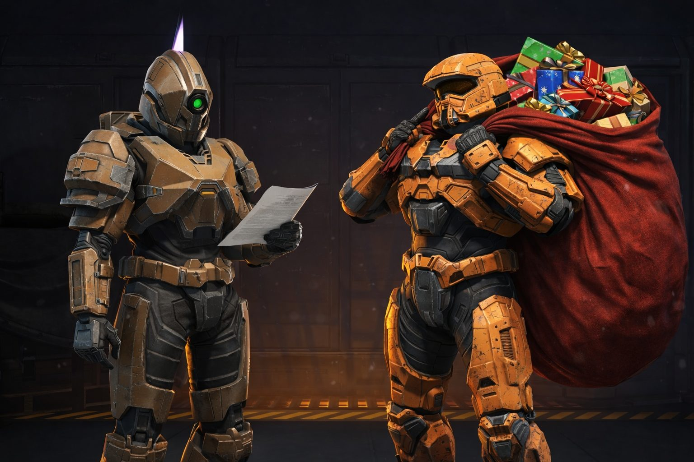
Una cena difficile. Non é sempre stato facile mettere tutte le Gilde allo stesso tavolo,
tantomeno questa volta. Sebbene ci sia pure Bastione al tavolo, manca il suo leader principale:
Hernicopter. Il quale invia una lettera al ristorante chiedendo di dire al tavolo delle Gilde
di attenderlo fuori nel parcheggio. Finita la cena, le Gilde si avviano al luogo prestabilito,
perfino Flying WC di Bastione non ha capito le intenzioni di Copter (ma almeno WC si era presentato alla cena).
A difficult dinner. It has never been easy getting all the Guilds around the same table, least of all this time. Although Bastione is at the table too, its main leader is missing: Hernicopter. He sends a letter to the restaurant asking that the Guilds' table be told to wait for him outside in the car park. Dinner over, the Guilds head to the agreed spot - even Bastione's own Flying WC hasn't understood Copter's intentions (though at least WC turned up to the dinner).
Una volta che tutti gli arrivarono al parcheggio, Copter spunta da dietro un cespuglio come
se avesse passato tutta la sera li. “Allora adesso faremo un gioco” prende alla sprovvista un
pò tutti. “Prenderete un premio se indovinerete le filastrocche riadattate da me”.
Le Gilde si mettono a cerchio e molti si accorgono che c’è pure JoeMoo “oh e te?”. Non è ancora
entrato a far parte del campionato tantomeno di alcuna Gilda, ma ha sfruttato la massa di giocatori
per sedersi pure lui al tavolo e mangiare qualcosa. Il gioco inizia e Copter comincia “se ni mondo ci
fosse….” Facile questa, Tigrozzo prende il primo premio. E poi “Aaaaaeeeeeaaaaaaaooooeeeee”,
“ah ma é il Niccolò Calvi” interrompe Clavuss, premio pure per lui. Poi ancora “2 milioni di
euro cash mi devi dare….”, Karmic “Alessandro Orlando!!”. Insomma tutti riescono a prendere un
premio, tranne uno. Tranne JoeMoo. Copter sfodera filastrocche di riserva, ma alla trentesima
filastrocca (avendo finito la distribuzione dei premi per tutti alla undicesima)
si avvicina a JoeMoo e gli scaraventa il suo premio “Toh!!”.
Tutti questi premi perché? É una altra strategia di Marketing di Bastione ? Quale scopo
secondario voleva ottenere bastione? …tutte domande dello stesso Bastione Flying WC che non
ha capito le gesta del suo leader.
Once everyone reached the car park, Copter pops out from behind a bush as if he had spent the whole evening there. "Right, now we're going to play a game", catching pretty much everyone off guard. "You'll win a prize if you can guess the rhymes I've reworked". The Guilds form a circle and many notice that JoeMoo is there too: "oh, you as well?". He hasn't yet joined the championship, let alone any Guild, but he exploited the mass of players to get a seat at the table and eat something. The game begins and Copter starts: "if in this world there were...". Easy, this one - Tigrozzo takes the first prize. Then "Aaaaaeeeeeaaaaaaaooooeeeee", "ah, that's Niccolò Calvi" Clavuss interrupts - a prize for him too. Then "two million euros cash you owe me....", Karmic: "Alessandro Orlando!!". In short, everyone manages to win a prize. Except one. Except JoeMoo. Copter pulls out reserve rhymes, but at the thirtieth (having run out of prizes for everyone at the eleventh) he walks over to JoeMoo and hurls his own prize at him: "here!!". Why all these prizes? Is it another Bastione marketing strategy? What secondary goal was Bastione after? ... all questions from Bastione's own Flying WC, who hasn't understood his leader's actions.
La serata finisce esattamente come deve finire. Le Gilde si ritirano nei loro territori.
Stokes torna dal QuiviQuivi, seguito da alcuni mentre racconta a Ifrid di come portare le
scommesse ad un livello digitale chiamato “investimenti”. Karmic, Noble e Clavuss fanno visita
a Bibobio per consegnarli il premio di Bastione, e poi tutti a nanna. Finisce così, Il ritrovo Natalizio.
The evening ends exactly as it should. The Guilds withdraw to their own territories. Stokes goes back to the QuiviQuivi, followed by a few others, telling Ifrid how to take betting to a digital level called "investments". Karmic, Noble and Clavuss pay Bibobio a visit to hand over Bastione's prize, and then everyone off to bed. And so the Christmas gathering ends.
Side Quest: Notte del SolstizioSide Quest: Solstice Night
9 Dicembre 2025. Preambolo: la chiamata di Pericolo.
L’inverno si è espanso da Lorath, dimora di Valchiria,
ed ha invaso il multiverso e L’Agorà. Innevata, nasconde sul bianco
suolo gli ultimi volantini della campagna di marketing Bastione oramai mezzi consumati
dal tempo e dal gelo. Ci sono anche qualche biglietto del centro scommesse puntando sulla
vittoria di Bastione. Strappati, portano con sé rancore di molti.
Viandanti passeggiano ad una ora tarda del giorno, fra i quali, uno in particolare
venuto da Montarcos si ferma e raccoglie un volantino di bastione. Lo legge, sorride;
poi, lo lascia cadere a terra. Fu un gran giorno quello. Le suole piene di sangue nemico
lasciano sagome rosse in una distesa innevata bianco latte.
A passi decisi, si avvicina ad un muro di annunci. Sbiadito,
il grande poster di Bastione, affisso con la scritta “la migliore difesa è
l’attacco” occupa ancora gran parte del muro. La strana figura mette la mano
destra in tasca, estrae il suo annuncio. Nel gesto, il gomitolo di lana rossa
gli cade a terra. Con la mano sinistra invece estrae un lungo pugnale,
e con un colpo deciso, affigge il suo annuncio (decisamente di dimensioni più piccole
di quelle dell’annuncio di Bastione). L’annuncio dice “Side Quest di Percolo.
Unitevi per la Gloria.” Il tonfo del pugnale sul muro gela per qualche secondo i pochi
personaggi nell’Agorà che si girano verso il muro e riconoscono il viandante venuto da
Montarcor. È PuffoKiller. Comincia a nevicare, e PuffoKiller si avvia verso una locanda
in direzione di Gran Paradiso, per scaldarsi ed aspettare un mercenario che non rivedeva
da tanto tempo.
9 December 2025. Preamble: Pericolo's call. Winter has spread out from Lorath, Valchiria's seat, and swallowed the multiverse and the Agora. Under snow, the white ground hides the last flyers of Bastione's marketing campaign, by now half worn away by time and frost. There are also a few betting slips backing a Bastione win. Torn up, they carry the resentment of many. Travellers walk about at a late hour, and one in particular, come from Montarcos, stops and picks up a Bastione flyer. He reads it, smiles; then lets it fall. That was a great day. Soles caked in enemy blood leave red outlines across a milk-white expanse of snow. With decisive steps he approaches a noticeboard. Faded, Bastione's great poster - pinned up with the line "the best defence is attack" - still covers most of the board. The strange figure puts his right hand in his pocket and pulls out his own notice. In the movement, a ball of red wool falls to the ground. With his left hand, meanwhile, he draws a long dagger and, with one decisive blow, pins up his notice (distinctly smaller than Bastione's). The notice reads "Pericolo's Side Quest. Join for Glory." The thud of the dagger on the board freezes for a few seconds the handful of characters in the Agora, who turn towards it and recognise the traveller come from Montarcos. It is PuffoKiller. It begins to snow, and PuffoKiller heads for a tavern in the direction of Gran Paradiso, to warm up and wait for a mercenary he had not seen in a very long time.
Vicino all’Agorà, le porte di una locanda famosa chiamata QuiviQuivi
(deriva dal latino “lì”, quindi “LìLì”) si spalancano.
Esce post sbronza un mercenario del quale si era perso traccia da più di 255 giorni.
È Aerostokes. Voci d’Agorà narrano la sua presenza ininterrotta nella locanda per ben 255
giorni consecutivi...ma rimangono solo voci. Al collo ha le sue 20 medaglie di varie
competizioni miste fra prove di forza fisica e prove di alcolismo estremo nel tracannare
barili di birra. Un equilibrio che solo lui ha potuto raggiungere nel Multiverso.
Near the Agora, the doors of a famous tavern called QuiviQuivi (from the Latin for "there", hence "ThereThere") swing open. Out comes, freshly hung over, a mercenary who had not been seen for more than 255 days. It is Aerostokes. Agora gossip has it that he was in the tavern without a break for a full 255 consecutive days... but it remains gossip. Round his neck hang his twenty medals from various competitions, a mix of feats of physical strength and feats of extreme drinking, downing barrels of beer. A balance only he has managed to strike in the Multiverse.
L’ultima volta che apparve nell’Agorà fu quando affisse il suo solo ed unico annuncio
ad oggi che diceva: “Hyrox”. Solo una persona, tornando dal mercato del pesce pieno di
borse di cibo, si avvicinò per chiedere spiegazioni. Era KarmicScroll. E alla domanda
“cosa è Hyrox?”, Aerostokes rispose con una altra domanda “ci stai si o no?” . “Boh, si”
risposte Karmic, “apposto” sentenziò Stokes. Poi, sfilò dal portafoglio di
Karmic 120 mele, gli consegnò un plico di allenamento e scomparve. Karmic era stato
appena iscritto ad una competizione fisica. Fu proprio da quel giorno che Sciabola andò
in negativo con i bilanci della Gilda e divenne povera come la merda.
Nulla servì vincere Hyrox, in quanto fu Stokes a ritirare il premio di danaro
(gran parte sperperato al QuiviQuivi) senza condividerlo con Karmic. Ad oggi, da questo
Campionato, Karmic non sta recuperando le cifre perse di Sciabola.
The last time he appeared in the Agora was when he put up his one and only notice to date, which read: "Hyrox". Only one person, coming back from the fish market laden with bags of food, came over to ask what it meant. It was KarmicScroll. And to the question "what is Hyrox?", Aerostokes replied with another question: "are you in or not?". "Dunno, yes" Karmic answered. "Sorted" Stokes pronounced. Then he slipped 120 apples out of Karmic's wallet, handed him a training pack and disappeared. Karmic had just been signed up to a physical competition. It was from that day that Sciabola went into the red and became dirt poor. Winning Hyrox was no help, since it was Stokes who collected the prize money (most of it squandered at the QuiviQuivi) without sharing it with Karmic. To this day, through this Championship, Karmic has not recovered the sums Sciabola lost.
Stokes quindi era diventato famoso nelle peggiori locande del multiverso con le sue
20 medaglie e si fa largo nell’Agorà con la sua solita camminata barcollante
(da post sbornia) fino ad arrivare all’annuncio di Pericolo. “Mmmm” sospira.
“È un mercoledì quindi..” ma non riesce a finire la frase che grosse e grasse risate
invadono la piazza e molti distolgono l’attenzione da Stokes, girandosi verso quel suono
raccapricciante. È Swine. Ultimamente non risiede molto a Gicontra, passa molto tempo
intorno all’Agorà alla ricerca di gossip ancora caldo per deridere e far soffrire
mercenari e leaders di passaggio, all’apparenza un modo tutto suo per passare il tempo
ma perchè non risiede a Gicontra ultimamente? [risposta più avanti nel
racconto nell’Intermezzo] “Allora Stokes, che facciamo?? Saltiamo pure questo scontro??”
Rantola di risate. Stokes non lo ascolta, forse per la perdita d’udito dall’orecchio
destro a causa di gran quantità di alcool, si gira in una direzione non definita,
e si incammina allontanandosi. Swine si riempie di orgoglio per aver deriso l’ennesima persona
(che ancora una volta, non lo ha cagato di striscio) e si avvicina all’annuncio. Tira fuori
la sua penna d’avorio rubata, e comincia a scarabocchiare. “PuffoKiller” diventa “FuffaKiller”
e aggiunge “si ma contro chi???”. Se la ride una altra volta e si allontana pure lui.
So Stokes had become famous in the worst taverns of the multiverse for his twenty medals, and he pushes through the Agora with his usual staggering (post-hangover) walk until he reaches Pericolo's notice. "Mmmm" he sighs. "It's a Wednesday, so.." - but he doesn't get to finish the sentence before a great booming laugh fills the square and many turn away from Stokes towards that grating sound. It's Swine. Lately he doesn't spend much time at Gicontra; he passes most of it around the Agora hunting for fresh gossip to mock passing mercenaries and leaders with and make them suffer - apparently just his own way of passing the time, but why isn't he living at Gicontra lately? [answered later in the story, in the Interlude] "So, Stokes, what are we doing?? Skipping this fight as well??". A rattle of laughter. Stokes doesn't hear him - perhaps because of the hearing loss in his right ear caused by vast quantities of alcohol - turns in no particular direction and walks away. Swine swells with pride at having mocked yet another person (who once again didn't give him the time of day) and steps up to the notice. He pulls out his stolen ivory pen and starts scribbling. "PuffoKiller" becomes "FluffKiller" and he adds "yes, but against whom???". He laughs again and walks off too.
Qualche minuto dopo, vediamo Tigrozzo affrettarsi all’annuncio super incuriosito,
riconosce gli scarabocchi di Swine, e leggendo l’annuncio esclama “Nooooooo”.
Quel mercoledì, aveva già un impegno con il ministro dei trasporti del multiverso.
Nel muro degli annunci, si avvicina pure Sootz di Bastione e Deferent Skate. Guardano
sconsolati l’annuncio di Pericolo “ehh questo lo saltiamo purtroppo”.. ma Skate affigge
pure il suo. “Da 1 al 12 Gennaio 2026” scrive “porte aperte a casa Skate per festa non
stop con fiumi di birra” continua con ”Inoltre dispo per qualsiasi Guerra. DM for info”,
e conclude “P.S. Ovviamente tutto sempre di notte a partire dalle 23:54”.
Aveva già incontrato Stokes pochi minuti prima che alla notizia di fiumi di birra ha preso
ben due volantini di Skate dalla gioia. Sootz, torna a Malthor, dimora di Bastione,
dove lo attendono Hernicopter e Flying WC davanti a enormi mappe cartografiche del multiverso
(e nuove slides PPT in preparazione alla prossima campagna marketing). Mandano un messaggero
che confermerà l’assenza di Bastione per la Side Quest.
A few minutes later we see Tigrozzo hurrying to the notice, thoroughly intrigued; he recognises Swine's scribbles, and reading the notice exclaims "noooooo". That Wednesday he already had a commitment with the multiverse's transport minister. At the noticeboard, Bastione's Sootz and Deferent Skate arrive too. They look glumly at Pericolo's notice: "ah well, we'll have to skip this one" - but Skate puts up his own as well. "From 1 to 12 January 2026", he writes, "open house at Skate's for a non-stop party with rivers of beer", and continues "also available for any War. DM for info", and closes with "P.S. Obviously all of it at night, from 23:54 onwards". He had already run into Stokes a few minutes earlier, who at the news of rivers of beer took a full two of Skate's flyers out of sheer joy. Sootz returns to Malthor, Bastione's seat, where Hernicopter and Flying WC are waiting for him in front of enormous cartographic maps of the multiverse (and new PowerPoint slides in preparation for the next marketing campaign). They send a messenger to confirm Bastione's absence from the Side Quest.
Lontano dall’Agorà, un messaggero di Aquila, raggiunge Pennarya dove si trova fluttuante
nell’aria il leader Rambaudo. Intorno a lui, il paesaggio si plasma al suo volere,
strutture futuristiche si ergono dal suolo creando quello che potrebbe essere un nuovo
luogo di scontro . “Architetto!!” Esclama il messaggero “Pericolo ha annunciato una Side
Quest!!”. Ancora in silenzio e a occhi chiusi, Rambaudo, a 20m da terra, circondato da
oggetti metallici, sorride “Bene, finalmente si spara.”
Far from the Agora, an Aquila messenger reaches Pennarya, where leader Rambaudo hangs floating in the air. Around him the landscape moulds itself to his will, futuristic structures rising from the ground to create what might be a new battleground. "Architect!!" the messenger calls, "Pericolo has announced a Side Quest!!". Still silent and with his eyes closed, Rambaudo - twenty metres off the ground, surrounded by metal objects - smiles: "good, at last there's shooting to be done."
15 Dicembre 2025. Ultimi giorni. Tigrozzo viene chiamato dal ministro dei trasporti
“ho visto l’annuncio di Pericolo in Agorà” e continua “chi sono io per impedirti di
puntare alla gloria” conclude “vai e spacca i culi”. Tigrozzo, prende il primo treno
per Montarcos e spera di arrivare in orario, per le sfide di Pericolo.
15 December 2025. Final days. Tigrozzo is called by the transport minister: "I saw Pericolo's notice in the Agora", and he goes on, "who am I to stop you going for glory", concluding "go and kick some arse". Tigrozzo takes the first train to Montarcos and hopes to arrive on time for Pericolo's challenges.
Lontano dall’Agorà, a Bucinor, in TV passa un notiziario di Noble(BrassMan)News gasato
per la seconda stagione di Cose Strane e invita tutti a guardare il nuovo trailer.
Karmic, guardando la tv, vede una immagine che non voleva vedere e considera completamente
spoilerata l’intero finale di stagione...incluse automaticamente tutte le possibili
serie TV del 2026. Quindi, con aria sconfitta, tira fuori dalla sua tasca una fialetta
di vetro, si versa addosso del liquido, guardando i suoi mercenari esclama “questa é
benzina..” fanno a tempo a bloccargli le braccia prima che si dia fuoco. É già la terza
volta questo mese che tenta una azione di autodistruzione disperata. I giorni passano e
Sciabola deve trovare il modo per pagare le bollette di gas e acqua con il denaro che
non ha. Il dolore non finisce quando all’annuncio di NobleNews si sussegue (Ram)Baudo
Spotlight alzando i toni su NobleNews “Inutili come News, non spoilera nulla se guardate
le cose subito e non aspettate ogni morte di Papa”. A quel punto Karmic erutta di rabbia
e squarcia in due un suo mercenario "Ma che cazzo sta a di????".
Una altra ennesima perdita in bilancio per Sciabola.
Far from the Agora, at Bucinor, a Noble(BrassMan)News bulletin is on TV, hyped for the second season of Stranger Things and inviting everyone to watch the new trailer. Karmic, watching, sees an image he did not want to see and considers the entire season finale completely spoiled... including, automatically, every possible TV series of 2026. So, with the air of a beaten man, he pulls a small glass vial from his pocket, pours the liquid over himself and, looking at his mercenaries, announces "this is petrol..". They manage to pin his arms just in time to stop him setting himself alight. That's the third desperate act of self-destruction he has attempted this month. The days go by and Sciabola has to find a way to pay the gas and water bills with money it doesn't have. The pain doesn't end there: after the NobleNews announcement comes (Ram)Baudo Spotlight, raising the temperature on NobleNews - "useless as News, nothing gets spoiled if you watch things straight away instead of waiting for a blue moon". At which point Karmic erupts with rage and rips one of his own mercenaries in two: "what the hell is he on about????". Another loss on Sciabola's balance sheet.
Al seguire del giorno successivo, in Agorà nascono i primi rumors della Side Quest di
Pericolo dove mettono Ade al centro dei possibili nemici. Swine se la ride, come sempre.
Rumors che vengono silenziati da Puffo che viene visto camminare verso l’Agorà.
Al suo fianco, una figura che aveva lasciato il multiverso per ben 100 giorni. Tornato
da una lunga campagna di guerre moderne militari e di guerre con strani personaggi
danzanti caduti da un autobus alato. È Pennywise. Si avvicina, insieme a Puffo,
a passo lento con il suo nuovo telefono da millanta mele: “Heila” (telefono che gli ha
fatto perdere gli annunci ed è stato proprio Puffo a chiamarlo di persona
aspettandolo nella locanda vicino a Gran Paradiso). Quale Guerra sarà dichiarata?
Quale è la strategia di Pericolo? Quale ricompensa può dare Pericolo?
The following day, the first rumours of Pericolo's Side Quest surface in the Agora, putting Ade at the centre of the possible enemies. Swine laughs about it, as always. Rumours silenced by Puffo, who is seen walking towards the Agora. At his side, a figure who had left the multiverse for a full hundred days. Back from a long campaign of modern military wars and of wars with strange dancing characters dropped from a winged bus. It is Pennywise. He approaches alongside Puffo, walking slowly with his new phone that cost a fortune: "hey there" (a phone that made him miss the notices - it was Puffo who called him in person, waiting for him at the tavern near Gran Paradiso). Which War will be declared? What is Pericolo's strategy? What reward can Pericolo offer?
Preambolo Natalizio [Opzionale]: il ritrovo(?) tanto atteso. In quei giorni, in una taverna
vicino all’Agorà, si sono riuniti molti leaders principali e mercenari per
decidere le sorti del ritrovo natalizio. Guerre si ma anche caciara in compagnia.
Fra le varie Gilde, Bastione prende la parola sulla votazione del luogo. Nessuno dei
fedelissimi Bastione si presenterà per tempo alla Side Quest di Pericolo e aveva
dedicato più tempo ad scrutinare luoghi per la cena. A votazione, i luoghi
più osceni del Multiverso della Forgia erano stati proposti. A Montarcos, era
stato proposto “Londinium”. Accesa la discussione contro i proprietari orgogliosi del
cibo più buono della Forgia, vantandosi dei loro titoli medici e dietetici
(non riconosciuti letteralmente da nessuno). A Sangiarno, era stato proposto il
“Menchettorum”. Luogo dove la perdita di udito era garantita al valcare della soglia,
considerato “trendy” dai proprietari stessi (ma da nessun altro). Accanto a Gran Paradiso,
era stato proposto un luogo inalberato chiamato “Tassum”. Una locanda che avrebbe
improvvisato il cibo come sempre, famosi per aver cambiato il cuoco 8 volte in una
settimana. Grati furono i proprietari alla notizia che non sarebbero stati scelti per
il ritrovo. Fra le proposte, fu messa in tavola la possibilità di ospitare il
ritrovo nella dimora di una Gilda prescelta. A questo punto, il sangue di Swine si
gelò e cominciò a sudare freddo. La sua dimora a Gicontra, villa estesa
con giardini e piante tropicali, avrebbe potuto ospitatare tutti. C’era solo un problema.
Swine, da una settimana, si era chiuso fuori dalla sua dimora, lasciando le chiavi al
suo interno. Da giorni oramai quindi stava a zonzo in Agorà a pedinare mercenari
e leaders per passare il tempo, mentre i suo mercenari cercavano un modo per far
irruzione nella dimora a Gicontra e finalmente rientrare in casa. Con qualche bluff
Swine riesce a deviare la conversazione e puntare l’attenzione sugli ultimi due luoghi
rimasti per la decisione del ritrovo. Il famoso QuiviQuivi e Gingéria. Mentre il
primo avrebbe servito aclool a volontà (Stokes:“ Ahmen”) ma burger della dimensione
di una unghia (Ifrid:”Io voglio mangiare sia chiaro”), quest’ultimo, Gingéria,
era una locanda a mezza strada fra Montarcos e Sangiarno che offriva una varietà
di pesce fresco. Sebbene il dibattito ancora acceso, ogni Gilda aveva votato e Bastione
chiuse la votazione decretando il vincitore: Gingéria. Polemiche e risse si
riaccesero alla comunicazione di Bastione.....Sarà questo il luogo del ritrovo?
La votazione verrà riaperta?....
Christmas Preamble [optional]: the long-awaited gathering(?). In those days, in a tavern near the Agora, many principal leaders and mercenaries met to decide the fate of the Christmas gathering. Wars, yes, but also good company and noise. Among the various Guilds, Bastione takes the floor on the vote for the venue. None of Bastione's loyalists will turn up in time for Pericolo's Side Quest, and he had spent more time scouting places for dinner. At the vote, the most appalling places in the Forge Multiverse had been proposed. At Montarcos, "Londinium" had been proposed. A heated argument against owners proud of serving the best food in the Forge, boasting about their medical and dietary credentials (recognised by literally nobody). At Sangiarno, the "Menchettorum" had been proposed. A place where hearing loss was guaranteed the moment you crossed the threshold, considered "trendy" by its own owners (and by nobody else). Next to Gran Paradiso, a treeless place called "Tassum" had been proposed. A tavern that would improvise the food as always, famous for changing chef eight times in one week. The owners were grateful at the news that they wouldn't be chosen for the gathering. Among the proposals, the possibility of hosting the gathering at the residence of a chosen Guild was put on the table. At which point Swine's blood froze and he broke into a cold sweat. His residence at Gicontra, a sprawling villa with gardens and tropical plants, could have hosted everyone. There was only one problem. A week earlier, Swine had locked himself out of his own residence, leaving the keys inside. For days now he had been wandering the Agora tailing mercenaries and leaders to pass the time, while his mercenaries looked for a way to break into the Gicontra residence and finally get back inside. With a bit of bluffing Swine manages to steer the conversation away and focus attention on the last two remaining venues. The famous QuiviQuivi and Gingeria. While the first would serve unlimited alcohol (Stokes: "amen") but burgers the size of a fingernail (Ifrid: "I want to eat, just so we're clear"), the latter, Gingeria, was a tavern halfway between Montarcos and Sangiarno offering a variety of fresh fish. Though the debate still raged, every Guild had voted, and Bastione closed the vote and declared the winner: Gingeria. Objections and scuffles flared up again at Bastione's announcement..... Will this be the venue for the gathering? Will the vote be reopened?....
Intanto, il proprietario di Gingéria guarda dalla vetrina del suo ristorante in
direzione Agorà dove sente le grida e percepisce di essere stato scelto per il
ritrovo (forse). Ma si ricorda lucidamente l’ultima volta che le Gilde vennero a mangiare
da lui e una persona in particolare fu bannata a vita per la quantità di cibo che
riuscì a ingurgitare. Quella persona era KarmicScroll. Il proprietario, con occhi
socchiusi di rabbia, guardando il vuoto sussurra pensando a Karmic “fanculo panzone non
questa volta”, e di colpo un tuono fece saltare la corrente a Gingéria lasciandola
nel buio.
Meanwhile, the owner of Gingeria looks out of his restaurant window towards the Agora, hears the shouting and gathers that he has been chosen for the gathering (perhaps). But he remembers vividly the last time the Guilds came to eat at his place, and one person in particular who was banned for life for the sheer quantity of food he managed to put away. That person was KarmicScroll. The owner, eyes narrowed with anger, stares into space and whispers, thinking of Karmic, "forget it, fat man, not this time" - and all at once a thunderclap cut the power at Gingeria, leaving it in darkness.
17 Dicembre 2025. Una Notte Pericolosa. Il giorno tanto atteso, Puffo con un grido di battaglia
"Baudo, io ti sfido". Una volta compagni, ora messi a confronto. Baudo, padrone di Aquila,
accetta la sfida. Il duello inizierà a Notte fonda, in memoria di Skate.
I mercenari e altri leaders passano il tempo a scaraventarsi in aria su Rocket Race aspettando la notte
(btw Rocket Race sketch mode bellissimo!), ma a Malthor, qualcuno non riesce a stare tranquillo fra le mura.
È Hernicopter, che non riesce a prendere sonno. Capisce che la serata sarà epica,
e non riesce proprio a dormire con l'idea che non sarà presente. Una volontà,
un colpo di reni, si alza di scatto dal letto. In punta dei piedi passa dalla sala grande
alle spalle di Flying WC che, accanto al grande camino, davanti alla TV, sta ipnotizzato con un ennesimo
film di Steven Seagal. Copter tutt'oggi non si spiega come WC sia innamorato di quei film spazzatura.
Sootz dormiva beato che il giorno dopo c'è da lavorare (...al PPT marketing di Bastione).
17 December 2025. A Dangerous Night. The long-awaited day. Puffo, with a battle cry: "Baudo, I challenge you". Once team-mates, now set against each other. Baudo, master of Aquila, accepts the challenge. The duel will begin in the dead of night, in Skate's honour. The mercenaries and other leaders pass the time launching themselves into the air on Rocket Race while they wait for nightfall (btw Rocket Race, brilliant sketch mode!), but at Malthor, someone can't settle within his own walls. It's Hernicopter, who can't get to sleep. He realises the evening will be epic and simply can't sleep knowing he won't be there. A moment of resolve, a burst of effort, and he is up out of bed. On tiptoe he passes through the great hall behind Flying WC who, beside the great fireplace and in front of the TV, sits hypnotised by yet another Steven Seagal film. To this day Copter cannot explain WC's love of that rubbish. Sootz slept soundly, since there is work to do the next day (... on Bastione's marketing PowerPoint).
Copter si unisce a Rocket Race con gli altri "Hey Amiciii". In lontanza invece, riappare Aerostokes:
ha deciso finalmente di combattere. Ma c'é un problema. Non ha mai riempito i moduli di iscrizione
del Campionato. Scartoffie che lo bloccato per un bel quarto d'ora (= l'aggiornamento di Halo). A rallentarlo,
la sua conoscenza del Tedesco (poca) che lo confonde leggendo parole in italiano. Ci sono tutti, tranne il leader
di Pericolo e di Aquila. Riempite le scartoffie, Stokes si unisce esordendo "Sono venuto a fare il culo a Swine".
Swine, sorride "E sia". Evidente che le battute di Swine su Stokes in Agorà non sono state dimenticate.
Allo scoccare della mezzanotte, Puffo e Baudo con entrata trionfale, si uniscono allo scontro di Rocket Race.
"Eccomi", esclama Baudo, ma Puffo ha un altro tipo di entrata. Recita a memoria in Giapponese il discorso di Pain di Naruto
prima che spazzi via il Villaggio della Foglia. Cristallino il suo desiderio di vedere Aquila annichilito.
Alla fine della sua recita, mezzi mercenari si ritrovano con un occhio verso est
e uno verso ovest totalmente confusi "eh?". Altri che hanno capito la reference sono gasati. Il duello ha finalmente inizio.
Copter joins Rocket Race with the others: "hey friends". In the distance, meanwhile, Aerostokes reappears: he has finally decided to fight. But there is a problem. He never filled in the Championship registration forms. Paperwork that held him up for a good quarter of an hour (= the Halo update). Slowing him further, his knowledge of German (limited), which confuses him when reading Italian words. Everyone is there apart from the leaders of Pericolo and Aquila. Paperwork done, Stokes joins in, opening with "I've come to kick Swine's arse". Swine smiles: "so be it". Clearly Swine's jokes about Stokes in the Agora have not been forgotten. On the stroke of midnight, Puffo and Baudo make a triumphant entrance and join the Rocket Race contest. "Here I am", Baudo declares, but Puffo has a different sort of entrance. He recites from memory, in Japanese, Pain's speech from Naruto before he wipes out the Hidden Leaf Village. His desire to see Aquila annihilated could not be clearer. At the end of his performance half the mercenaries are left with one eye pointing east and the other west, thoroughly baffled: "eh?". Others who got the reference are delighted. The duel finally begins.
Puffo e Baudo scelgono come a calcetto i componenti della propria squadra. Stokes viene preso da Aquila, lasciando
Swine una unica scelta, unirsi a colui che ha deriso: FuffaKiller. Puffo gli da un calcio nel culo e lo mette in squadra.
Penny si unisce a Pericolo e Copter si unisce al fratello. Pino, che vede Copter in Aquila, riesce a farsi scegliere da Pericolo
perchè vuole dimostrare a Copter che non è più un cadetto. Tigrozzo con suo grande rammarico, giocherà
solo con Aquila ma userà questa occasione per far colpo su Puffo. Fra i tanti scelti, Ifrid, con tanto di schedine di
scommesse in mano, mentre sta cercando di fare gli ultimi calcoli, sente qualcosa. Un risveglio. Carta e penna cadono dalle sue mani,
ma non riesce a capire cosa sia perchè viene scelto prontamente da Pericolo. Nella rush del momento, Ifrid, si dimentica di indossare
il colore della Gilda, tipico mercenario sbadato.
Puffo and Baudo pick their team-mates like captains at five-a-side. Stokes is taken by Aquila, leaving Swine one option: joining the man he mocked, FluffKiller. Puffo gives him a kick up the backside and puts him on the team. Penny joins Pericolo and Copter joins his brother. Pino, seeing Copter in Aquila, manages to get himself picked by Pericolo because he wants to prove to Copter that he is no longer a cadet. Tigrozzo, much to his regret, will play only with Aquila, but will use the occasion to impress Puffo. Among the many picked is Ifrid, betting slips in hand, and while he is working out his final calculations he feels something. An awakening. Paper and pen fall from his hands, but he can't work out what it is, because he is promptly picked by Pericolo. In the rush of the moment Ifrid forgets to put on the Guild's colour - the classic scatterbrained mercenary.
Prima Partita, un remake di BlockFort su Halo: gungoose e gas a martello. Quad armati sfrecciano per la mappa disintegrandosi a vicenda.
Sembra una partita abbastanza leggera per Aquila e Pericolo, ma c'è un giocatore che la ha presa in modo hyper competitivo.
Pino's Carrot sfreccia con il suo Quad, accerchia qualsiasi nemico in angoli ciechi e letteralmente sfrutta la terza dimensione Z
per fare imboscate su Aquila. Pericolo sopreso, vince grazie a lui, Aquila viene sconfitta, e Copter guarda Pino: "Interessante".
First Match, a BlockFort remake in Halo: gungooses and the throttle pinned. Armed quads tear round the map disintegrating each other. It looks like a fairly light match for Aquila and Pericolo, but there is one player taking it hyper-competitively. Pino's Carrot rockets about on his quad, flanking every enemy through blind corners and quite literally exploiting the third dimension to ambush Aquila. Pericolo, taken by surprise, wins thanks to him; Aquila is beaten, and Copter looks at Pino: "interesting".
Seconda Partita, la modalità social di Pericolo: Cattura la Bandiera, doppia.
Puffo guarda SlickColt, arruolato in Pericolo, "mi raccomando Colt", risposta "cazzo vuoi scartina".
In questa partita, gli animi sono caldissimi. Così caldi, che l'eco della scorsa partita di Cobra si fa sentire.
Infatti, ricominciano a piovere offese contro Colt da dentro Pericolo "niente kills qui eh". La partita inizia con un susseguirsi di
presa di veicoli e armi potenziate. KarmicScroll (in Aquila) decide letteralmente di diventare invisibile per l'intera partita.
Non solo vocalmente, ma pure fisicamente. In venti minuti, farà esplodere cose, uccisioni a distanza, e altro ma verrà visto
soltanto qualche minuto. La partita evolve fino a che Ifrid sente di nuovo quel brivido. Qualcosa che percorre il suo corpo.
Non aveva mai sentito questa cosa su Halo prima d'ora. Si narra che fu proprio abilitare i 120fps a permettere questo evento.
Impugna il suo fucile d'assalto e sfreccia sulla mappa. Recupera la bandiera appena catturata e corre. Corre verso la base di Pericolo.
A quel punto, arriva tutto insieme. Uno shock elettrico in tutto il corpo trasforma il fisico di Ifrid che scatta verso la meta con la bandiera.
Alcuni di Pericolo si fermano a guardarlo. Sta succedendo, ha sbloccato l'ultra instinct. Quello che su Halo significa essere uno Spartan.
Ultra-Instinct Ifrid (o Ufrid) scivola con la bandiera in mano e piazza il primo punto per Pericolo. Continua la corsa mentre urla furioso e impugna
il suo fucile d'assalto. È letteralmente inarrestabile, la sua precisione passa dal solito 15% dove saparava al pavimento al 60%.
Stokes si piazza davanti a Ufrid, polverizzato. Karmic, decide di apparire per tredare la morte di Stokes. Polverizzato pure lui.
Ufrid ha fatto punto e una doppia. Le urla di gloria non potevano che concentrarsi sull'offendere Colt "vedi come si faaaa alloraaaa daiiii".
La partita continua. Aquila non si da per vinto, ma Colt sfodera una sua vecchia guardia: comincia a saltare come un ranocchio mentre spara. Paralizza
il morale di Clavuss che alla fine sbotta “madonna la smetti di saltare come una ranaaaa”.
Questo non scalfisce Stokes che, da tutta altra parte, senza scatto, sta percorrendo la distanza più lunga della mappa con la bandiera nemica in mano.
Ha letteralmente il tempo, mentre cammina, di mandare qualche selfie con la bandiera in mano a Swine. Il cellulare di Swine vibra ma non può risponde
impegnato in un bagno di sangue. Arrivato in base, Stokes fa punto, letteralmente senza aver subito danno per ben due minuti (tantissimo).
In Pericolo, intanto, Colt decide di rimettere in riga Ifrid e, lasciando perdere le kills per un secondo, con uno scatto prende la bandiera di Aquila
portata vicino in base e fa punto. Colt sorride a Ifrid. Alla fine, Pericolo vince per un punto.
Second Match, Pericolo's social mode: Capture the Flag, double. Puffo looks at SlickColt, drafted into Pericolo: "I'm counting on you, Colt". Reply: "what do you want, nobody". In this match tempers run very hot indeed. So hot that the echo of Cobra's last match makes itself heard. Indeed, insults start raining down on Colt from inside Pericolo: "no kills here, eh". The match begins with a succession of vehicle and power-weapon grabs. KarmicScroll (in Aquila) decides to become quite literally invisible for the entire match. Not only vocally but physically. Over twenty minutes he will blow things up, kill at range and more, but will only be seen for a few minutes. The match develops until Ifrid feels that shiver again. Something running through his body. He had never felt this on Halo before. It is said that enabling 120fps was precisely what made this possible. He grips his assault rifle and streaks across the map. He recovers the flag just captured and runs. Runs for Pericolo's base. At which point it all arrives at once. An electric shock through his whole body transforms Ifrid's physique as he sprints for the goal with the flag. Some of Pericolo stop to watch him. It's happening: he has unlocked ultra instinct. Which in Halo means being a Spartan. Ultra-Instinct Ifrid (or Ufrid) slides in with the flag in hand and puts the first point on the board for Pericolo. He carries on running, roaring furiously, assault rifle in hand. He is quite literally unstoppable; his accuracy goes from the usual 15% - shooting the floor - to 60%. Stokes plants himself in front of Ufrid: pulverised. Karmic decides to show himself to avenge Stokes's death. Pulverised too. Ufrid has a point and a double. The cries of glory could only settle on insulting Colt: "see how it's dooone, come oooon". The match goes on. Aquila doesn't give up, but Colt brings out one of his old tricks: he starts hopping like a frog while shooting. He paralyses Clavuss's morale, who eventually snaps "for God's sake, stop hopping about like a frooog". None of this bothers Stokes who, at the other end entirely, without sprint, is covering the longest distance on the map with the enemy flag in hand. He literally has time, while walking, to send Swine a few selfies with the flag. Swine's phone buzzes but he can't answer, busy in a bloodbath. Reaching base, Stokes scores, quite literally without taking damage for a full two minutes (an eternity). In Pericolo, meanwhile, Colt decides to put Ifrid back in his place and, forgetting about kills for a second, sprints to grab Aquila's flag carried near their base and scores. Colt smiles at Ifrid. In the end, Pericolo wins by one point.
No. #1
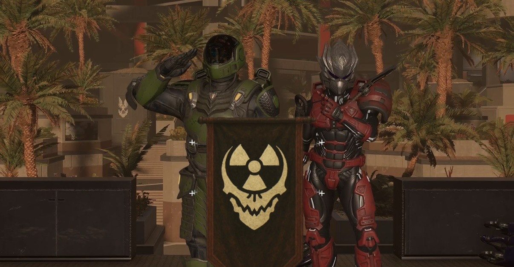
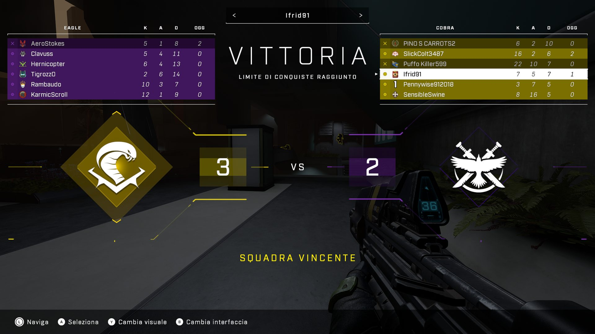
Tocca a Aquila. Mappa Halo 3, Valhalla e Massacro. Vuole vedere Pericolo perire sotto il piombo caldo. È il momento della riscossa.
La mappa si riempe di Wraith e dolore. Wartogh ronzano intorno a blindati pesanti in cerca di trovare punti deboli.
Copter non lascia il grilletto e comincia pian piano a bucare il Wraith di fronte a lui. Il guidatore del suo Warthog è stato decimato
e quindi si ritrova fermo davanti a questo grosso mostro rosso metallico. Guardando la morte in faccia, Copter salta dal Warthog oramai fermo
che esplode in mille pezzi. Impugna il fucile da cecchino e termina il lavoro. Copter VS Wraith: 1-0. Pessima la prestazione di Noble che in volo
per ore conclude poco e viene spazzato via da Karmic con lo Schidione. La partita viene dominata da Pericolo, ma Aquila non si da per vinta e
si lancia verso la vittoria con gli ultimi minuti mancancti. Sul finire della partita Clavuss che cerca di imitare Glimpse, è accucciato dietro una roccia
aspettando il momento giusto, ma viene solleticato da Noble con lo Shock Rifle. "Ma che è sto Frizzino??" esclama. Sta letteralmente rinominando tutte le armi
del gioco da Schidione l'Africano a ora il Frizzino.
Aquila's turn. Halo 3 map, Valhalla, and Slayer. He wants to see Pericolo perish under hot lead. Time for the fightback. The map fills with Wraiths and pain. Warthogs buzz around heavy armour looking for weak points. Copter doesn't let go of the trigger and slowly starts punching through the Wraith in front of him. His Warthog's driver has been picked off, so he finds himself stationary in front of this great red metal monster. Staring death in the face, Copter jumps from the now-motionless Warthog, which explodes into a thousand pieces. He picks up the sniper rifle and finishes the job. Copter vs Wraith: 1-0. A poor showing from Noble, who spends hours airborne and achieves little before being swept away by Karmic with the Skewer. The match is dominated by Pericolo, but Aquila doesn't give up and throws itself at victory in the closing minutes. Towards the end, Clavuss - trying to imitate Glimpse - crouches behind a rock waiting for the right moment, only to be tickled by Noble with the Shock Rifle. "What's this Fizzler??" he exclaims. He is quite literally renaming every weapon in the game, from the Skewer being "the African" to now the Fizzler.
No. #1
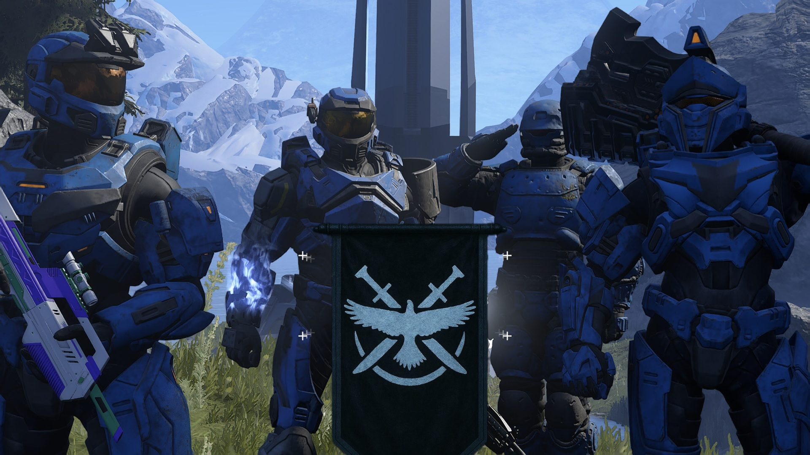
Ultima Partita. Aquila non gli resta che puntare al Pareggio. Copter deve abbandonare la sfida che il giorno seguente deve aiutare Sootz con il PPT per la prossima guerra
di Bastione. Baudo sbotta "eh vabbè domani mi sveglio prima io", e seguono altre voci "io mi sveglio fra 3h" e ancora "io non dormo mai". Copter
manda a fanculo tutti e lascia il duello. La scelta della partita ricade su Gran Paradiso: Total Control senza veicoli. Glimpse ci pensa un attimo:
"Copter sapeva della scelta e per paura di trovarmi con il martello ha lasciato la partita?" (Leggere Guerra: Fondatori).
Non è il solo ad abbandonare la partita, ma pure Swine riceve una bella notizia e lascia l'incontro. I suoi mercenari hanno finalmente
trovato il modo di rientrare nella dimora di Gicontra. Stasera Swine non dormirà sotto un ponte. Stokes ride vedendo la sua nemesi abbandonare la partita.
Last Match. Aquila's only remaining hope is a draw. Copter has to leave the contest because the next day he has to help Sootz with the PowerPoint for Bastione's next war. Baudo snaps "fine, I'll get up earlier tomorrow", followed by other voices: "I'm up in three hours", and "I never sleep". Copter tells everyone where to go and leaves the duel. The map picked is Gran Paradiso: Total Control, no vehicles. Glimpse thinks for a moment: "did Copter know about the pick and leave the match for fear of running into me with the hammer?" (see War: Founders). He isn't the only one to leave: Swine also gets some good news and quits the fight. His mercenaries have finally found a way back into the Gicontra residence. Tonight Swine won't be sleeping under a bridge. Stokes laughs watching his nemesis walk out of the match.
Puffo si prepara alla partita cominciando a cenare....con una pizza (sono le 23:00). Tipico atteggiamento da cicciobrufolo, che crea qualche dubbio sulla integrità
videoludica di Puffo. Ma non tutti ci fanno caso, atteggiamento insolito di Puffo, sarebbe sicuramente passato non inosservato se fosse stato Drius a fare lo stesso.
La partita non fa in tempo ad iniziare che Silente invisibile Noble con il bazooka si avvicina a centro mappa trovando Tom cecchino Baudo sulla Zona A puntando altrove.
“Sciocco da parte tua Baudo venire subito in centro mappa con il fucile di precisione sapendo che a due passi dall’altra parte hai forgiato bazooka e invisibilità”.
Baudo viene spazzato via. Poi, proprio come l'ultima volta, il primo punto viene fatto da una squadra quasi istantaneamente. Curioso.
Stavolta però, per una piccolissima manciata di secondi. Il punto di Pericolo lascia Aquila subito in svantaggio.
La partita continua molto bilanciata, zone vengono catturare di continuo. Glimpse, oramai, si è affezionato alla Zona B, in memoria di Copter.
È proprio lì che rievoca i ricordi di una scena epica mentre attende ancora una volta accucciato dietro un albero.
Ma sono solo ricordi, passa all'azione e mette a segno una tripla assicurandosi, ancora una volta, la Zona B.
Dall'altra parte, le grida di Baudo, oramai cirdonadato nella sua Zona A sul ponte dei forerunner, fanno sentire il cedimento del morale Aquila.
Tripla con spada di Noble su Aquila, Colt che utilizza il Martello Pneumatico su Pericolo, Pennywise trova ancora una volta l'arma più potente del gioco e spazza via
gli ultimi rimasti. Pericolo vince. Una amara sconfitta per Aquila.
Puffo gets ready for the match by starting his dinner.... with a pizza (it's 23:00). Classic spotty-lump behaviour, raising some doubts about Puffo's gaming integrity. But not everyone notices; unusual behaviour from Puffo would certainly not have gone unremarked had Drius done the same. The match barely begins before an invisible, Dumbledore-ish Noble with the rocket launcher moves to mid-map and finds sniper Baudo on Zone A, aiming elsewhere. "Foolish of you, Baudo, to come straight to mid-map with the sniper rifle knowing that two steps away on the other side you've forged a rocket launcher and cloaking". Baudo is swept away. Then, exactly like last time, the first point is scored by one team almost instantly. Curious. This time, though, by the smallest handful of seconds. Pericolo's point leaves Aquila immediately behind. The match stays very balanced, zones captured constantly. Glimpse, by now, has grown fond of Zone B, in Copter's memory. It is right there that he recalls an epic scene while waiting, once again, crouched behind a tree. But they are only memories; he moves to action and lands a triple, securing Zone B once again. On the other side, Baudo's shouting - by now surrounded in his Zone A on the Forerunner bridge - makes Aquila's morale audibly buckle. A triple with the sword from Noble on Aquila, Colt using the Gravity Hammer on Pericolo, Pennywise once again finding the most powerful weapon in the game and sweeping away the last survivors. Pericolo wins. A bitter defeat for Aquila.
La Guerra finisce. Una altra Side Quest mette alla prova Gilde con nuove composizioni di squadre, allena gli animi per le Guerre della Campagna Ufficiale.
The War ends. Another Side Quest tests the Guilds with new team compositions, and steels nerves for the Wars of the Official Campaign.
1 Dicembre 2025. Preambolo: un annuncio importante.
1 December 2025. Preamble: an important announcement.
Ore 8:00 di mattina, la forgia è invasa da volantini
"ore 14:00, annnuncio Bastione. Bastione Riemerge".
Mercenari speranzosi di enorme ricompensa, Leaders incuriositi, Valore Preoccupato.
Sembra che questo annuncio non sia stato proprio comunicato a i membri di Bastione, che costringono
Sootz a spostare una call aziendale dalle 14:00 alle 14:30, sfiora il licenziamento,
"Speriamo ne valga la pena" pensò. Ifrid invece comincia a stropicciarsi le mani.
Sono proprio queste le notizie che fanno oscillare le scommesse: emozioni, incertezze, annunci.
E questo brio porta Ifrid a fiondarsi ancora in pigiama al centro scommesse e ad aumentare la sua quota
"sul tonfo di Bastione".
Nella corsa sfrenata di Ifrid verso il centro scommesse, Glimpse incuriosito dalla possibilità
di vincere grosse somme di denaro, uscito da uno dei tanti Dangeon notturni allenandosi per la prossima sfida,
si mette a correre insieme ad Ifrid e alle sue risate isteriche di gioia:
diventano due bambini delle elementari che corrono per prendere il gelato.
I Due sfrecciano attraverso il Mercato di Bucinor per raggiungere il centro, lasciandosi alle spalle
una figura avvolta con un mantello che cammina in direzione opposta...
8:00 in the morning, and the forge is flooded with flyers: "14:00, Bastione announcement. Bastione Rises Again". Mercenaries hopeful of an enormous reward, Leaders intrigued, Valore worried. It seems this announcement wasn't actually communicated to Bastione's own members, who force Sootz to move a work call from 14:00 to 14:30, coming within an inch of being sacked. "Let's hope it's worth it", he thought. Ifrid, meanwhile, starts rubbing his hands. This is exactly the kind of news that moves the odds: emotion, uncertainty, announcements. And that thrill sends Ifrid racing to the betting shop, still in his pyjamas, to increase his stake "on Bastione falling flat". During Ifrid's headlong dash to the betting shop, Glimpse - intrigued by the chance of winning large sums, and just out of one of the many nightly dungeons where he trains for the next challenge - starts running alongside Ifrid and his hysterical laughter of delight: they become two primary-school children racing for an ice cream. The pair tear through the Bucinor Market to reach the shop, leaving behind them a cloaked figure walking in the opposite direction...
Ore 14:00. Bastione droppa quello che sarà la sua prima grande genialata di marketing
per il recruitamento di massa. Bastione, come i militari e i poliziotti,
regala il suo set di slides della campagna "Bastione Ti Aspetta"
(che include 10 goleador e 2 hotwheels per i nostalgici).
In questo plico viene descritta la gloria di Bastione negli anni (non ben definiti).
Il rate altissimo di vittorie, testimonianze dei fedelissimi come Flying WC e Sootz.
Accoglienza, Fratellanza, Difesa Inespugnabile e tante belle parole che ricevono un mix di reazioni.
Glimpse non se la beve, ride e raddopppia la sua scommessa seguendo Ifrid. Baudo è estasiato.
Swine è incuriosito, potrebbe trovare un carismatico alleato con grandi doti comunicative.
Sootz viene subito interrogato sulla veridicità della sua testimonianza, un rotto "Che ha scr..."
viene seguito da un fragrante "Tutto Vero!".
Mentre il messaggio di Colt non definisce bene quale sia il suo piano:
"sempre pronto a tradire", ma quale Gilda?
14:00. Bastione drops what will be its first great stroke of marketing genius for mass recruitment. Bastione, like the army and the police, gives away its slide deck for the "Bastione Awaits You" campaign (which includes ten football stickers and two Hot Wheels for the nostalgic). The pack sets out Bastione's glory over the (not clearly defined) years. The sky-high win rate, testimonials from loyalists like Flying WC and Sootz. Welcome, brotherhood, impregnable defence and plenty of fine words that draw a mixed reaction. Glimpse isn't buying it; he laughs and doubles his bet, following Ifrid. Baudo is enraptured. Swine is intrigued: he might have found a charismatic ally with strong communication skills. Sootz is immediately questioned about the truth of his testimonial - a strangled "what did he wri..." is followed by a resounding "all true!". Colt's message, meanwhile, doesn't make his plan especially clear: "always ready to betray" - but which Guild?
No. #1
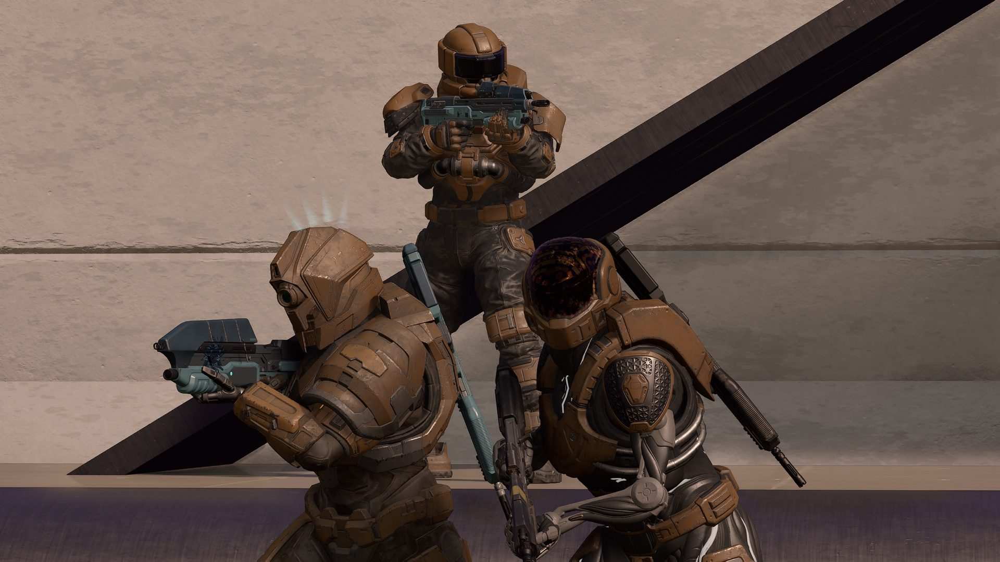
2 Dicembre 2025. Bastione di Copter contro Valore di Noble, una lunga intensa giornata.
L'inverno alle porte, un martedì che firma la fine del Primo Capitolo del Campionato.
2 December 2025. Copter's Bastione against Noble's Valore, a long and intense day. Winter at the door, a Tuesday that marks the end of the Championship's First Chapter.
Ore 10:00, il ritiro ufficiale di Ifrid dallo scontro, ma con l'augurio del tonfo di Bastione strappando in piazza
il plico della campagna marketing di Bastione.
Esplicita pure la scelta piazzata nel centro scommesse (chiama mele i succosi bigliettoni da 100 euro),
e sorge il dubbio fra i presenti che sia Ifrid stesso il proprietario di questo centro: un mistero.
Certezza invece la sua voglia di mettere zizzagna, come sempre.
A questo affronto, la pronta risposta di Copter che gli augura di prendersi un pene sul retro.
Forse quello di Aero, droppato più tardi nella chat, dalla lunghezza elefantesca.
10:00, Ifrid's official withdrawal from the fight, but with best wishes for Bastione falling flat as he tears up the marketing pack in the town square. He also spells out the bet he placed at the betting shop (he calls the juicy hundred-euro notes apples), and a suspicion arises among those present that Ifrid himself owns the place: a mystery. What is certain is his appetite for stirring trouble, as always. To this affront comes Copter's prompt reply, wishing him a penis up the back. Perhaps Aero's, dropped into the chat later, of elephantine proportions.
Il marketing di Bastione è arrivato fra le mani di Pino che squarcia l'Agora con il suo grido
di portare i suoi servigi a Copter. Segue un attento silenzio che non durò troppo.
Perchè Swine sfodera ancora caldo dalle sue tasche l'ultima edizione di "Cazzo che Schiappa",
una ingnobile rivista di paparazzi e gente poco raccomandabile che getta fango su Mercenari e Leaders
puntando il riflettore sulle loro partite peggiori. In prima pagina, a caratteri cubitali la rivista scrive
"Pino, il Reverse Champion" parla di una partita passata dove Pino è arrivato ultimo per ben 5 turni, aggiudicandosi
l'ultimo posto in classifica non solo finale ma pure cumulativo. Swine se la ride, e cerca complicità
nel suo seguace Skate che prende larghe distanze.
Bastione's marketing has reached Pino's hands, and he tears through the Agora with his cry that he will bring his services to Copter. An attentive silence follows, which did not last long. Because Swine pulls out of his pocket, still warm, the latest edition of "What a Loser", an ignoble magazine of paparazzi and disreputable types that slings mud at mercenaries and leaders by shining a light on their worst matches. On the front page, in enormous letters, the magazine writes "Pino, the Reverse Champion", about a past match where Pino came last for a full five rounds, securing last place not only in that match but cumulatively. Swine laughs about it and looks for complicity from his follower Skate, who keeps a wide berth.
Questo crea scompiglio nell'Agora, ma non influenza la decisione di Copter di dare a Pino
il titolo di "Cadetto" Bastione (..non ci allarghiamo troppo). Un leggero dissing fra Colt e Puffo
definisce la loro separazione per lo scontro.
Puffo si rende conto che dovrà unirsi a Noble. Estrae un fucile a canna mozza,
e si spara su un piede per sentire meno dolore,
"Ok, sono pronto" dice a denti stretti.
This causes a stir in the Agora, but it doesn't affect Copter's decision to give Pino the title of Bastione "Cadet" (... let's not get carried away). A light bit of dissing between Colt and Puffo settles their separation for the fight. Puffo realises he will have to join Noble. He pulls out a sawn-off shotgun and shoots himself in the foot so as to feel less pain. "Right, I'm ready", he says through gritted teeth.
No. #1
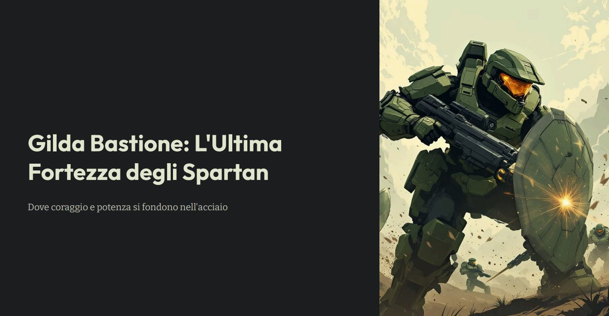
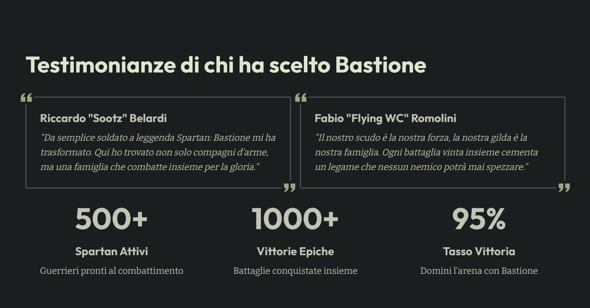
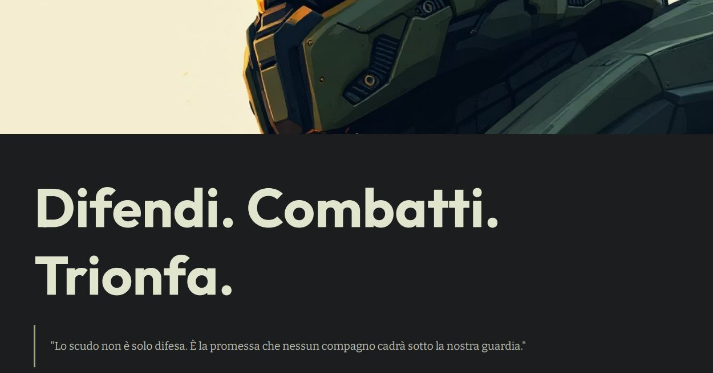
Lontano, dall'Agora, nel Mercato di Bucinor, a poche ore dallo scontro, alcune figure comprano nuovi arsenali.
La bancarella "Fartt" offre strani oggetti, fra cui una paperella gialla da vasca da bagno che
prende l'attenzione di Drius. "Questa", Drius non perde tempo a premere la paperella
che emette un suono irritante: perfetta. Raggiunge lo scontro soddisfattissimo pensando
che pure stasera flammerà molti se non con i colpi di fucile, a colpi di paperella
(il suono di quella paperella ancora riecheggia su Discord).
Alla stessa bancarella, si avvicina questa figura avvolta nel mantello e un oggetto in particolare prende la sua attenzione.
L'elmo di Achille. Lontano il passato di gloria su halo 3, i ricordi affiorano e tornano in vita
quando tocca il freddo curvo metallo.
La figura si toglie il mantello, è Karmic, che ha scelto questo arsenale sicuro che gli
darà la giusta motivazione per lo scontro.
"Sono 200 mele" dice il proprietario della bancarella. Karmic si gela, i ricordi svaniscono
perchè la Gilda Sciabola ad oggi è povera come la merda e non può pagare.
Con una azione fortuita, afferra l'elmo e scappa. Dalle grida delle bancarella "Fermateloooo",
Karmic risponde correndo "Vincerò e ti pagherò domani, promessoooo".
Far from the Agora, in the Bucinor Market, a few hours before the fight, some figures are buying new arsenals. The "Fartt" stall offers strange objects, among them a yellow bath-time rubber duck that catches Drius's eye. "This one". Drius wastes no time squeezing the duck, which emits an irritating noise: perfect. He reaches the fight thoroughly satisfied, thinking that tonight he'll wind plenty of people up, if not with rifle rounds then with duck squeaks (the sound of that duck still echoes around Discord). At the same stall this cloaked figure approaches, and one object in particular catches his attention. Achilles's helmet. His glory days on Halo 3 are far behind him, but the memories surface and come alive when he touches the cold curved metal. The figure removes his cloak - it's Karmic, who has chosen this piece of kit certain it will give him the right motivation for the fight. "That'll be 200 apples", says the stallholder. Karmic freezes; the memories evaporate, because the Sciabola Guild is dirt poor these days and cannot pay. In a moment of opportunism he grabs the helmet and runs. To the stall's cries of "stop hiiiim", Karmic answers as he runs "I'll win and pay you tomorrow, I promiiise".
No. #1
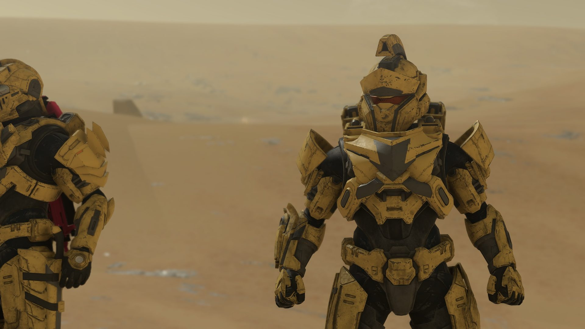
Ore 19:50. La campagna di reclutamento di Copter non è finita. Droppa la sua ultima Hit
"Bastione, la miglior difesa è l'attacco". Un messaggio di battaglia che porterà
se non stasera ma in futuro, nuove reclute Bastione. L'epicità è nell'aria.
19:50. Copter's recruitment campaign isn't over. He drops his latest hit: "Bastione, the best defence is attack". A battle message that will bring in new Bastione recruits, if not tonight then in future. Epic is in the air.
Ore 22:30. Inizio dello scontro, Copter guarda Colt che arriva a Bastione e chiede "dove è Puffo?",
la risposta di Colt è netta "Non ti serve quella scartina". Ma Copter
si ricorda bene il messaggio di Colt droppato il giorno precedente "sempre pronto a tradire",
era un bluff o diceva sul serio e sono fregato? Le intenzioni di Cobra purtroppo si basano sul voltafaccia continuo e imprevedibile,
a pochi minuti dallo scontro non gli resta che reclutare Colt. Baudo si unisce a Bastione abbracciando Copter, da anni non combattevano insieme.
Pure Swine si unisce a Bastione ma Skate, suo seguace, disgustato nel venire a sapere che Swine legge quelle riviste spazzature, si unisce a Valore.
Karmic arriva correndo e sudato fradicio con l'elmo di Achille alle porte di Valore. Noble guarda l'elmo "questo è un buon segno".
Glimpse si unisce a Valore (cercando di aiutare la sua scommessa e quella di Ifrid) e lascia a Copter un foglio di carta con un disegno di un pene, disegnato male.
Clavuss esordisce con "Gnamo Gioca", Drius con la bava alla bocca afferra la paperella e Puffo si mette in posizione (con falso sorriso e con il piede fasciato).
22:30. The fight begins. Copter watches Colt arrive at Bastione and asks "where's Puffo?"; Colt's answer is blunt: "you don't need that nobody". But Copter well remembers Colt's message dropped the day before - "always ready to betray" - was it a bluff, or did he mean it, and am I done for? Cobra's intentions unfortunately rest on constant, unpredictable turncoating; minutes from the fight, he has no choice but to recruit Colt. Baudo joins Bastione, embracing Copter; they hadn't fought together in years. Swine also joins Bastione, but Skate, his follower - disgusted to learn that Swine reads those trashy magazines - joins Valore. Karmic arrives at Valore's gates running and drenched in sweat, Achilles's helmet in hand. Noble looks at the helmet: "this is a good sign". Glimpse joins Valore (trying to help his bet and Ifrid's) and leaves Copter a sheet of paper with a badly drawn penis on it. Clavuss opens with "come on, play", Drius grabs the duck, foaming at the mouth, and Puffo takes his position (with a fake smile and a bandaged foot).
Questo scontro, grazie al marketing di Bastione, ha portato in partita tutti gli 8 Leader Principali. Uno small taste di quella che sarà l'ultima Guerra
del Capitolo 5, l'ultimo, con tutte le Gilde in gioco.
This fight, thanks to Bastione's marketing, brought all eight Principal Leaders into the match. A small taste of what the last War of Chapter 5 - the final one, with every Guild in play - will be.
No. #1
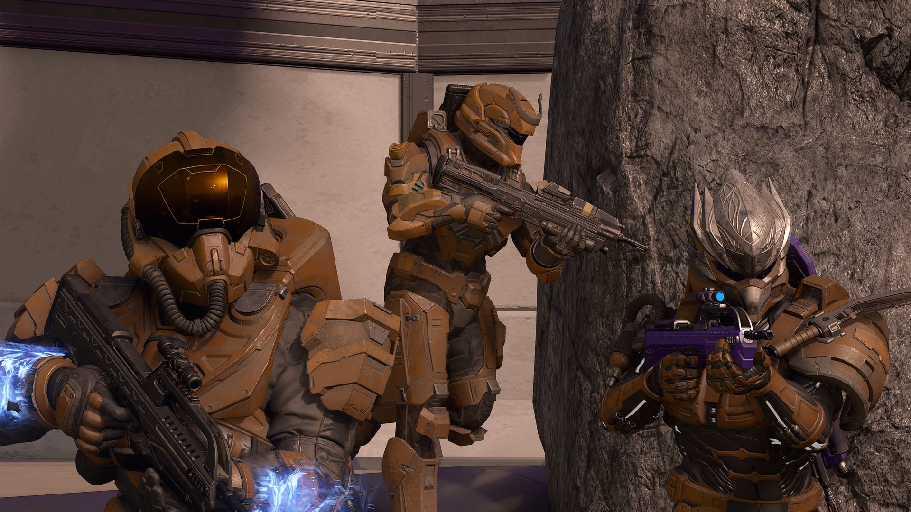
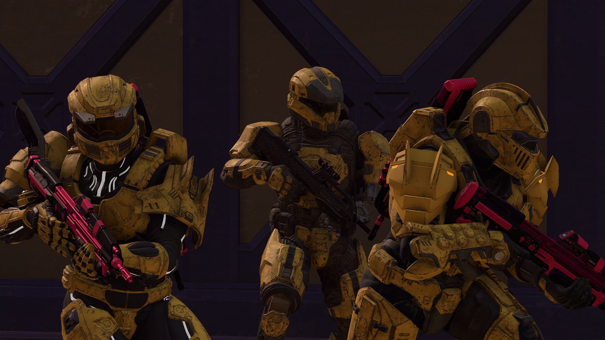
Iniziano gli annunci per le partite, qualche saluto prima dello scontro. Ma i componenti di Valore si accorgono di un fatto insolito. Noble è dislessico.
Clavuss viene chiamato "Santa Clauss", Colt "GlimpseColt", insomma da una parte il carismatico comunicatore di Bastione,
dall'altra parte un Leader che non sa mettere due parole in fila.
Puffo e Karmic si guardano, poi guardano Glimpse e Clavuss preoccupati. Ma Skate è sereno.
Lo scontro si apre con Massacro su Sandtrap, dimora di Valore.
The match announcements begin, a few greetings before the fight. But Valore's members notice something unusual. Noble is dyslexic. Clavuss gets called "Santa Clauss", Colt "GlimpseColt" - in short, on one side Bastione's charismatic communicator, on the other a Leader who can't string two words together. Puffo and Karmic look at each other, then look at Glimpse and Clavuss with concern. But Skate is unbothered. The fight opens with Slayer on Sandtrap, Valore's home ground.
Noble con forza "sempre a coppie e prendete i veicoli", Valore è bollente. Dominio veicoli porta Valore a un +15 sopra Bastione
che si rifugia in una roccaforte di sabbia circondato dal nemico. Tutti i veicoli ronzano intorno a Bastione tranne uno.
Il Wraith, fermo in base Valore, alla guida si trova Clavuss.
Come Link di Zelda che non è capace di saltare,
Clavuss non è capace di usare le frecce direzionali per muoversi (sebbene usate per arrivare al Wraith).
Glimpse alla guida della torretta chiede "che si fa, si va?".
Allora Glimpse scende, mostra a Clavuss le istruzioni di gioco di Halo Infinite, e insieme sfrecciano finalmente verso il nemico.
Karmic respawnna dicendo "ho 30ms di ping", una benedizione, proiettili vengono spediti allo Starlink di Musk
e ricadono in faccia a Bastione riducendolo in sabbia.
Noble, forcefully: "always in pairs and take the vehicles". Valore is fired up. Vehicle dominance takes Valore fifteen points clear of Bastione, who take refuge in a sand stronghold surrounded by the enemy. Every vehicle is buzzing around Bastione except one. The Wraith, stationary in the Valore base, with Clavuss at the controls. Like Link in Zelda, who can't jump, Clavuss can't use the directional arrows to move (even though he used them to get to the Wraith). Glimpse, manning the turret, asks "so what are we doing, are we going?". So Glimpse gets out, shows Clavuss the Halo Infinite controls, and together they finally tear off towards the enemy. Karmic respawns saying "I'm on 30ms ping" - a blessing; bullets are dispatched to Musk's Starlink and fall back into Bastione's faces, reducing them to sand.
La partita sembra finita, ma Bastione con un colpo di reni cooperativo prende tutti i veicoli disponibili. Proprio
come aveva fatto Valore poco fa. Bastione marcia verso un pareggio di punti a velocità supersonica.
Baudo, la furia aerea, Flying WC e Sootz i seguaci fedeli al loro leader prendono spazio nel deserto.
Ma sorgono le prime polemiche dalla distesa di sabbia. "questa mappa è sbilanciata",
"se prendi i veicoli vinci". Grida che vengono silenziate da Valore, la battaglia finisce.
The match looks over, but Bastione, with a cooperative burst of effort, takes every available vehicle. Exactly as Valore had done shortly before. Bastione marches towards a level score at supersonic speed. Baudo the aerial fury, and Flying WC and Sootz, the followers loyal to their leader, take ground in the desert. But the first objections rise from the expanse of sand. "This map is unbalanced", "if you take the vehicles you win". Cries silenced by Valore; the battle ends.
Lo scontro prosegue con una partita sketch, dove Copter cerca relax e forse una vittoria fortuita.
Castello di Peach, tutti contro tutti, ancora una volta dopo Cobra vs Pericolo, si ripropone ai giocatori.
Colt non è convinto di questa modalità, prova a contraddire la scelta di Copter
ma quest'ultimo lo tace dicendo "gioca e non tradire".
Copter brandisce la prima arma, urla e preme sul grilletto. Ma è una "arma che spara opinioni"
letteralmente non fa niente. Si ritrova sotto il fuoco nemico e viene spazzato via da colpi non definiti.
Pure Swine riceve una arma inutile ma non demorde, la getta nel vuoto e ne raccoglie una altra. Niente, altra arma inutile.
Non demorde e ne raccoglie una altra. Passeggia come un contadino in un orto a raccogliere erbacce mentre gli altri vedendo la sua disperazione
lo lasciano in pace nella sua pazzia per trovare "una arma che faccia qualcosa". Perfino Skate è dispiaciuto per Swine.
Sebbene una contesa sfida fra Baudo e Puffo. Puffo trova una arma definitiva. Come la definirebbe Penny un tempo "arma che pisciava missili".
Puffo vince Peach Castle, guardando stavolta Colt dall'alto.
The fight continues with a sketch match, where Copter is after some relaxation and perhaps a lucky win. Peach's Castle, free-for-all, put to the players once again after Cobra vs Pericolo. Colt isn't convinced by this mode and tries to argue with Copter's pick, but Copter silences him with "play, and don't betray". Copter takes up the first weapon, roars and squeezes the trigger. But it's an "opinion gun" - it quite literally does nothing. He finds himself under enemy fire and is swept away by shots of undetermined origin. Swine also gets a useless weapon but doesn't give up: he throws it away and picks up another. Nothing, another useless weapon. He doesn't give up and picks up another. He wanders like a farmer weeding a vegetable patch while the others, seeing his despair, leave him in peace in his madness to find "a weapon that does something". Even Skate feels sorry for Swine. Despite a contested duel between Baudo and Puffo, Puffo finds a definitive weapon. As Penny would once have described it, "a weapon that pissed missiles". Puffo wins Peach's Castle, this time looking down on Colt.
Si torna ad un massacro standard. Mappa di Halo Reach. Stavolta con una nuova richiesta "Niente Veicoli".
La sfida si decide solo con la forza bruta delle armi e le skill da corridori (JoeMoo avrebbe dominato).
Siamo alla terza partita e Drius non ha smesso di premere la paperella ad ogni punto che ottiene,
"quack", e completa le sue frasi con un "quack".
Infra partite Drius ha letteralmente flammato qualsiasi giocatore che poteva flammare con questa paperella.
Drius è al settimo cielo, dormirà con la paperella stanotte, qualsiasi risultato.
Queste irritazioni sono forti e sfociano in altre polemiche: "Camperoniiiiii". Le grida frustrate di Bastione
percorrono la mappa in lungo e largo. Ancora una volta, polemiche infondate.
Non solo è stato chiesto di rimuovere i veicoli portando giocatori a percorrere lentamente lunghi tragitti,
ma ci sono letteralmente teletrasporti che connettono orizzontalmente la mappa permettendo di spuntare alle spalle
del nemico o guadagnare campo in edifici strategici.
A questo punto, pure Swine è irritato. Insolito. Il suo atteggiamento giocoso dignità-less non fa capire
quanto sia serio oppure no. Ma stavolta si fa sentire.
Back to a standard slayer. A Halo Reach map. This time with a new demand: "no vehicles". The contest is decided purely by brute force of arms and running skill (JoeMoo would have dominated). We are on the third match and Drius hasn't stopped squeezing the duck at every point he scores - "quack" - and finishing his sentences with a "quack". Between matches Drius has quite literally wound up every player he could wind up with that duck. Drius is on cloud nine; he'll be sleeping with the duck tonight whatever the result. These irritations run deep and spill into more objections: "campeeeers". Bastione's frustrated shouting travels the length and breadth of the map. Once again, unfounded objections. Not only was the removal of vehicles requested, forcing players to walk long distances slowly, but there are quite literally teleporters connecting the map horizontally, allowing you to come out behind the enemy or gain ground in strategic buildings. At this point even Swine is irritated. Unusual. His playful, dignity-free manner makes it hard to tell how serious he is. But this time he makes himself heard.
Ultima partita. Dominata da errori tecnici, equilibrio ed epicità.
Scelta ricade su Controllo Totale. Un grande ricordo invade la lobby di giocatori:
The Great LAN (scontro non del Campionato ma evento del 2024). Dove naque proprio in questa modalità l'offesa "pensa solo alle kills"
per Colt e le grida di Baudo "forzaaaa" per spingere alla vittoria. La partita inizia sulla mappa Commando,
ma la richiesta di "no veicoli" di Copter non viene ascoltata. La partita, una volta conclusa, va a monte.
In questa partita vediamo un Colt sniper che protegge una zona a distanza. Ma pure la realizzazione di Copter su Pino.
Pino è ancora un cadetto e ha bisogno di training (molto training).
Alla presa di un veicolo d'assalto, Copter si mette alla guida e Pino al mitragliatore.
Sfrecciando per raggiungere la zona da controllare, Pino, per ragioni non troppo chiare, lascia la torretta.
Quindi Copter si vede sfrecciare senza armi su quattro ruote verso una zona piena di Valore.
A pochi metri, prima dello scrosciare di proiettili dai fucili di Valore, Copter si ricorda i bei tempi in cui
Copter e Noble su un unico veicolo riuscivano a pareggiare partite oramai perse, a spingere squadre in vasti universi di gioco.
Ma questo ricordo fu sommerso dalla sua ira nel grido "Pino perchè sei scesooooooooo".
Last match. Dominated by technical faults, balance and epic moments. The pick lands on Total Control. A great memory floods the lobby: The Great LAN (not a Championship fight but a 2024 event). It was in this very mode that the insult "he only thinks about kills" was born for Colt, along with Baudo's cries of "come oooon" to drive the team to victory. The match starts on the Commando map, but Copter's "no vehicles" request goes unheard. Once finished, the match is scrapped. In this match we see Colt sniping to protect a zone at range. But also Copter's realisation about Pino. Pino is still a cadet and needs training (a lot of training). On taking an assault vehicle, Copter takes the wheel and Pino the gun. Tearing along to reach the zone to be controlled, Pino - for reasons not entirely clear - leaves the turret. So Copter finds himself speeding along unarmed on four wheels towards a zone full of Valore. A few metres out, before the downpour of bullets from Valore's rifles, Copter remembers the good old days when Copter and Noble in a single vehicle could level matches already lost, and drive teams across vast gameplay universes. But that memory was drowned by his fury in the cry "Pino, why did you get ooooouuut".
La partita viene annullata, viene riproposta senza veicoli, ma si bugga. Problema tecnico.
Si narra che fu la concomitanza della cattura di tutte e tre le zone in contemporanea
a Pino che si è suicidato con il bazooka a far buggare la mappa.
A questo punto Baudo, per venire in aiuto al problema tecnico, propone Gran Paradiso Controllo Totale senza veicoli.
Contro regolamento si, ma perfettamente funzionante.
Sappiamo tutti cosa nasconde Gran Paradiso. Una arma di distruzione di massa chiamata la Coda dello Scorpione.
The match is voided and replayed without vehicles, but it bugs out. Technical fault. It is said that the combination of all three zones being captured simultaneously and Pino killing himself with the rocket launcher was what broke the map. At which point Baudo, to help with the technical problem, proposes Gran Paradiso, Total Control, no vehicles. Against the rules, yes, but perfectly functional. We all know what Gran Paradiso hides. A weapon of mass destruction called the Scorpion's Tail.
La partita inizia e Colt crasha. Noble preoccupato per un altro problema tecnico, nella sua dislessia, dice parole a caso.
Valore in confusione. Bastione prende il sopravvendo e ottiene il primo punto.
A Bastione che Colt avesse crashato non gliene poteva fregare di meno.
Puffo e Karmic vedono Noble in difficolta grammaticale e cercano di tradurre cosa vuole ma invano.
Quindi decidono di prende le redini di Valore. "A gruppi di 3 sulle zone". La matematica non
è il loro forte con 3 zone e 7 giocatori.
Ma il piano funziona. Non domina, ma funziona. Infatti, esisterà per tutta
la partita un susseguirsi di attacco e difesa di zone.
Non c'è dominio, semplicemente pura rotazione. Partita equilibratissima e difficilissima.
Perfino Drius ha posato la paperella.
Quest'ultimo, decide di appollaiarsi in cima a Gran Paradiso e cominciare a fare kills dall'alto.
Torna ad essere cicciobrufoloso e Karmic non ci sta.
"Gnamo scendiiiiii basta fare il camper di merda". Dall'altra parte,
Karmic scopre per la seconda volta un valido Mercenario: Clavuss.
Non è la prima volta che lo nota e pondera su come arruolarlo in futuro.
The match begins and Colt crashes. Noble, worried about another technical problem, says random words in his dyslexia. Valore in disarray. Bastione takes the upper hand and gets the first point. Bastione could not have cared less that Colt had crashed. Puffo and Karmic see Noble in grammatical difficulty and try to translate what he wants, in vain. So they decide to take the reins of Valore. "Groups of three on the zones". Maths isn't their strong suit, with three zones and seven players. But the plan works. It doesn't dominate, but it works. Indeed, the whole match will be a succession of attacking and defending zones. There is no dominance, simply pure rotation. An extremely balanced and extremely difficult match. Even Drius has put the duck down. He decides to perch on top of Gran Paradiso and start racking up kills from above. He goes back to being a spotty lump and Karmic isn't having it: "come on, get dooown, stop being a rubbish camper". On the other side, Karmic discovers a capable Mercenary for the second time: Clavuss. It isn't the first time he has noticed him, and he ponders how to recruit him in future.
Nel gran finale, Copter oscura il sole saltando dall'alto con la coda di scorpione e prende una zona
pensando di aver eliminato Valore. Ma non aveva considerato gli innumerevoli allenamenti di Glimpse nelle Dangeon
più remote. Dove Glimpse aveva imparato ad essere invisibile al nemico senza avere l'equipaggiamento dell'invisibilità:
semplicemente accucciandosi, scomparendo sul radar, fino a che tutti i giocatori si dimenticano della sua presenza in partita per poi...sbucare alle spalle del nemico.
Glimpse, si alza da un cespuglio circostante, pieno di foglie sui capelli corre alle spalle di Copter.
Glimpse potrebbe dare un singolo cazzotto a Copter per eliminarlo ma decide di umiliarlo.
Brandisce il martello e spazza via Copter e la sua arma infernale. La partita finisce in pareggio.
Noble, nella sua dislessia, decreta Bastione vincitore delle innumerevoli partite Controllo Totale.
In the grand finale, Copter blots out the sun leaping down with the Scorpion's Tail and takes a zone, thinking he has wiped Valore out. But he hadn't reckoned with Glimpse's countless training sessions in the remotest dungeons. There Glimpse had learned to be invisible to the enemy without the cloaking equipment: simply by crouching, dropping off the radar, until every player forgets he is in the match at all, and then... popping up behind them. Glimpse rises from a nearby bush, leaves in his hair, and runs up behind Copter. Glimpse could kill Copter with a single punch but decides to humiliate him. He swings the hammer and sweeps away Copter and his infernal weapon. The match ends in a draw. Noble, in his dyslexia, declares Bastione the winner of the countless Total Control matches.
No. #1
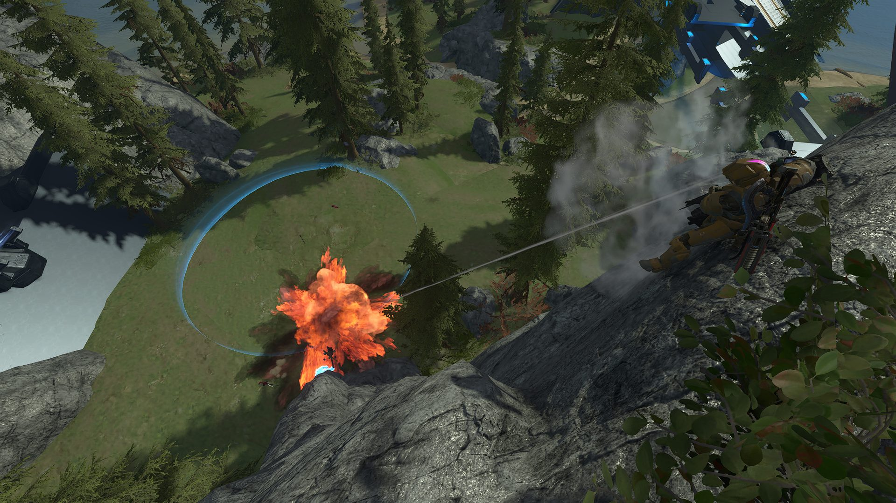
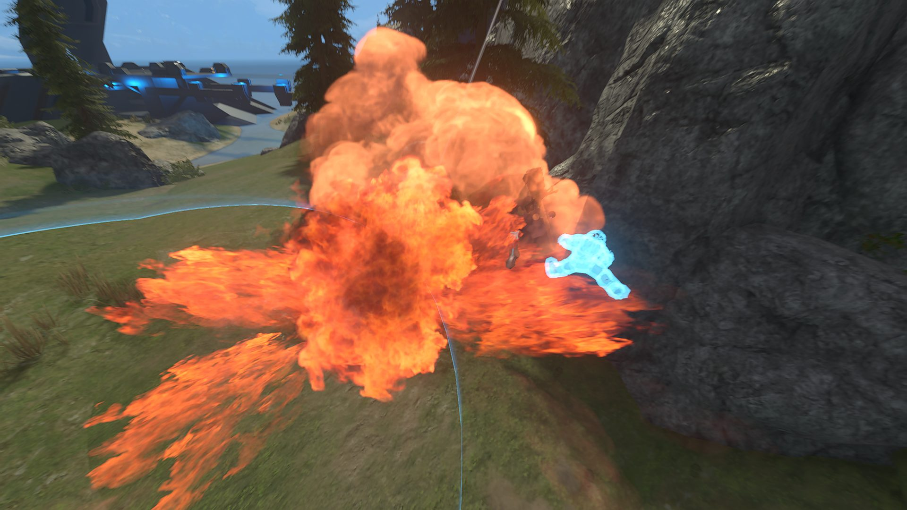
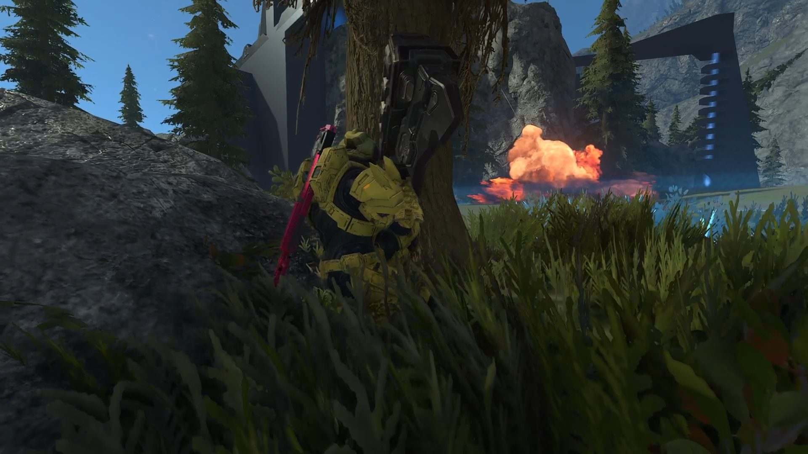
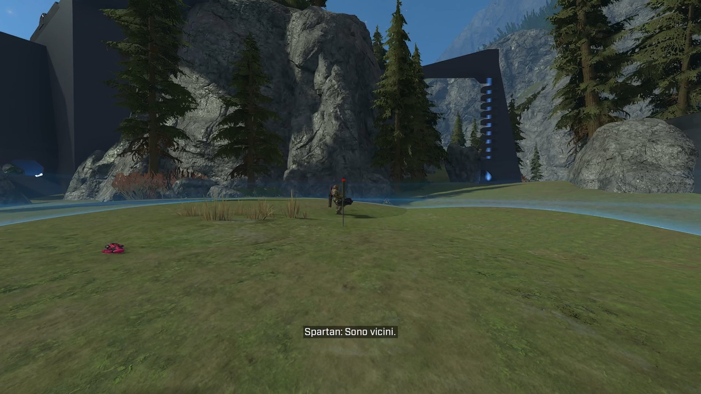
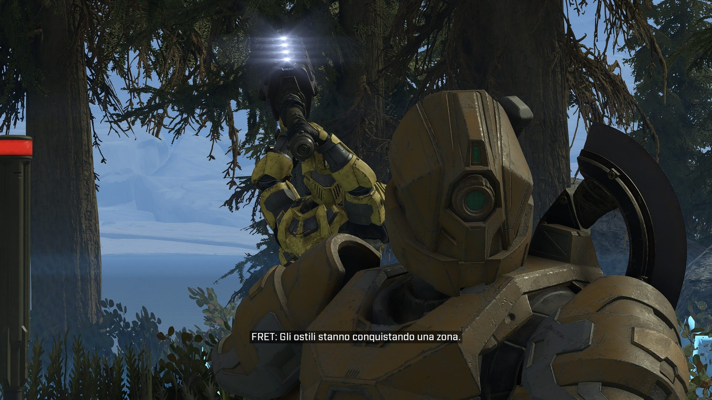
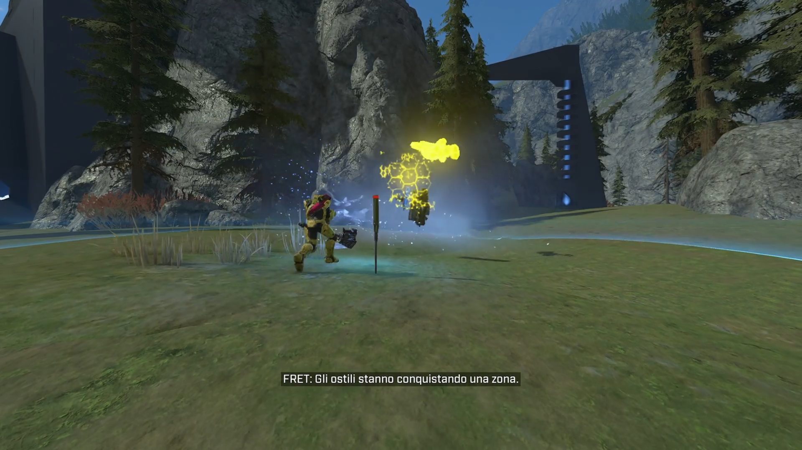
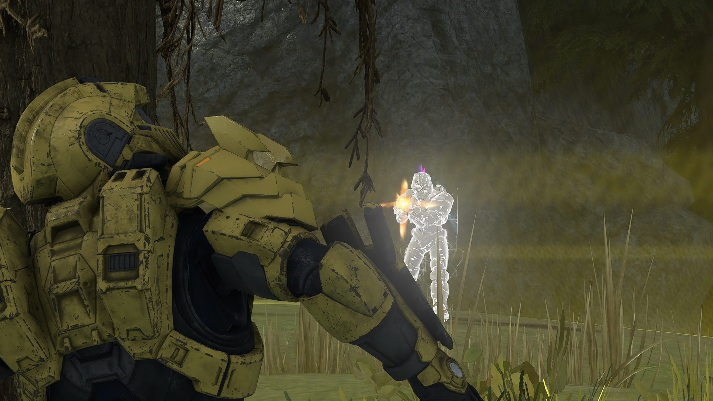
Copter frustrato, ha capito che il solo ritorno non è sufficiente. Ci vuole di più.
I suoi fedelissimi di Bastione non lo abbandoneranno mai, ma non basta. Ci vuole una spinta in più.
Fu proprio Bastione ha vincere l'ultima partita a 8 Gilde del Noble Party Gran Paradiso (Marzo 2025).
Quale fu la formula vincente? Copter, si ritira nelle sue stanze militari per pensare.
Bastione è una grossa fortezza robusta e pesante. Lenta a partire come un diesel, sta solo prendendo la rincorsa.
Valore ha dominanto sulla Guerra. Ma è veramente stato Noble e la sua dislessia?
Oppure è stata la fortuita composizione della Gilda da Leaders e Mercenari?
Ci sono stati troppi problemi tecnici che hanno annebbiato la gilda Bastione, stremata, dalla quale Valore ne ha preso forza. Cosa riserverà il torneo?
Copter, frustrated, has realised that the comeback alone isn't enough. It needs more. His Bastione loyalists will never abandon him, but that isn't enough either. It needs an extra push. It was Bastione, after all, who won the last eight-Guild match of the Noble Party Gran Paradiso (March 2025). What was the winning formula? Copter withdraws to his war rooms to think. Bastione is a great fortress, sturdy and heavy. Slow to start like a diesel, it is only just building up speed. Valore dominated the War. But was it really Noble and his dyslexia? Or was it the lucky composition of the Guild from Leaders and Mercenaries? There were too many technical problems, which fogged the exhausted Bastione guild and which Valore drew strength from. What does the tournament hold in store?
Altrove, Ifrid esce dal centro scommesse pieno d'oro. Drius dorme felice con la paperella. Baudo porta riflessioni ad Aquila per i prossimi scontri. Puffo torna a ricamare a maglia.
Karmic paga il suo debito al mercante per l'elmo di Achille e torna dagli Sciabola. Swine chiede scusa a Skate per la rivista.
Pino vuole essere più forte e si unisce a Glimpse in una Dangeon. Colt brama nell'ombra.
Sootz e WC, silenzioni si ri-organizzano per la prossima Guerra. Gli altri Mercenari, leggono il risultato e riflettono sul da farsi.
Elsewhere, Ifrid leaves the betting shop laden with gold. Drius sleeps happily with his duck. Baudo brings his conclusions back to Aquila for the fights ahead. Puffo goes back to his knitting. Karmic pays off his debt to the merchant for Achilles's helmet and returns to the Sciabola. Swine apologises to Skate for the magazine. Pino wants to be stronger and joins Glimpse in a dungeon. Colt broods in the shadows. Sootz and WC quietly reorganise for the next War. The other Mercenaries read the result and reflect on what to do next.
Campagna: The Great LAN pt.2Campaign: The Great LAN pt.2
27 Novembre 2025. La seconda parte di The Great LAN porta in arena nuovi e vecchi giocatori.
Il Signor Colt, The Best Spartan, odiato e amato da molti (ma soprattutto odiato) guida la gilda Cobra.
Si trova di fronte Puffo, uno degli ultimi arrivati su BOXALMATCH, leader di Pericolo.
Pescato da un girone di partite classificate, e si unisce a questo Campionato (senza il suo consenso).
Una sfida che atterra su tutti i giornali nei peggiori meandri della Forgia, facendo aderire pure gratuitamente molti Mercenari.
Si narra che girava una taglia sulla testa di Colt e qualche Mercenario ha preso occasione di unirsi a Pericolo gratutitamente.
Pericolo ha un Mercenario di grande lealtà che risponde alla chiamata (nonostante costui abbia esasperamente ripetuto "basta giocare ad Halo ti prego"),
si parla di Bomber Sandyokhan. Un amico di lunga data che non prende sotto gamba questo Campionato.
A Pericolo si unisce pure Tigrozzo, speranzoso di guadagnarsi la taglia sulla testa di Colt.
Vediamo pure Flying WC in Pericolo, senza motivo di vendetta o altro, ma con tanta voglia di prendere a pugni la gente.
27 November 2025. The second part of The Great LAN brings new and old players into the arena. Mr Colt, The Best Spartan, hated and loved by many (but mostly hated), leads the Cobra guild. Facing him is Puffo, one of the most recent arrivals at BOXALMATCH and leader of Pericolo. Plucked from a round of ranked matches, he joins this Championship (without his consent). A contest that lands in every newspaper in the worst corners of the Forge, drawing plenty of Mercenaries in for free as well. It is said a bounty was circulating on Colt's head, and a few Mercenaries took the chance to join Pericolo for nothing. Pericolo has a Mercenary of great loyalty who answers the call (despite having repeated in exasperation "stop playing Halo, I'm begging you"): we're talking about Bomber Sandyokhan. A long-standing friend who does not take this Championship lightly. Tigrozzo also joins Pericolo, hopeful of collecting the bounty on Colt's head. We also see Flying WC in Pericolo, with no motive of revenge or anything else, just a strong urge to punch people.
No. #1
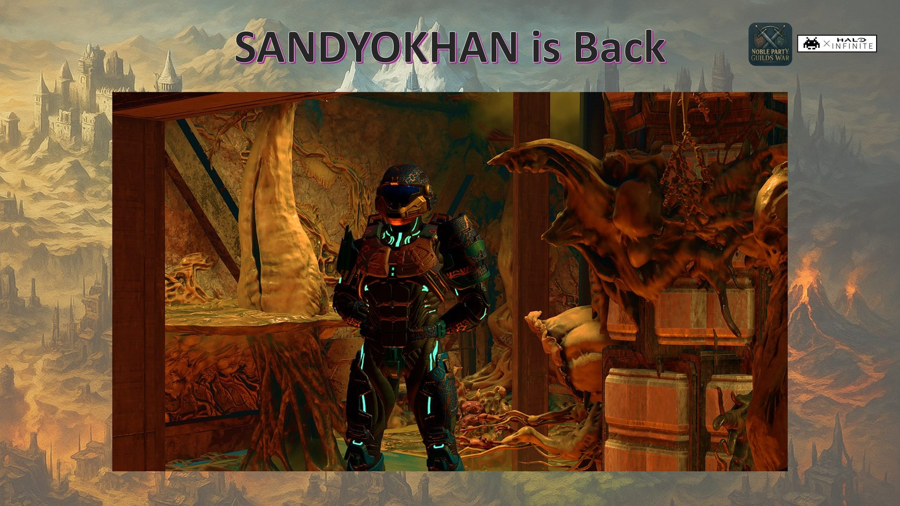
Dall'altra parte, Mercenari con motivazioni misteriose si uniscono a Cobra.
Ifrid, una delle più antiche (e una delle tante) nemesi del signor Colt,
si unisce a Cobra nonostante abbia visto l'annuncio sulla taglia.
Scoprimmo poi a fine Guerra che Ifrid era un assiduo frequentatore di un rinomato centro di scommesse,
e secondo i suoi calcoli (ancora ignoti),
doveva unirsi a Cobra per sperare di guadagnare più della taglia.
Ancora più oscuro il piano di Glimpse. Nonostante un credente della gilda Cobra,
sappiamo tutti quanto è attaccato al denaro.
L'annuncio della taglia e la soffiata del rinomato centro scommesse non lo hanno fermato all'unirsi a Cobra: perchè?
On the other side, Mercenaries with mysterious motives join Cobra. Ifrid, one of the oldest (and one of the many) nemeses of Mr Colt, joins Cobra despite having seen the bounty notice. We found out at the end of the War that Ifrid was a regular at a well-known betting shop and that, by his own (still unknown) calculations, he had to join Cobra to stand a chance of earning more than the bounty. More obscure still is Glimpse's plan. Though a believer in the Cobra guild, we all know how attached he is to money. The bounty notice and the tip-off from the well-known betting shop didn't stop him joining Cobra: why?
No. #1
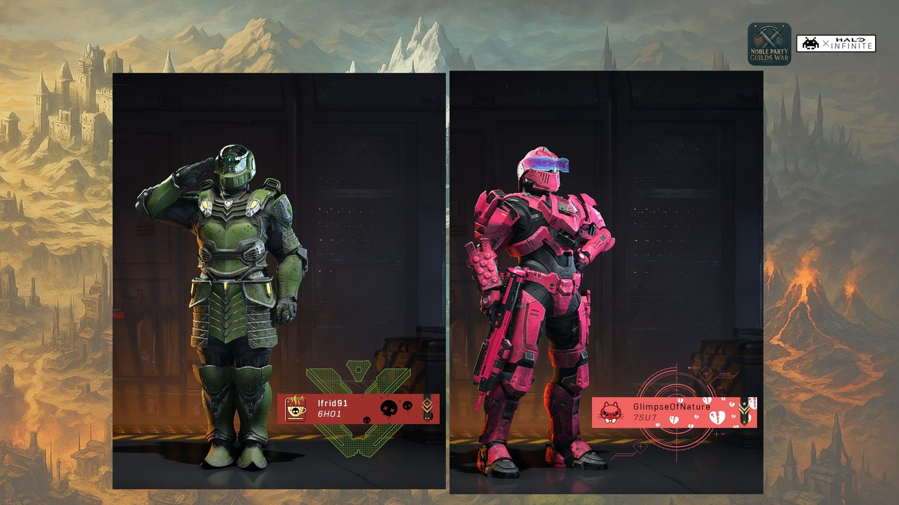
Nuovi Mercenari si uniscono a questa guerra. Mercenari di lunga data, non interessati a ste cagate delle scommesse o dei soldi.
Vengono per divertirsi e stare insieme. Skate, con i suoi orari dove la luce solare deve essere assente, si unisce a Cobra.
La sua presenza per Cobra sarà indispensabile, ma pure quella di Clavuss che esordisce "io sto con te Colt". Un messaggio chiaro che ci ricorda il suo motto "Pena poco e gioca" per andare a letto presto che domani si lavora
(spoiler alert: per questa guerra non andò a letto presto).
New Mercenaries join this war. Long-standing Mercenaries, uninterested in all this rubbish about bets and money. They come to enjoy themselves and be together. Skate, with his schedule requiring the absence of all daylight, joins Cobra. His presence will be indispensable for Cobra, as will that of Clavuss, who opens with "I'm with you, Colt". A clear message that reminds us of his motto, "complain less and play", so he can get to bed early because there's work tomorrow (spoiler alert: for this war he did not get to bed early).
No. #1
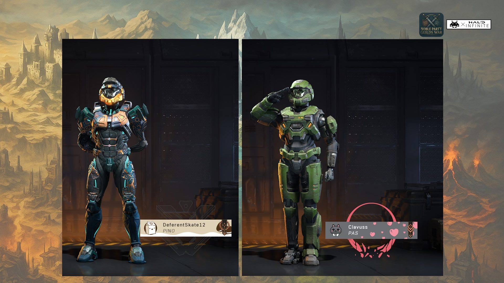
La Guerra parte, e sarà completamente invasa dalle offese a Colt.
Come Larry Bird, Puffo di Pericolo gioca sulla variabile psicologica e cerca di affondare l'animo di Cobra.
Stranamente....perfino tutti i componenti di Cobra offendono Colt, dandogli dell'incapace.
Ma molti non sapevano che Colt e le offese sono come Bane e l'oscurità:
The War starts, and it will be completely overrun by insults aimed at Colt. Like Larry Bird, Pericolo's Puffo plays the psychological angle and tries to sink Cobra's morale. Strangely.... even every member of Cobra insults Colt, calling him useless. But many didn't know that Colt and insults are like Bane and the darkness:
"Oh, quindi pensate che le offese possano farmi qualcosa. Avete appena scoperto come si offende scartine;
io sono nato fra le offese, sono stato modellato da esse. Io non ho visto un complimento fino a quando non ho cominciato a lavorare"
(e il complimento è stato "bravo che hai fatto benzina al furgone")
Questa frase rafforza il morale di Colt nella prima partita, ma Pericolo firma la prima vittoria.
"Oh, so you think insults can do something to me. You merely adopted insults; I was born in them, moulded by them. I didn't see a compliment until I was already at work" (and the compliment was "well done for filling the van up with petrol"). This line stiffens Colt's morale in the first match, but Pericolo takes the first win.
Puffo decide spavaldamente di dare a Colt qualcosa di più facile per vincere e decide una partita Sketch Tutti contro tutti.
A questo punto i mercenari di pericolo guardano Puffo dicendo "ma che cazzo fai?".
Sandyokhan chiede ripetute volte "ma che vuol dire le armi sparano colpi casuali?".
Puffo non lo ascolta, ascolta solo il suo ego di aver vinto la prima partita e lo porta alla disfatta davanti allo sguardo di Peach e del suo Castello.
Puffo brazenly decides to give Colt something easier to win and settles on a Sketch free-for-all. At which point Pericolo's mercenaries look at Puffo and say "what the hell are you doing?". Sandyokhan asks repeatedly "what do you mean the weapons fire random shots?". Puffo isn't listening; he's listening only to his own ego at having won the first match, and it leads him to a rout under the gaze of Peach and her Castle.
Con La terza partita, Cobra vuole dimostrare che "non sa fare solo le kills".
Una offesa usata ripetutivamente contro Colt quando ricevette il premio The Best Spartan ma che ancora non lo scalfisce.
Si uniscono alla battaglia Noble di Valore, e Drius di Valchiria in Pericolo. Rambaudo di Aquila, e Karmic di Sciabola con l'immagine del cicciobrufolo Drius
non gli resta che unirsi a Cobra.
With the third match, Cobra wants to prove it "doesn't only know how to get kills". An insult used repeatedly against Colt when he received The Best Spartan award, and which still doesn't touch him. Joining the battle are Valore's Noble and Valchiria's Drius on Pericolo. Aquila's Rambaudo, and Sciabola's Karmic - with the image of that spotty lump Drius in mind - has no option but to join Cobra.
Alla scelta della partita con obbiettivo "Re della Collina", Swine che non ha partecipato alla Guerra si sveglia nel bel mezzo della notte urlando "No quella nooooo".
La tanto odiata modalità di Swine e Colt viene proprio scelta da quest'ultimo per dimostrare le use abilità Warcraft.
Cobra non si da per vinto, regge la partita fino alla fine, ma Pericolo ha la meglio.
A poco è servito il potere speciale di Glimpse con una costante presenza invisibile a contendere collina.
Forse ancora non maturo l’ultra instinct sbloccato da Ifrid che, con un “ahhh ma guarda”, passa ai 120fps nella sua macchina infernale (PC Desktop con lucine).
At the pick of an objective match, "King of the Hill", Swine - who isn't even in the War - wakes in the middle of the night screaming "no, not that oooone". The mode most hated by Swine and Colt is picked by Colt himself, to prove his Warcraft credentials. Cobra doesn't give up and holds the match to the end, but Pericolo comes out on top. Glimpse's special power, a constant invisible presence contesting the hill, is of little help. Perhaps the ultra instinct unlocked by Ifrid isn't fully matured yet; with an "ahhh, would you look at that", he switches to 120fps on his infernal machine (a desktop PC with little lights).
Le offese divampano, "vedi sai solo fare le kills" "cosa scegli ste modalità a obbiettivo che non ti riescono".
E qui che Pericolo fece il suo secondo ed ultimo errore. "Beh allora ne scegliamo una altra con obbiettivo che ne dici".
La scelta ricade su "Cattura la Bandiera Singola".
The insults flare up: "see, all you can do is kills", "why pick these objective modes you're no good at". And here Pericolo made its second and final mistake. "Well then, let's pick another objective one, what do you say". The pick lands on "One Flag Capture the Flag".
In questa partita c'è stato quello che si chiama "tipping point": un momento in cui qualcosa di significante ha cambiato le sorti dello scontro.
Con la bandiera quasi in base avversaria per essere catturata, Pericolo cerca di ripristinarla, ma dal cielo, piomba Clavuss. E con lui, una scarica di piombo e granate.
"Il cielo si oscurò da li in poi fu buio per Pericolo". Uno a zero, due a zero, tre a zero. Cobra, la partita perfetta.
This match had what is called a "tipping point": a moment when something significant changed the course of the fight. With the flag almost in the enemy base and ready to be captured, Pericolo tries to reset it - but out of the sky drops Clavuss. And with him a hail of lead and grenades. "The sky went dark, and from then on it was night for Pericolo". One-nil, two-nil, three-nil. Cobra, the perfect match.
Nonostante una ora di offese da parte di Pericolo e di Cobra stesso contro Colt, una Guerra finita in pareggio dimostrando che gli attacchi psicologici non hanno effetto contro Cobra.
Pericolo, una Gilda da temere ha imparato una lezione da questa guerra. E Cobra, una Gilda composta da Mercenari che hanno strane motivazioni ha tenuto testa allo scontro.
Despite an hour of insults from Pericolo and from Cobra itself aimed at Colt, a War ending in a draw proves that psychological attacks have no effect on Cobra. Pericolo, a Guild to be feared, learned a lesson from this war. And Cobra, a Guild made up of Mercenaries with strange motives, held its own in the fight.
Side Quest: Girone Infernale per Ade "Mr.Glimpse e i maledetti 3 secondi"Side Quest: Circle of Hell for Ade — "Mr Glimpse and the damned 3 seconds"
23 Ottobre 2025. Giornata Invernale e silenziosa, ma dal sonoro silenzio un boato di battaglia.
È Sootz.
Ha voglia di combattere e la sua voglia di sangue viene subito accolta dalla tenebrosa Gilda Ade
con il suo controverso Leader Swine.
Valore, guidata da Noble, viene chiamato a combattere. Recluta un famoso Mercenario, Glimpse. Famoso, quanto costoso.
Guerra di Squadre Duos. Rapide ed Efficaci.
23 October 2025. A quiet winter's day, and out of the resounding silence a roar of battle. It's Sootz. He wants to fight, and his thirst for blood is immediately answered by the shadowy Ade Guild and its controversial Leader Swine. Valore, led by Noble, is called out to fight. He recruits a famous Mercenary, Glimpse. As famous as he is expensive. A War of duo teams. Fast and effective.
Si comincia in Abbiocco, Italia, dove Swine dimostra un incontrastata Leadership su Sootz.
Valore cade in confusione, ma Glimpse si sta solo scaldando per vincere (ed eventualmente sabotare haha).
Valore ha scelto il campo di battaglia, ha pure applicato le armi della Gilda, ed ha perso.
Ade, orgogliosissimo, invita a banchetto Valore nelle sue terre dove applica le armi di Ade e spera di far impazzire se non vergognare il nemico
di una doppia sconfitta. Un Bluff.
It begins in Abbiocco, Italy, where Swine shows undisputed Leadership over Sootz. Valore falls into disarray, but Glimpse is only warming up to win (and possibly sabotage, haha). Valore picked the battleground, applied the Guild's weapons too, and lost. Ade, thoroughly proud, invites Valore to a feast on its own lands, where it applies Ade's weapons and hopes to drive the enemy mad, if not shame them, with a second defeat. A bluff.
Valore schiva tutte le trappole, Glimpse è bollente. E Valore vince per un soffio. Esattamente 3 secondi.
In queste partite Sootz ha dato prova che l'evento del 2024, lo ha forgiato in un Mercenario di tutto rispetto
sebbene la sua lunga assenza e sa ascoltare il suo leader Swine.
Ma non basta.
Valore dodges every trap, Glimpse is on fire. And Valore wins by a whisker. Exactly three seconds. In these matches Sootz proved that the 2024 event forged him into a thoroughly respectable Mercenary despite his long absence, and that he knows how to listen to his leader Swine. But it isn't enough.
Ade recluta Glimpse all'insaputa di Noble pagandolo una fortuna. Ma Noble, ha avuto la stessa idea comprandosi la fiducia di Sootz.
Nonostante questo scambio di Mercenari, Glimpse viene a sapere che Noble ha pagato una cifra molto più alta di quanto ricevuto da Swine.
Il rancore di Glimpse si fa sentire in partita non dando il massimo. Sootz, alla guida del Gravemind, domina una Partita Sketch e non si ferma lì.
Prende le redini di una seconda partita Sketch facendo esplodere in faccia ad Ade Grunt volanti portatori delle famose granate "appiccicose".
Queste "appiccicose", sono tutt'oggi il terrore di Swine, come il coccodrillo per capitan uncino.
Ade recruits Glimpse behind Noble's back, paying him a fortune. But Noble had the same idea, buying Sootz's loyalty. Despite this exchange of Mercenaries, Glimpse learns that Noble paid a far higher sum than what he received from Swine. Glimpse's resentment shows in the match, where he doesn't give his best. Sootz, at the controls of the Gravemind, dominates a Sketch match and doesn't stop there. He takes the reins of a second Sketch match, detonating flying Grunts carrying the famous "sticky" grenades in Ade's faces. Those "stickies" are to this day Swine's terror, as the crocodile is to Captain Hook.
Campagna: The Great LAN pt.1Campaign: The Great LAN pt.1
8 Ottobre 2025. Con l'inizio del Campionato, c'è voglia di giocare, di sperimentare, di mettersi alla prova.
The Great LAN, un ricordo fantastico diventa il centro delle prossime Guerre. Vede protagonisti giocatori storici.
8 October 2025. With the Championship's opening there is an appetite to play, to experiment, to test yourself. The Great LAN, a wonderful memory, becomes the centre of the Wars to come. It stars long-standing players.
In questa Guerra, Sciabola guidati da Karmic sfida Ade guidati da Swine. I fratelli di Halo 3 messi a confronto.
Non sono soli, Mercenari di lunga data vengono reclutati.
E la guerra si apre con la più alta sfida di sempre: il Mio Campione.
In this War, Sciabola led by Karmic challenge Ade led by Swine. The brothers of Halo 3 set against each other. They are not alone; long-standing Mercenaries are recruited. And the war opens with the greatest challenge of them all: My Champion.
Sciabola si trova con un Mercenario insolito ma fiducioso, Pino's Carrot. Il Mercenario non finisce la frase
"Bei tempi sul Reach..." che Karmic lo spinge a calci nell'arena chiedendo la vittoria dopo aver speso tutti questi soldi per reclutarlo.
Ad affrontare Pino, Swine, fra fragorose risate, ci ha già pensato. Non ha scelto un Mercenario qualunque. Ha scelto Tigrozzo.
Sciabola find themselves with an unusual but confident Mercenary, Pino's Carrot. The Mercenary doesn't get to finish the sentence "good times on Reach..." before Karmic kicks him into the arena, demanding victory after spending all that money recruiting him. Swine, amid booming laughter, has already thought about who will face Pino. He hasn't picked just any Mercenary. He has picked Tigrozzo.
Gamer storico di Halo 3, con patente di guida per soli Elephants, adesso, si ritrova solo in Arena. 1v1. Sudore, Stress, guardandosi alle spalle uno Swine fiducioso "vincerai".
5 punti per vincere. Il tutto inizia in parità. Le partite vanno avanti dove Tigrozzo e Pino si uccidono perfettamente a vicenda.
Lo stress aumenta come pure l'impazienza per vincere di Pino. Sarà questa a fargli perdere la testa.
A long-standing Halo 3 gamer, licensed to drive Elephants only, now finds himself alone in the Arena. 1v1. Sweat, stress, and behind him a confident Swine: "you'll win". Five points to win. It all starts level. The rounds go on with Tigrozzo and Pino killing each other perfectly. The stress builds, and so does Pino's impatience to win. That is what will make him lose his head.
In una mappa da 1m2, Pino decide di afferrare il fucile di precisione per far fuori il suo avversario.
"Se lo becco, un colpo e muore" fu la sua giustificazione. La furia di Karmic e le sue grida "Ma che cazzo ti metti a fare il cecchino???"
oramai avevano invaso l'arena. Ma non bastò a far cambiare idea a Pino.
Dall'altra parte, Tigrozzo, impassibile (forse per il troppo stress) decise di restare fedele al suo fucile d'assalto. E alla fine, sciolse nel piombo Pino.
La Guerra era appena cominciata. Ma nella mente di Karmic era già finita.
On a map the size of a square metre, Pino decides to grab the sniper rifle to finish his opponent off. "If I catch him, one shot and he's dead" was his justification. Karmic's fury and his shouts of "what the hell are you doing playing sniper???" had by then filled the arena. But it wasn't enough to change Pino's mind. On the other side Tigrozzo, impassive (perhaps from sheer stress), decided to stay loyal to his assault rifle. And in the end he melted Pino in lead. The War had only just begun. But in Karmic's mind it was already over.
No. #1
Il secondo scontro vede un team Sciabola pieno di grinta furiosa ma disorientato. Ade prende il vantaggio della situazione impugnando ogni arma disponibile sulla mappa ripetutamente.
La mappa, Salvezza scelta da Sciabola, fu la loro Perdizione.
The second clash sees a Sciabola team full of furious grit but disoriented. Ade takes advantage of the situation by repeatedly seizing every weapon available on the map. The map, Salvation, picked by Sciabola, was their Damnation.
Terza partita, gli Sciabola sono stremati. Per non ripetere di lasciare tutte le armi più forti al nemico, in un atto di follia, Karmic prende il bazooka e si lancia nel vuoto, autodistruggendosi.
Ancora una volta la disfatta per Sciabola. Troppo dolore dal Il Mio Campione, troppa sofferenza di aver perso nel proprio terreno, ma nel silenzio post partita, Sciabola si riorganizza.
Third match, and Sciabola are exhausted. To avoid leaving all the strongest weapons to the enemy again, in an act of madness Karmic takes the rocket launcher and throws himself into the void, blowing himself up. Defeat for Sciabola once again. Too much pain from My Champion, too much suffering at having lost on their own ground - but in the silence after the match, Sciabola regroups.
Un ultimo massacro, una ultima carica su Lattice. Una mappa per partite classificate dove Sciabola e Ade sono concentratissimi.
Sciabola vede la luce in fondo al tunnel, conquista il fucile di precisione più volte e con combo di squadra arriva alla vittoria.
One last slayer, one last charge on Lattice. A ranked-match map where Sciabola and Ade are utterly focused. Sciabola sees the light at the end of the tunnel, takes the sniper rifle repeatedly and, with team combos, reaches victory.
6 Ottobre 2025. Il Campionato si apre proprio con la LAN, un richiamo alle origini di un lontano 2014 in quanto è
proprio Rambaudo con Aquila a sfidare Drius con Valchiria. Una sfida fra gamers moderni (cicciobrufolosi) e gamers passati.
Non sono soli. La curiosità di questo Campionato porta altri leader di Gilde a fare da spettatori e unirsi.
Fra i quali Karmic di Sciabola, Noble di Valore, Puffo di Pericolo e Swine di Ade. E tanti Mercenari sono stati comprati.
6 October 2025. The Championship opens with the LAN itself, a nod to its origins back in 2014, since it is Rambaudo with Aquila challenging Drius with Valchiria. A contest between modern (spotty-lump) gamers and gamers of old. They are not alone. Curiosity about this Championship draws other Guild leaders in to spectate and join. Among them Sciabola's Karmic, Valore's Noble, Pericolo's Puffo and Ade's Swine. And a good many Mercenaries have been bought.
Un inizio Guerra proprio da gamers moderni. Drius porta subito in tavola una delle sfide più ardue per Rambaudo: massacro cecchini e pompa.
Per anni Rambaudo si è allenato solitario nelle varie forge per migliorare la sua precisione.
Non sono affatto stati invani, ma non ha considerato che le sue sole capacità non bastano per vincere una guerra, servono pure quelle dei Mercenari.
Una disfatta. Drius gioca al piattello sui mercenari di Baudo e seppellisce il leader Noble sotto proiettili a distanza mentre mangia fonzies ridendo a squarcia gola.
I mercenari di Valchiria sono disgustati dal loro leader, ma la somma di danaro che hanno ricevuto è stata troppo elevata per essere rifiutata.
Karmic di Sciabola, che ha sciolto Aquila a colpi di pompa, non regge il cicciobrufolame di Drius e decide di prendere una pausa partita.
Ad ogni modo, ci vuole ben altro per togliere la determinazione di Rambaudo.
A start to the War worthy of modern gamers. Drius immediately puts one of the toughest challenges for Rambaudo on the table: snipers-and-shotguns slayer. For years Rambaudo trained alone in the various forges to improve his accuracy. It was not wasted at all, but he hadn't reckoned that his own ability alone isn't enough to win a war - you need the Mercenaries' too. A rout. Drius plays clay pigeon shooting with Baudo's mercenaries and buries leader Noble under long-range fire while eating crisps and laughing his head off. Valchiria's mercenaries are disgusted by their leader, but the sum of money they received was far too large to turn down. Sciabola's Karmic, who melted Aquila with shotgun blasts, can't stand Drius's spotty-lump routine and decides to sit a match out. Either way, it takes a good deal more than that to dent Rambaudo's resolve.
Rambaudo prende le redini della seconda partita portando tutti quanti in un abbandonato Jurassic Park.
Swine e Puffo entrano in partita.
Puffo e Rambaudo creano azioni combinate che lasciano Drius finalmente senza fonzies fra le mani.
Swine, nonostante unito a Valchiria, ride della loro disfatta. Inoltre, per Swine, non basta la sua invisibilità per non farsi vedere dal nemico.
Terza partita e quarta partita, i giocatori sono a questo punto tutti concentrati.
Rambaudo takes the reins of the second match and brings everyone to an abandoned Jurassic Park. Swine and Puffo enter the match. Puffo and Rambaudo build combined manoeuvres that finally leave Drius without crisps in his hands. Swine, though attached to Valchiria, laughs at their rout. What's more, for Swine his cloaking isn't enough to keep him out of the enemy's sight. Third match and fourth match: by this point every player is fully focused.
Drius abbandona risate e altre patatine per diventare un vero leader.
Siamo a Sanctuary dove un massacro con escalation fino a mazzate con un teschio mette in difficoltà tutti i team.
Non è una passeggiata per nessuno, ma alla fine Valchiria ha la meglio.
Ultima partita vede uno scambio di mercenari e leaders. Rambaudo si fida di Swine, e Puffo da una possibilità a Drius (non il contrario).
Rambaudo sceglie il posto: Boardwalk. I ricordi di un Reach incredibile infiammano Baudo.
Un mercenario si distingue con pugni incredibili, è Flying WC.
Ifrid, altro mercenario leggendario, non ha la meglio in questo paesaggio cittadino: preferisce campi aperti con veicoli pesanti.
Fuoco incrociato, apnea d'azione, nessuna pausa.
Drius drops the laughter and the crisps to become a real leader. We are on Sanctuary, where a slayer with escalating weapons ending in skull-clubbing gives every team trouble. It's no walk in the park for anyone, but in the end Valchiria comes out on top. The last match sees an exchange of mercenaries and leaders. Rambaudo puts his trust in Swine, and Puffo gives Drius a chance (not the other way round). Rambaudo picks the venue: Boardwalk. Memories of an incredible Reach fire Baudo up. One mercenary stands out with astonishing punches: Flying WC. Ifrid, another legendary mercenary, doesn't thrive in this urban landscape: he prefers open fields with heavy vehicles. Crossfire, breathless action, no let-up.
L'ultima partita vede Valchiria vincitrice per 1 punto. Una sfida incredibile. Si conclude la LAN.
The last match sees Valchiria win by one point. An incredible contest. The LAN comes to a close.
In questo luogo, i Mercenari attendono. Qui nascono alleanze,
si stringono patti e i Leader scelgono chi marcerà con loro verso la prossima Guerra.
Scopri i Mercenari su This is where the Mercenaries wait. Alliances are born here, pacts are struck, and the Leaders choose who will march with them into the next War. Discover the Mercenaries on AgoràAgora.
Awards
I vincitori di questo Campionato e informazioni sul punteggio sono suThe winners of this Championship and scoring information are onAwards.
Scores
Ispeziona i Punteggi del CampionatoInspect the Championship Scores onScores.